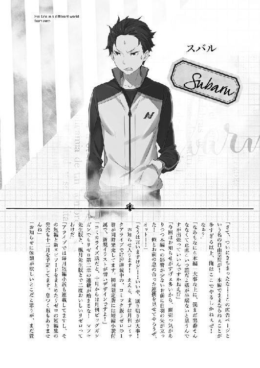

| Ｒｅ：ゼロから始める異世界生活 5<Ｒｅ：ゼロから始める異世界生活> (MF文庫J) | |
| 長月 達平 | |
| (2014) | |
ＭＦ文庫Ｊ
Ｒｅ：ゼロから始める異世界生活５
長月達平
口絵・本文イラスト●大塚真一郎
編集●池本昌仁
プロローグ 『その名は──』
──痩せぎすの男だった。
黒い装束の集団に囲まれるその男は、自らも黒の法衣に身を包んでいる。
スバルよりわずかに高い上背、目にかかる程度の長さの深緑の髪。頬はこけており、骨に最低限の肉と皮を張りつけて人型の体裁をとっている。
そう表現するのが適当と思えるほど、生気が感じられない肉体の持ち主だ。
ただし、その狂気的にぎらぎらと輝く双眸を除けばの話ではあるが。
「なぁるほどぉ......これはこれは、確かに興味深いデスね」
男は体を斜めに傾け、さらに首を九十度曲げて、ぎょろついた目で無遠慮にスバルを眺めている。奇態、と評する他にない振舞いの男は納得したように頷いた。
それから男は斜めに傾いたまま、無造作に自分の右手の親指を口の中に突っ込み、その先端を躊躇いなく噛み潰す。
肉が潰れて骨が砕け、滴る血を啜りながら男は澱んだ瞳を見開いて、
「あなた......もしや、『傲慢』ではありませんデスかね？」
男の問いかけは、壁に拘束されるスバルへ向けられていた。
しかし、スバルは男の質問に答えない。ただ、目の前に立つ男の顔をぼんやり見上げ、へらへらと場に似合わない笑みを浮かべているだけだ。
常軌を逸した振舞いの男と同じく、正気をなくした黒瞳が虚ろに瞬いている。
「ふむ......お答え、いただけないようデスね」
唇から指を抜き、男は血の流れる右手で思い出したように自分の頭を叩いた。
「あぁ、そうデスね。そういえば、失礼をしていたようデス。ワタシとしたことが、まだご挨拶をしていないではないデスか」
場違いな失礼を詫び、男は色素の薄い唇を横に裂いて禍々しく嗤った。
男はそのまま、ゆっくりと丁寧に腰を折り、
「ワタシは魔女教、大罪司教──」
腰を折った姿勢のまま、器用に首をもたげて真っ直ぐスバルを見つめた。
「『怠惰』担当、ペテルギウス・ロマネコンティ......デス！」
名乗り、両手の指でスバルを指差し、男は──ペテルギウスはケタケタと嗤った。
ケタケタ、ケタケタ、ケタケタと──。
第一章 『腐敗する精神』
１
──晴れ渡るような青空が、仰向けに倒れるスバルの視界いっぱいに広がっていた。
異世界召喚されてから、振り返って約二ヵ月半ほどが経過している。
その間、こうした形で青空を見上げることになったのはもう何度目になるだろうか。
入道雲が厚く日差しを遮っているが、煌々と照りつける陽光は雲の厚みを通り抜けて地上へ降り注いでいる。
日の光に瞼の奥を焼かれながら、ふとスバルはとりとめもなく思う。
「そういえば......こっちきてから今んとこ、雨の日に遭遇したことねぇな」
夜遅くにぱらつく小雨や、夕焼け前後の通り雨ぐらいなら何度か経験したが、一日降り続くような長雨には今のところ出くわしていない。
ルグニカの気温は長袖で過ごすにはわずかに暑く、体感的には元の世界の六月、あるいは残暑を抜けた九月ぐらいの感覚だろうか。
雨の少なさからして、こちらの世界の乾季というやつなのかもしれない。
「そろそろ終わりにいたしますかな？」
寝転がって思考遊びをしているスバルに、ふいにそんな声がかけられた。
仰向けのまま、首を持ち上げる視線の先に一人の老人が立っている。
背の高い、黒一色の執事服を身にまとう人物だ。年齢を感じさせない鍛えられた体と、ピンと伸びた背筋。豊かな白髪を丁寧に撫でつけ、品のある立ち姿を見せている。
柔和な面持ちには穏やかな皺が刻まれており、どこぞの温厚な老紳士という出で立ちであるが、その手には刀身の長い木剣が握られていた。
「いんや、まだまだ。今はちょっと、哲学してたとこでして」
「ほう、興味深いお話です。何を考えていらしたのですか？」
「上は大火事、下は洪水......これ、なーんだってね」
両足を振り上げ、振り下ろす動作で勢いをつけて立ち上がる。
体の芯に重いものが残っているが、打撲の痛みなどの影響は微々たるものだ。
軽く手足を回してそれを確認し、スバルは握ったままだった木剣をくるくると回して正面──ヴィルヘルムに突きつける。
「じゃ、またもう一手、ご指南お願いします」
「ちなみに先ほどの哲学のお答えは？」
「大した答えじゃないですよ──おねしょして逆ギレ」
戯言で応じて踏み込み、低い姿勢から半円を描くように木剣を振り抜く。
先端が大気を薙ぎ、風を巻く打撃は手加減抜きの一撃だ。
しかし、
「うなっ！」
「力みすぎです。手、足、首、腰。それと顔に」
打ち込む一撃がヴィルヘルムの木剣に受け流され、滑らかな動きで狙いを外される。頭狙いの一撃が相手の頭上を抜け、身を回した老人の掌で踊る剣撃が閃いた。
頭、喉、鳩尾、金的──正中線に連なる人体急所を優しく撫でつけ、ヴィルヘルムの木剣は触れるだけの衝撃でスバルの体を吹き飛ばす。
絶妙に手加減された返し技のおかげで、ダメージ自体はほとんどない。だが、それでも急所を打たれた衝撃に息が詰まり、受け身をしくじって苦鳴を上げる羽目にはなる。
「ぐえっ！」
背中を打った痛みに目を回していると、またしても大の字になった正面にこちらを嘲笑する青空が映った。澄み切った快晴の空がなぜか憎々しい。
「そろそろ終わりにいたしますかな？」
抑揚のない、皮肉も侮蔑も込められていないヴィルヘルムの穏やかな呼びかけ。
スバルの意思を問うその声も、すでに何度目になるだろうか。
「精が出るものだな」
青空を憎々しげに見上げていたスバルは、割り込んできた声に首をもたげる。庭園に大の字のスバルを見下ろし、テラスの柵にもたれかかる女性の姿が見えた。
「声を聞いていただけだが、ずいぶんと熱心にやっているらしい」
手すりに体重を預けてスバルたちを見下ろすのは、緑髪の美しい女性だった。
黒に近い光沢の緑髪を長く伸ばし、自然と背筋を正す凛とした雰囲気を持つ人物だ。女性らしい起伏に富んだ肢体を、男物と思われる軍服のような衣装に包んでいる。
この屋敷の主であり、ヴィルヘルムの主人でもあるクルシュ・カルステン公爵だ。
まだ年若い女性であるが、国の要職に就く才媛であり──今のルグニカ王国にあっては、非常に重要な立場にある人物でもある。
「これはクルシュ様。執務の邪魔をしてしまいましたかな？」
「いや、一息つこうと思っていたところだ。気にすることはない」
クルシュは寛大に頷き、それから視線を寝転ぶスバルの方へ移した。
「それに、誰かが懸命であることを頭ごなしに否定するほど横柄ではありたくない。雇ったものを遊ばせておくのも同じだ。存分に使われてくれ、ヴィルヘルム」
「承知いたしました。とはいえ」
クルシュ流の許可の出し方に、ヴィルヘルムが深々と腰を折って応じる。
それから老人はそっとスバルを流し目に見やり、
「そろそろ終わりにいたしますかな？」
「今の流れで終わるって言えるほど、俺も空気読めない奴じゃないつもりですよ」
草塗れの体をはたきながら立ち上がり、スバルは身を回して三度──否、十数回目の無事を確認。指の骨を鳴らしながら息を吐いた。
「美人に見守られながらメタクソにやられんのって、男の子的には結構堪えるイベントな気がすんなぁ。益荒男ゲージがガリガリ削れる」
木剣をヴィルヘルムに投げ渡され、無難にキャッチしたスバルは苦笑い。
「気にする必要はない。卿が痛めつけられるところを見るのは初めてではない」
「うぐっ」
容赦ない頭上からの一言に、胸を押さえてスバルが呻いた。
「私は経緯を聞いただけですが、今のはクルシュ様が直接的すぎたように思いますな」
「そうか？」
ヴィルヘルムの言葉に、クルシュは悪気のない顔で眉を上げた。
「実力の及ばぬ相手に届かないのは自明の理だ。それでもなお、曲がらないという志だけは示したのであれば、悔いることはあっても恥じることはないと思うがな」
顎に触れて自論を述べるクルシュに、スバルはささやかな居心地の悪さを味わう。
先日の醜態を一面的とはいえ評価されたのが意外だったのと、その醜態と前後してあった人生で最大の失敗が思い出されたからだ。
王城の控え室で起こした、最低最悪の別離の瞬間が。
「むしろ、私からすれば昨夜のことの方が受け入れ難い。又聞きではあるが......卿の心中を考えれば、悲憤は察して余りある」
「......たはは」
同情的な色がクルシュの視線に混ざり、スバルは渇いた笑みを浮かべて頬を掻く。
昨夜──ほんの半日前の出来事は、そう反応する他にないようなことだった。
このクルシュ邸までスバルを訪ねてきた、『剣聖』ラインハルトとの邂逅は。
「それに、だ。女性に見守られながら指南を受けるのが苦痛だというのなら、それはすでに延々と繰り返されていることのはずだろう？」
スバルの表情の変化を見て、クルシュは話題を一つ前に戻す。手すりから半身を乗り出す彼女の視線は、意味ありげに庭園の端へと向けられていた。
そこに、ここまで無言を守り続ける青い髪の少女が静かに立っている。
クルシュが少女を見ているのを理解して、スバルはバツの悪さに顔をしかめた。
「......身内の前で恥さらすのとはまた別の感覚なんだよ」
「いずれ敵になる相手の掌中で手の内をさらし続けるのも問題だと思うが......そんな相手を屋敷に入れている私も同類か。案外、自分の心はわからないものだな」
スバルへの答えで、クルシュは自分を省みるように何度も頷く。そうしてひとしきりの物思いを終えると、クルシュは眼下のヴィルヘルムを呼ぶ。
「ヴィルヘルム」
「は」
「少し体が動かしたくなった。今、残務を片付けてそちらへ下りる。予定より早いが、今日の指南を頼む」
「承りました。どうぞ、ごゆるりと準備を」
「今の私の心境だと、それは少々難しい申し出だな」
薄く微笑んで手すりから離れると、クルシュは背筋を正して執務室へ戻る。
凛とした仕草。緑の髪が踊るように揺れ、日の光を柔らかに受けてスバルの視界から消えていった。それを見届け、スバルは微かな緊張感を吐息に乗せて逃がす。
消えた視線に露骨な安堵を覚えて、スバルは自分で自分に苦笑する。
正直な話、スバルにとってクルシュという女性は苦手なタイプそのものだ。
真っ直ぐで揺るぎない眼差しは、こちらの心の奥まで見透かすように澄んでいる。実直で誠実な性格と、その信念に裏打ちされた言動にも居心地の悪さを覚えることが多い。
自信に満ち溢れ、己のやるべきことに一切の迷いを抱かない気高い在り様。
自然と今の自分の立場と見比べてしまい、情けなさが際立つ気がしてならなかった。
「そろそろ終わりにいたしますか」
気持ちを切り替えるように頭を振るスバルに、向き直るヴィルヘルムがそう言った。
「疑問形じゃないってことは、そういうことですかね」
木剣をゆらりと構えるヴィルヘルムの言葉──その語尾から疑問符が消えたのを聞き取り、スバルはこの苛烈で穏やかな時間の終わりを悟る。
素直に残念さが黒瞳に宿るスバルを見て、ヴィルヘルムは微苦笑した。
「クルシュ様がいらっしゃるとなれば、私も指南役の役目を果たさねばなりません。私がカルステン家に召し抱えられている理由の、半分はそのためですからな」
「これ以上のわがまま言ったりしませんって。ただでさえ、空いてる時間を割いてもらってるってのに、超バチが当たりますからね」
稽古の終わりに寂寥感を覚えつつ、スバルは木剣を正眼に構えた。
中学剣道止まりだが、それでも学んできた剣の基本だ。静かな心持ちで真っ直ぐ立つスバルを見て、ヴィルヘルムの表情からも甘さが消える。
「──いきます」
「いつでも」
宣言に従い、スバルの体が土を蹴って前に飛び出す。
牽制も何もない。スバルは真っ向から小細工なしの一撃を振り下ろす。
大上段から唐竹割りに落ちる一刀が空を切り、先端が終点を見失って大地に突き立つ。的を外し、勢いに足踏みしたスバルは前のめりに転びかけた。
そして、
「──ッ！」
無数の斬撃が閃いたように、打ちのめされるスバルは感じていた。
２
ナツキ・スバルがクルシュ・カルステンの邸宅に入り、すでに三日が過ぎていた。
カルステン公爵の邸宅は、王都の上層である貴族街の最奥──一際きらびやかな屋敷が立ち並ぶ一角に存在した。王都滞在中にのみ利用される別邸との話だったが、その規模はともかく、内装の豪華さはロズワールの本邸をも凌駕している。
ただ、その過剰に飾り立てられた屋敷の内装はクルシュ自身の趣味ではあるまい。来客の多い王都ならではの気遣い──貴族に要求される見栄の類だろう。
頻繁に屋敷を誰かが訪ねてくる様子を、この三日間でスバルは何度も目にしていた。
──ラインハルト・ヴァン・アストレアの来訪も、その出来事の中の一つだった。
半日前のその記憶は、スバルにとって苦々しいものとして刻まれている。
「練兵場の一件、止めることができなくて本当にすまなかった。ただ見ていることしかできなかった自分が恥ずかしいよ」
呼び出しに応じたスバルを前に、ラインハルトは開口一番に謝罪した。
魔法灯に照らされるカルステン邸の門前で、ラインハルトが頭を下げている。
『剣聖』と呼ばれ、国中の信頼と尊敬を一身に集める人物に陳謝されたのだ。合わせる顔がないと思っていたスバルは、そのラインハルトの行いに驚いてしまう。
「ま、待て待て待てって。何をどうしてお前が謝る必要があるんだよ。お前が悪いことなんてなんにもありゃしねぇだろ」
「そんなわけにはいかないよ、スバル。僕は君とも、ユリウスとも友人だ。友人同士の行き違いを止められなかったのは、僕自身の不徳の為すところだ」
「友人、同士......」
今、世界で二番目に聞きたくない名前を出されて、スバルは小さく息を呑んだ。
だが、ラインハルトに悪気はない。むしろ、あの場で横槍を入れられなかったことに感謝すらしている。もし手出しされていれば、惨めさは今の比ではなかっただろう。
スバルとユリウスの間の決闘──ほとんどその体を成していなかったとしても、決闘の決着は他者に委ねられるべきではない。その点だけは体裁を守っていた。
ラインハルトのそれは、感じるべきではない罪悪感に過ぎない。それでも謝罪せずにいられない誠実さこそが、ラインハルトを『騎士の中の騎士』たらしめているのだ。
「......まぁ、何はともあれわざわざきてくれたのは嬉しいよ。お前の方だって、今は色々と忙しいはずだっただろ？」
「忙しさと友誼を同じ天秤に乗せて語りたくはないところだけどね。今夜を逃せば、君にこうして謝罪する機会もしばらく取れそうになかったんだ」
「しばらく......ひょっとして、どっか行くのか？」
「王都を離れて、フェルト様を僕の実家へお連れする。フェルト様には学んでいただかなくてはならないことが多いし、新たに雇い入れた者たちの教育も必要だしね」
微苦笑するラインハルトだが、その笑みには先々の苦労に期待する色が垣間見える。円満な主従関係への不安は、少なくともラインハルト側は感じていないらしい。
「フェルトとは、うまくやってけそうなのか？」
「──奇抜だが、今までにない発想をされる方だよ。志と器に能が追いついたとき、きっと誰もが驚くことになる。僕はその未来の一助になれるよう、励むだけさ」
「......そっか。そりゃよかった」
迷いのない答えを聞いて、スバルは思わずラインハルトから視線を外す。
真っ直ぐに見ていられなくなったのだ。赤毛の青年は苦難を苦と思わず、主との関係にも悩んでいない。己に課した使命に従うことに、一切の憂いがないのだ。
それはあまりにも、今のスバルとは違いすぎる姿で──。
「後悔、しているのかい？」
自分を見ないスバルの態度に、ラインハルトは気遣わしげに形のいい眉を寄せる。
後悔──彼が口にした単語を頭に浮かべ、スバルは唇を噛んだ。
後悔ならずっとしている。昨日はその前のことを。今日は昨日のことを。明日になればきっと、今日のことを後悔することになるだろう。
生きることが選択の連続なら、生きることは後悔の連続だ。
選べなかった選択肢のその先を、今とは違う世界を、望まずにはいられない。
「気持ちがわかる、なんて軽はずみなことは言わない。ただ、あのときのことで忸怩たる思いがあるのは僕も同じだ。初めにも言ったけど、悔やんでいるよ」
沈黙するスバルに、ラインハルトは目を伏せる。
その言葉はどこか微妙に、スバルの抱く無念とは的を外している。だが、それも当然の話だ。立場が違えば見え方も違う。スバルとラインハルトと、同じものは見えない。
だからスバルは、ラインハルトが何を口にしたとしても動じない心構えをしていた。
ただし、その心構えも──、
「あの日の決闘に......君とユリウスとの戦いには何の意味もなかった。それがわかっていて何もできなかったことで、君は不当に傷付くことになってしまった。むざむざ見過ごしてしまったことを、ずっと気に病んでいたんだ」
「────」
そう言われてしまうまでの、短い覚悟でしかなかったけれど。
「──何の、意味もない？」
「ああ、そうだよ。あの場で君とユリウスがぶつかって何があった？ 君は傷付き、ユリウスも自身の経歴に泥を塗っただけだ。彼があの決闘の後で、謹慎処分を受けたことは知っているかい？ ユリウスも今頃、自分の行いを悔いているはずだよ」
ユリウスが処分を受けたことは初耳で、スバルにとっては意外な事実だった。
あれだけ観衆の騎士たちを味方につけていたユリウスだ。てっきり、その後の根回しもしてあるものだとばかり思っていた。それが処罰を受けていたとは。
──ただ、ユリウスがそのことを後悔しているとは思えない。
そればかりは、木剣とはいえ剣を合わせたスバルにだけははっきり理解できた。
そんなスバルの内心に気付かず、ラインハルトは誠意のこもった瞳で訴えかける。
「互いに時間をおけば、冷静に話し合うこともできるはずだ。よければ、僕の方でその場を用意してもいい。和解できれば、あの決闘のわだかまりもなかったことにできる」
「......あの決闘のことを、なかったことに？」
「そうさ。少し伝わり難いところがあるけど、普段のユリウスは誠実で話のわかる男なんだ。一度、腹を割って話せばすぐに誤解もなくなって......」
「ラインハルト」
懸命な声を遮り、スバルはラインハルトの名前を呼ぶ。
口を閉ざし、赤毛の青年は曇りない眼差しでスバルを見つめ返した。その蒼穹を映す瞳の中には、一切の負の感情は浮かんでいない。
つまり、ラインハルトは本気で言っている。
本気で、あの決闘の意味がわからないのだ。
──退くことのできない矜持のぶつかり合いが、彼には理解できないのだ。
「お前の気持ちはわかったし、嬉しいよ。お前は本当にいい奴だ」
「それなら」
「でも、その申し出は受けない。受けるわけにいかない。......話は終わりだ」
言い切って背を向けるスバルに、ラインハルトは驚いた顔で息を呑んだ。屋敷へ戻ろうと門を抜けるスバルの背に、彼はとっさに手を伸ばしかける。
「ラインハルト。お前が超絶いい奴で、今の言葉に何の悪意も悪気もなくて、全部全て何もかも純粋培養混じりっ気なしの善意から飛び出たアクションだってのはちゃんとわかってる。......それは、わかってる」
スバルの言葉に、ラインハルトの動きが止まった。
背中にそれを感じながら、スバルは振り向かないまま門をくぐった。
そして、
「だけど、それだけはダメだ。あの決闘の意味を......お前には、奪わせねぇ」
そんなことはスバルも、ユリウスも、決闘を見届けた騎士たちも望んではいない。
あの決闘に意味はあったのだ。確かな意味があったのだ。
『剣聖』に。ラインハルトに。それが理解できなかったとしても──。
「だとしても......君はあの決闘で何を得た？ 失ったものばかりじゃないのか」
遠ざかるスバルとの距離を埋めるように、ラインハルトは言葉を尽くそうとする。しかし、そのために彼が選んだ言葉こそが、決定的なものになった。
「エミリア様とのことだって、君は」
「今日は帰れよ、ラインハルト。お前のご主人様が、寂しくて喚き出さないうちに」
今、世界で一番聞きたくない名前を出されて、スバルは投げやりに剣聖に応じる。
高い音を立てて閉まる門が、この日の二人の別れを決定づけていた。
「......余計なお世話だってんだよ」
面と向かっては言えなかった悪態をこぼして、スバルは昨夜の記憶に歯噛みした。
唇を曲げ、真新しい記憶を振り払うように頭を掻き毟る。
「ダメですよ、スバルくん。頭を打っているんですから大人しくしていてください」
その寝転がるスバルの鼓膜を、慈愛に満ちた声が優しく撫でつけていった。
ちらと見上げる視線の先、スバルを見下ろして微笑むのは青い髪の少女だ。
黒を基調とした、丈の短い改造エプロンドレス。芝生に跪く膝の上にスバルの頭を乗せて、膝枕の姿勢を保つのは愛らしい顔立ちのメイド──レムだ。
スバル付きのメイドを仰せつかるレムは、スバルの髪を指で梳きながら囁く。
「特訓お疲れ様でした。しばらくそのまま、レムの膝枕でゆっくりしていてください」
「特訓......ってほどでもねぇな。単なる懸かり稽古だよ。見てて退屈だったろ？」
「いいえ、退屈なんて。レムはスバルくんと過ごせるだけで、十分に幸せですから」
降り注ぐレムの全肯定が、今のスバルには正面から受け止められない。
掌で顔を覆い、スバルの無様すら好意的に見るレムから視線を外す。遊ばれたも同然の稽古を、最初から最後まで見守られていたのだ。バツが悪いどころではない。
そうやって感情を誤魔化そうとするスバルに、レムは何も言わない。
ただ黙ってスバルの重さを愛おしげに受け止め、時間が止まっていないことを思い出させるように、柔らかな仕草でスバルの短い黒髪を梳いていた。
「......レムは、さ」
沈黙に耐えかね、先にスバルが音を上げる。
掠れたスバルの声にレムの指の動きが止まった。そのまま言葉を待ってくれるレムに甘えて、スバルはたっぷり時間をかけてから続きを口にする。
「俺のこと、情けないとか......思わないのか？」
口にしてしまってから、自分はなんと答えてほしいのだろうかと自問する。
肯定してほしいのか。否定してほしいのか。どこからどこまでを評価して答えを求めているのか。今か。それとも三日前か。あるいはもっと以前なのか──。
「思いますよ」
その自問が、あっさりと問いかけを肯定するレムの声に中断させられた。
「思うのかよ。ならなんで情けない俺と一緒に残ってんだ？ そう言われたからか？」
悩んでいた問題をすぐに紐解かれて、スバルは抗議するように下からレムを睨む。
逆さの視界に映るレムは、そのスバルの意地悪な言葉にゆっくりと首を横に振った。
「情けないと思うことと、一緒にいることとは矛盾したりしませんよ。それに命じられていなくても、レムはきっとスバルくんと一緒に残ったと思います」
「......なんでだ？」
「レムがそうしたいからです」
簡潔な答えだった。
ぴしゃりとそう言われて、スバルはとっさに二の句が継げない。何かを言わねばと迷った挙句、スバルはレムの答えに自分の胸の内が軽くなっていることを自覚した。
わからない自問自答に、わからない答えをそっと差し出されたように。
「レムは......すげぇな」
「はい。でも、姉様の方がもっとすごいですよ」
「そのラム至上主義だけは理解できねぇけど、すげぇよ」
降参するように手を上げ、スバルは全身を脱力させてレムの膝に全てを預ける。
レムは再び、そうして目をつむるスバルの前髪に指を差し入れて弄くりながら、
「レムはスバルくんがしてほしいと思うことをするために、ここにいますから」
「それだと、俺は叩きのめされるとこを見守ってほしいと思ってる上に、その後で情けない恥ずかしいって自虐してるのを肯定されたがってるみたいなんだけど」
「違うんですか？」
不思議そうな顔で首を傾げて、レムは純粋な眼差しで問いかけてくる。
それに対してスバルは、ただ深い息を鼻から吐いて、無言でいることを答えとした。
静かで、邪魔の入らない、怠惰な時間が流れ続ける。
「そろそろ戻りましょうか？ クルシュ様の剣の稽古のお邪魔になりますから」
「もうちょい。頭打ってるから、今は動くと危ないかもしれない」
移動しようとするレムの膝を捕まえ、頭を横向きにしてスバルは甘える。
「はい。──スバルくんが、そうお望みでしたら」
膝に力を入れかけたレムがその力を抜き、スバルの提案は受け入れられた。
その際限ない優しさに甘えながら、スバルは考えたくないことを考えずに済む、泥沼の安らぎへとその身を深く深く沈み込ませていく。
──王選の開始が宣言された日、スバルとエミリアが決別した日より三日。
ナツキ・スバルは順調に腐っていた。
３
何が悪かったのだろうと、スバルは考える時間があればそう考えてしまう。
嫌な記憶だとわかっていながら、気付けば思考はあの日の夕暮れに辿り着き、銀髪の少女が背を向けて遠ざかる光景を幾度も回想させられる。
何が足りなかったのだろうと、スバルは閉まる扉の音が響くたびに考えてしまう。
言葉が過ぎたことの自覚はスバルにもあった。
打ちのめされた直後だったことの影響もある。エミリアの畳みかける言葉に追い詰められ、気付けば本当に口にしたかったこととは乖離した内容を叫んでいた。
結果的にその言葉が、スバルとエミリアとの間を分かつ結果を生み出したのだ。
とっさに出てしまった言葉なのだから、その場限りの出任せなのだろうか。
とっさに出てしまったからこそ、心中にいつもたゆたっていた思いなのだろうか。
相手を思いやっていたことも、認められたいと思ったこともどちらも本当だ。
自分の本心があの場面でどこにあったのか、それすらももうわからない。
「──い、兄ちゃん。おい！ 兄ちゃん！」
すぐ間近から浴びせられるだみ声に、自問自答の海に沈んだ意識が現実へ戻された。
瞬きするスバルの正面で、野太い声を上げていた人物が呆れたように肩をすくめる。
「頼むぜ、兄ちゃん。あんま人の店の前で危ねえ目つきすんなよ。客足に影響する」
顔を縦断する傷跡が印象深い、傷面の強面が眉間に皺を寄せてそうこぼす。
現実に戻って早々にインパクトの強い顔面を直視し、スバルは静かに瞼を揉んだ。
「なぁ、オッチャン。──客に対して睨みきかせて脅すのはどうかと思う」
「してねえよ！ むしろ心配してんだろうが！ お前が得体知れない格好の野郎に連れてかれて、おまけにお前の伝言聞かせたロム爺さんとは連絡つかなくなるし、俺がどんだけ慌てふためいたか教えてやりたいぐらいだよ！」
怒声を張り上げる男が、太い腕をカウンターに叩きつける。途端、陳列台に乗っていた果物が衝撃で籠から転がり落ち、あわや雑踏に散らばりかける。しかし、
「食べ物を粗末に扱ってはいけませんよ」
踊るようにスカートの裾を翻し、店前の空間に着地するレム。彼女の腕には店頭と同じ籠が握られており、その籠で落ちかけた果物を全て柔らかく受け止めていた。
「おおう、助かったぜ、お嬢ちゃん」
ホッとした顔で、安堵とその離れ業に吐息を漏らす男──カドモンは回収された籠をレムから受け取ると、わずかに声をひそめながらスバルを見て、
「だから悪いこた言わねえ。この目つきの悪い兄ちゃんからは離れろ。不幸になんぜ」
「何を吹き込んでくれてんだよ。根も葉もないこと言い触らしたらダメだぜ、オイ」
「根も葉もないってほど的外しちゃいねえだろ。大体、こないだ連れてきた子とはまた別の女の子じゃねえか。前の子が......あー、なんでかあんま記憶に残ってねえが、残ってねえってことはこっちの子の方が可愛いってこったろ。節操無しとか地獄に堕ちろ」
「節操無しできるほど甲斐性あるように見える？ そもそも、なんで......」
エミリアときたことを忘れているのか、と口にしかけてスバルは口ごもった。
カドモンがエミリアを忘れているのは、エミリアの素性を隠すために施されていた認識阻害魔法の影響だ。それを思い出し、エミリアの顔が浮かんだ直後に胸が痛む。
黙り込むスバルに怪訝な目をして、カドモンはレムに言い聞かせる。
「ほれ見ろ、この悪びれもしない態度。こんなんに尽くしてても辛いだけだぞ」
「お気遣いありがとうございます。......ですが、レムは好きでやっておりますので」
頬を染め、ちらりと横目にスバルの様子をうかがうレム。その視線の熱に、カドモンはそれ以上は無粋と思ったのか無念そうに意見を引っ込めた。
「それはそれとして、今日は通りの雰囲気がいつもと違うな。人が多いのは変わらないけど......微妙に浮足立ってるっていうか」
口ごもったことを誤魔化すように、スバルは雑踏を眺めながら話題を変える。
「足を止めてる連中が、いつもより多いように見える......かな？」
「意外とよく見てるじゃねえか。まあ、そうだな。でかい出来事が起きるときは、なんであれ商人にとっちゃ稼ぎ時だ。今は噂の一つでも、人より多く欲しいとこだよ」
スバルの感想にカドモンが頷き、店先に並べている果物の一つを手にとって齧る。赤い果実に歯型を付ける主人を見て、スバルは「売り物だぞ......」と呆れながら、
「まぁ、王選の騒ぎに果物屋がどう商機を見出すのかってのは謎だけど。スタート時点で他に後れを取ってるって、もはや天賦の才だな、オッチャン」
「ほざけ。とにかく、いつもよりひそひそ話の割合が多いのはそういう理由だ。今じゃどこもかしこもその話で持ちきりだろうよ。ほれ、あれ見ろ」
勢いよく果実を芯だけにして、カドモンは通りの端にある立て看板を指差した。目立つのに必死な看板の並ぶ市場の中でも、立て看板は高さでその存在を主張している。
「まぁ、イ文字以外を使われると読めないんですけどね」
「んだよ、不勉強だな。じゃあ、お前は俺の店の看板は読めてんのか？」
「イ文字に近い象形文字が描かれてる気がするけど、字が汚くて読めません」
勉強不足を悪態で誤魔化し、スバルはカドモンを呆れさせる。
「で、結局のとこ看板にはなんて書いてあんのよ」
「見出しだけなら何度も言ってんだろ。『王選、開始』だよ」
要領を得ない返事にスバルが顔をしかめると、カドモンは頭を乱暴に掻き毟った。
「わかった。んじゃ、ちょっくら読んでやるよ。嬢ちゃん、ちょっと店番頼む」
「承りました」
当たり前のように仕事を放棄するカドモンと、そのフォローに回るレムの態度、違和感のない連携に違和感しか感じられず、スバルは肩をすくめる。
「そんなあっさり素人を店に立たすな。そしてレムもさらっと安請け合いするなよ」
「値札通りの代金で、商品と釣銭渡すだけの仕事だ。どうせ客なんざこねえよ」
「ついに自分で言い切りやがった！」
開き直った顔のカドモンに連れられ、手を振るレムに見送られて立て看板へ向かう。
「それにしても、老いも若きも王選に興味津々だな。オッチャンはどう思ってる？」
「そうさな。まあ、王様が誰になるかなんてのは雲の上の話だが、王座が空っぽってのは見過ごせるもんでもねえ。とっとと決まってほしいってのが本音だ」
スバルの言葉に、カドモンは苦い顔をしながらそう答える。
「でも、こう言っちゃなんだが、賢人会って人たちがいれば国政は回るんだろ？ 王様不在の状況って、どのぐらい国民に影響あるんだ？」
「おいおい、冗談は目つきの悪さだけにしとけよ。そりゃ国政に関しちゃ国王様はお飾りだなんて悪評もあったが......ドラゴンとの盟約は王族が代々継いできたもんだ。南のヴォラキアとの衝突が小競り合いで済んでるのも、ルグニカが龍に守られてるからだろ」
北のグステコ、東のルグニカ、西のカララギ、南のヴォラキア。
それが、この世界を支配する四つの大国の名前だ。他にも小国がいくつか点在しているとの話だが、いずれも四つの大国の属国扱いであるらしい。
「ヴォラキア帝国って......龍がいなくなったら攻め込んでくるのか？」
「富国強兵、弱肉強食があそこの帝政のモットーだからな。四百年前、龍がルグニカと盟約を結ぶ直前まで、戦火を交えてたって話だ。ドラゴンの横槍で歯痒い思いしたのを、今でも根に持ってるって臭い話だな」
「それが、王家不在の国民感情ってやつか」
「それでなくても、国って生き物の頭が取れてる状態は落ち着かねえよ。先王様は賢い王様じゃなくても、悪い王様じゃなかった。俺はそう思ってるからな」
大小様々な人種の入り乱れる雑踏を横切り、上背のあるカドモンよりさらに高い看板の前へ。同じ目的で看板を見上げる人々に紛れ、首を伸ばして読めない文字を追う。
「書いてあんのは王選開始の報せと、概要だ。三年後の親竜儀の前に国王を決めて、その後の儀式を執り行うって感じだな。あとは候補者のことが軽く書いてある」
スバルに代わり、カドモンが内容を読み上げてくれるが、知っている内容ばかりだ。興味が削げそうになったスバルだが、最後の『候補者』という単語がそれを引き止める。
乾いた唇を舐めるスバルを横目に、カドモンは納得するように顎を引いた。
「候補者が気になるのか？ 王選の候補者は全部で五人。中でも特に名前が知れ渡ってんのは、クルシュ・カルステン公爵とホーシン商会会長のアナスタシアって娘か」
「有名な人なの？ その、クルシュ公爵って人は」
「公爵様だぞ？ 王都に住んでて名前を知らない奴はまずいねえよ。まだ若いってのに家を継いだ女公爵で、王国史見渡しても傑出した才媛って話だ。当主を継ぐ切っ掛けになった、カルステン領での初陣の話は王都でも語り草になってるぐらいだしな」
「初陣......」
「カルステン領に厄介な魔獣が現れた際に、負傷された当時の公爵......先代様だな。その方に代わり、部下を指揮して迅速に事を収めたことで名が知れ渡った。もともと才気煥発って噂だったんだが、父親が十七の娘に家督を譲るほどの器ってわけだ」
クルシュの規格外の評価を人伝に聞き、スバルはますます肩身が狭い気分を味わう。
そのスバルの内心に気付かず、カドモンは顔の傷を指でなぞりながら、
「ホーシン商会にしても、ここ数年の大躍進を知らない商売人はいるめえよ。代表の若い女──アナスタシアって娘が大商会を食い潰して傘下に加えた話なんざ、まさに『荒れ地のホーシン』の立志伝そのもの。ホーシンの再来とも言われてるぐらいだ」
アナスタシアについて語るカドモンがどこか誇らしげなのは、同じ商人としての共感からだろうか。一介の商人が王候補、シンデレラストーリーここに極まれりだ。
凛とした佇まいが印象的な、鋼の如き信念に従うクルシュ。
そして淡い紫髪にはんなりとした関西弁が特徴的すぎるアナスタシア。
立て看板の内容は、王選の場で語られたものと相違ない。市井へ事実の周知を徹底し、過度な不公平感を抱かせない誠実な文面だ。
「とりあえず、この二人が今のとこ王選の本命って噂だよ。他国出身の商人よりか、王国の重鎮であるクルシュ様の方が有力だと個人的には思うけどな」
「ど本命、とは言われてたな」
ただし、それもその後の当人の所信表明によってかなり揺れ動いた評価のはずだ。
それでも、クルシュの立場と家柄が強力な後ろ盾であることは確かだ。彼女の演説を知らない市井の側にすれば、クルシュが王座につくのが最も自然な継承には違いない。
「本命がクルシュさん。対抗馬がアナスタシア......となると、大穴はどのあたりに？」
「大穴って話は難しいな。さっきの二人を除くと、残りの三人は無名もいいとこだ」
残る三人の候補者の名前を読み上げ、カドモンは困った顔で腕を組んだ。
「王都が長い俺も名前を知らん候補者だ。一応、プリシラって候補者は家名からして貴族みたいだが、残った二人は家名も見当たらねえ。ホーシン商会の商会主が候補に挙がってるあたり、候補者をどう選んだのかは正直疑問だな」
その点に関しては、事情を知らなければスバルもまったく同意見だろうと思う。
公爵家当主がいるかと思えば、他国の若き商会主がおり、名前が知れていないような傍系の貴族が名を連ね、残りは家名すら曖昧な出自不明の人物が二人。
選考基準を知らない国民には不親切な情報だ。ただ、竜を象った徽章が候補者を選んだと知っているスバルも、龍がどういう基準で彼女らを選んだのか真意はわからない。
面食いの龍が好みで選んだ、とはさすがに思わないようにしているが。
つまらない憶測に思わず失笑しそうになる。その矢先だった。
「ただ、候補者にハーフエルフが入ってるってのは、イカれてるとしか思えねえな」
目を細めて、唇を嫌悪感に曲げたカドモンが吐き捨てるようにそう言った。
「候補者の来歴がある程度書いてあんだが、エミリアって名前のハーフエルフ......半魔が候補者に入ってるらしい。馬鹿も休み休み言えってんだよ」
「半魔......かよ」
「魔女の係累にはお似合いの呼ばれ方だよ。お偉いさん方も何を考えてやがんだか」
頭二つは高い位置にある立て看板を睨むカドモン。その瞳には忌々しげな色が濃い。
そんなカドモンの言葉に、スバルはとっさに反応することができなかった。
「────」
スバルはこの傷顔の店主に、少なからず好感を抱いていた。
異世界で初めて言葉を交わした相手であり、再会後の関わり合いでも人となりに信頼の置ける人物だと思う。強面な見た目に反して気風の好い性格で、妻と娘をこよなく愛する好漢──少なくともスバルは彼を、善性の人物だと疑っていなかった。
そんな彼の口から、当たり前のように他者への誹謗中傷の言葉が出たのが意外でならなかった。それも、スバルにとっては決して聞き逃せない形で。
「......みんながみんな、その魔女だかなんだかと関係があるってわけじゃねぇだろ」
「あん？」
だからつい、口をつくようにして反論してしまっていた。
カドモンがおかしな顔をするのを見ながら、スバルは感情のまま言葉を重ねる。
「は、ハーフエルフだからってひとくくりにして、勝手に見切りつけんなよ。その、エミリアって子だって、すげぇ......こう、国のためとか思ってるかもしれないじゃねぇか。なんかすげぇ、いい子かもしれないじゃねぇか」
「待てよ。何を必死になってんだかは知らねえが、半魔を庇うようなことを言うのはよせ。誰に聞かれてるかわかったもんじゃねえぞ」
「ああ、そうだよな。恐い顔して、顔も知らない誰かの悪口を言ってるお父さんの姿なんて、職場見学にきた可愛い娘には見せられないもんな」
かなり強めの毒を混ぜた皮肉を口にするスバルに、カドモンは額に手を当てた。
「わかったからよせって。俺の口が過ぎたのは謝る。ほれ、この通りだ」
「......ちっ」
仕方なさの先行した謝罪ではあったが、大人の対応を見せたカドモンにスバルは引き下がる。が、そうして矛を収めたスバルに「だがよ」とカドモンは言葉を継ぎ、
「お前がどう思うかは自由だが、ハーフエルフが王様になるなんざ不可能だ」
「またそんなこと......っ。なんでだ？ 『嫉妬の魔女』が理由か？ その魔女様ってのがハーフエルフだったから、他のハーフエルフも全部危ないってのかよ!?」
「──そうだよ」
口論の再燃に苛立つスバルにとって、その一声は存外に冷たく響いた。
「まだそんなこと......ッ」
反論しかけたスバルの喉が詰まる。スバルを見るカドモンの目に、畏怖があった。
「魔女が恐い。それは当たり前で、誰もが持ってる共通認識だ。お前がどれだけ物知らずなのかは知らねえが、少なくとも大半の奴は同じ理由で半魔を忌避するさ」
「............」
「いいか。魔女──『嫉妬の魔女』はそりゃもう桁違いの化け物だったって話だ。四百年前に大陸の半分は魔女の影に呑まれて、数々の名のある英雄が、龍が、その前に沈んだ。神龍の力と賢者の知識、そして当時の剣聖がいなけりゃ世界は滅んでただろうさ」
聞き覚えのない単語と、聞き逃せない内容を並べられて、スバルはカドモンの真剣な面差しから目を離すことができない。
「だってのに、それだけのことをやった『嫉妬の魔女』の正体はほとんどわからない。わかってるのは魔女が銀色の髪をしたハーフエルフだったこと。言葉も通じず、意思の疎通ができない上に、世界中の全てが憎たらしくてしょうがないみたいに暴れ回ったこと」
カドモンの震える瞳孔に過る感情の波は、決して単調な文章だけでは表現しきれない、この世界を生きる人間の生の感情が存分に塗り込められていた。
スバルも絵本で目にしたように、魔女の伝承は活字や口伝、様々な形で綿々と語り継がれている。それは語り部によって幾重にも過程を変えながら、しかし絶対的恐怖という同じ終点に結び付き、この世界で生きる人々の心に消えない楔を打っているのだ。
「魔女は、恐怖の対象だ。得体の知れないそれをみんなが恐がってる。だから、わかっている内容だけでも、それを遠ざけずにいられるものかよ」
「......だからって、ハーフエルフを差別することを正当化するのは」
「少なくとも、半魔に性格がねじくれたのが多いってのは本当の話だ。もっとも、それが根っこからのもんか、そんな環境のせいなのかまではわからねえがな」
苦虫を噛み潰したようなカドモンのしかめ面は、スバルの絞り出すような言葉に対する彼なりの懊悩の結果なのだろう。
カドモン自身、自分の口にした内容の理不尽さを理解しているのだ。ただ、『魔女』を思って浮かび上がる感情が、その理屈への反論を良しとしないだけで。
そしてそれは、この世界の根底に根付いた普遍的な意識なのかもしれない。
「────」
それに気付いたとき、スバルは王選の場でエミリアが嘆願した内容の本当の意味を肌で実感する。ハーフエルフであること。それは彼女にとって切っても切り離せない宿命であり、決して他者と同じスタート地点に立たせてもらえない鉄の鎖なのだ。
「だから、そう思われてる以上は端から勝ち目なんかねえのさ。誰が好き好んでその半魔を担ぎ上げたのやら......ふざけたことをしやがる」
腕を組んで不満げにするカドモンは、今度は候補者であるエミリア本人から、勝ち目のない神輿に彼女を乗せた人物へと怒りの矛先を変えたようだった。
その姿勢はカドモンの善性を示すものだったが、そこにハーフエルフという存在への悪印象が根付いている以上は慰めにもならない。
エミリアという少女はまず、この偏見という障害と戦わなくてはならないのだ。
「あの子がそんなハンデを背負わなきゃいけない何をしたってんだ」
カドモンは、スバルを物知らずとそう言った。ハーフエルフの虐げられてきた歴史を、その原因たる魔女の恐怖を理解していないと。
確かにスバルはこの世界の歴史に対して無知の塊だ。
魔女の悪行に関しても、字面以上の内容を知ることもできない。
人々がハーフエルフをどれだけ恐れ、どれだけ遠ざけたのか。そうした環境にあったハーフエルフたちが、人間をどう思っているのか想像することも難しい。
でも、彼女は確かに言ったのだ。
『──そこまでよ、悪党』
凛とした銀鈴の声は、痛みと屈辱に這いつくばっていたスバルを確かに救ったのだ。
あのときの彼女の行動に、打算や思惑がどこにあったというのか。
スバルはこの世界の歴史を知らず、魔女を知らず、ハーフエルフを知らない。
だけど、エミリアのことは知っている。
『私の名前はエミリア。ただのエミリアよ。ありがとう、スバル』
あの銀色の髪をした、意地っ張りでお人好しで、自分の損得を考えずに動いてしまう少女が、『嫉妬の魔女』と同一視される謂れなんて微塵もないことを知っている。
決して自分に優しくない環境で生きてきたはずの少女が、それでも他者に優しく施すことのできる心根の持ち主であることを知っている。
たとえどれほど、この世界が彼女に厳しかったとしても、スバルだけは彼女に──、
『──自分の、ためでしょう？』
ふと、思考と思い出に割り込んできた冷たい声に背筋が凍った。
脳裏に描いていた愛しい少女の微笑みが、鋭い視線と厳しい声に挿げ変わる。
『信じたいのに......信じさせてくれなかったのは、スバルの方じゃないっ！』
信頼を踏みにじられた少女の悲痛な声が、スバルの狭い頭蓋の中に木霊している。
理解したつもりで、わかった気になって、知ったような顔をして、軽い気持ちで約束を破り捨てた相手への糾弾が再び胸に突き刺さった。
『──言ってくれなきゃ、わからないよ、スバル』
繰り返し繰り返し、思い出の中のエミリアがあの日のスバルの行いを責める。
胸を掻き毟られるような苦痛を味わい、悲しみに押し潰されそうになりながら、しかしスバルも自分を睨みつける少女に対して怒りを露わにする。
あれだけ尽くしてきた。あれだけ助けてきた。あれだけ傷付いてきた。それなら、報われることを望んで何が悪い。応えてくれることを望んで何が悪い。
──言ってくれなきゃわからないのは、俺の方も同じだ。
王選のことも、差別のことも、あの日の想いも、エミリアは何も教えてくれなかった。スバルを爪弾きにし、目的から遠ざけ、端役として扱おうとした。
だからスバルは、何も言ってくれないエミリアのことを何も知らない。
スバルはエミリアが、どんな暮らしをしてきたのかも、何を思って王座を目指しているのかも、自分を魔女と同一視する世界をどう思っているのかも知らない。
エミリアがスバルのことをどう思っているのかを、知りたくない。
「──兄ちゃん。大丈夫かよ、おい！」
「......え？」
気付けば、カドモンがすぐ間近でこちらの顔を覗き込んでいて、スバルはのけ反る。
「おわ！ やめろ、オッチャン！ 自分の顔が他人の死因になるって自覚持てよ！」
「ひでえ言い草だな！ さっきもそうだけど、急にボーっとすんな。持病か？」
「お、俺の胸を情熱に焦がすこの想いが病だと言うなら、あるいはそうかもしれない。時に優しく、時に厳しく、その病は熱病に似た厄介さで人を惑わすから......」
「お前が性質の悪い病気なのはわかった。もういいだろ。店に戻るぞ」
虚を突かれた内心を誤魔化す軽口に、カドモンは付き合いきれないと首を振った。店に戻る背中に続きながら、スバルは全身がじっとりと冷や汗に濡れていることに気付く。
それが自分のどんな感情を起因としていたのか、考える足取りはひどく重い。
「それと、余計なことかも知れねえが」
下を向いていたスバルに、こちらに背を向けたままのカドモンがふと呟いた。
カドモンはスバルの耳に届くかどうかというほどささやかな声量で続ける。
「大っぴらに往来で、魔女って単語を口にするのはやめとけ。俺も含めてだが......どこで誰が聞いてるかわかったもんじゃねえ」
先ほどの話の蒸し返し、というわけではないのだろう。
カドモンの声の調子の深刻さに、スバルは無言でいることを了承の証とした。
根付いている差別意識、畏怖の原因を口走ることで、誰の不興を買うかわからない。少なくとも、王都でこれ以上の揉め事を起こすのは御免だ。
「──誰が聞いてるか、な」
そのスバルの納得を余所に、カドモンがそう繰り返したのが印象的だった。
そのまま雑踏を抜け、店に戻るスバルたちの間の雰囲気はどこか重々しい。
スバルは自分の胸中の感情に整理がつかず、カドモンはスバルとの論争にむきになったことを恥じている様子だ。ほとんど無言のまま、二人はカドモンの店に戻った。
しかし、
「お帰りなさいませ。今、最後のお客様がお帰りになられたところです」
商品と釣銭を渡し、丁寧にお辞儀して来客を見送るレムがそう答えるのを、カドモンはポカンと口を開けて呆然と見つめていた。
間抜け面をさらす店主の眼前には、空になった売り場の陳列棚が覗いている。
店を任されて自棄になったレムが商品を投げ売りした──というわけではないのは、代金を入れた籠が貨幣でいっぱいになっていることから明らかだ。つまり、完売。
「お、俺の店の平均日販以上の売り上げが、この短時間で......」
商売人としてのプライドが傷ついたのか、顔を掌で覆ったカドモンが膝をついた。
店主の矜持を余所に、レムはするりとカウンターを抜けてスバルの傍らへ駆け寄る。
「どうです、スバルくん。レムのこの奮闘ぶり。スバルくんの恩人様と聞いていましたから、せめてお役に立とうと頑張ってみました。褒めてくれてもいいですよ？」
ちらちらとスバルを見やるレムが、見えない尻尾をぶんぶんと振っているのがわかる。
『褒めて褒めて！』と言外に主張するレムの様子に、スバルは自分の胸がわずかに軽くなっていることに気付いた。
「......やっぱり、レムはすげぇな」
「はい。でも、姉様の方がもっとすごいですよ」
「だからその超理論は俺にはわかんねぇって」
苦笑し、スバルは控えめに差し出されるレムの頭を優しく撫でる。すっかり慣れ親しんだ髪質を味わいながら、柔らかな手つきのスバルにレムも小さく喉を鳴らした。
そんな二人の様子を背後に、カドモンは自分の顔の傷を指でなぞって肩を落とす。
「やっぱ見た目がでかかったのか......」
その呟きは、自分の店の売上不振の今さらすぎる原因究明といったところだった。
４
「にゃーるほど。それで貰ってきたのがお土産のリンガってわけにゃんだネ」
切り分けられた赤い果実の山にフォークを刺し、果汁の沁み出すそれを口元に運びながら、頭部の猫耳を震わす人物は艶っぽい仕草で微笑んだ。
肩口で揃えた亜麻色の髪に、同じ色の短い猫の耳。大きく悪戯な丸い瞳と、髪を飾る白いリボンが印象的な美少女──風の、美少年というべきだろうか。
「ま、味見分だけ確保して、あとは厨房に渡してきたけどな。それはそれとして、流し目しながら唇ぺろぺろすんな。背中が寒い」
否、自分の外見と性別を知っていて振舞うならば、それは男の娘と呼ぶべきだろう。
時間は夕刻前のオヤツ時で、リンガは間食用にと持ち込んだものだ。
そのリンガは短時間で店の売上記録を更新したレムに、カドモンが感謝と悔しさの印として持たせてくれた土産だった。一度、着替えに部屋へ戻ったレムとは、後でこの部屋で合流し、王都滞在中の日課を夕食までこなす約束をしている。
「だってのに、部屋に戻ってみたら先回りしてやがる男の娘がいやがったと。鍵かけてなかったのは俺の不用心だけど、騎士様らしくはない非礼っぷりじゃね？」
「いいじゃにゃいの。それだけフェリちゃんが心を許してる証拠だと思って。こんにゃだらけた姿なんて、クルシュ様には間違ってもお見せできないもんねー」
言いながら男の娘──フェリスは倒れ込むようにスバルの隣に飛び込んでくる。弾む感触を尻に味わうスバルを、うつ伏せに寝転がったフェリスが意味ありげに見上げる。
「今、ドキっとしちゃった？」
「ピキっとしちゃった。悪いとも何とも思わないけど、そんな趣味とか欠片もありません。俺の性癖はいたってノーマル、女の子が好きだよ」
どんなに見た目が可愛くても、性愛が性別の壁を越えることはスバル的になしだ。
科を作ってショックを受けた顔のフェリスに、スバルは呆れたように首を振った。
「そもそも、お前に心を許される理由が思いつかねぇ。特別、お前と仲良くした覚えとかないんだけど、そういう危険なフェロモンとかフェロってんの、俺？」
「ああ、それは単純なお話。──だってスバルきゅんてば、フェリちゃんより間違いなく弱いから。弱々だから、安心するの」
頬杖をついたフェリスが事もなげに言ったのを聞き、スバルは一瞬だけ口ごもる。
「性格超悪ぃな、お前」
「あれれ、いっがーい。もっと怒るかと思ってたんだけどにゃぁ」
「事実は事実だろ。むきになったりしねぇよ」
自分が弱いと思い知らされるなど、スバルにとっては何度も経験したことだ。
異世界召喚されて以来、スバルは幾度も無力さに打ちのめされてきた。あの練兵場でユリウスと向かい合った日が最高潮なら、この屋敷でヴィルヘルムに打ち倒されるのは最多数といえるだろう。それにその無力感は何も、異世界の専売特許ではない。
自分の無力さの痛感など、どんな場所で生きていたとしても一度は味わうものだ。
「俺を弱い弱いとかいうお前は逆にどうよ。もちろん、近衛騎士ってやつに所属してんだしそれなりに鍛えちゃいるんだろうけど......」
「ん、フェリちゃん？ 剣の腕ならからっきしだよ？ 騎士剣も重いから外して、クルシュ様に貰った短剣しか持ってにゃいし。振ったら豆できちゃうから振らないもん」
けらけらと笑い、足をばたつかせているフェリスにスバルは鼻白む。
あっさり弱さを肯定する姿には、潔さと口惜しさを同時に感じる。弱みを弱みと思っていない態度が、今のスバルにはどうしても肯定することができない。
黙ったスバルの内心が透けて見えたのか、フェリスは「でもー」と語尾を伸ばして、
「フェリちゃんの取り柄はそれと別のとこにあるもんね。だから騎士として役立たずでも全然気にしにゃいのです」
「さよけ。それで当人が納得してんなら結構なこったよ。──結構なこった」
拠り所となる部分がしっかりしているからだろう。フェリスの発言には自信が満ち溢れており、それのないスバルは居心地の悪さを感じて視線をそらした。
と、そうしてスバルが背中を向けたからだろうか。ベッドに横たわっていたフェリスが体を起こして、そのままスバルの肩にしなだれかかるように体重を預けてくる。
「ドキっとする？」
「初日はしたけど、もうしねぇな。やるなら素直にさらっとお願いします」
「つまんにゃーい」
唇を尖らせ、フェリスは体を起こすとスバルの両肩にそっと手を添える。肩叩きするような体勢だが、フェリスはその体勢のまま静かに目を閉じた。
──温かみが、フェリスの掌を通じてスバルの肩から全身を循環し始める。
フェリスの掌から発される水のマナの力が、スバルの体の内側にあるゲートと呼ばれる魔法器官を巡り、力が充溢していくのがわかった。
「ゆっくりー、じっとりー、ふんわりー。あ、枝毛発見。スバルきゅんてば案外苦労してる感じが滲み出ちゃってたりして。あ、白髪もある。抜いとこ」
「痛っ！ つか、くっちゃべりながら仕事しないでくれる？ この、体の中をマナがギュイギュイ流れてる感じって結構気持ち悪いんだよ。気ぃ張ってないと目ぇ回しそう」
少し頭が重く、手足がだるい。健康になろうとする働きに、体が負けている感覚だ。
王都随一の水の魔法使いであるフェリス──本名フェリックス・アーガイル。
そのフェリスの治癒魔法の力で、スバルの体の中の損傷したゲートを治療するというのが、スバルがクルシュの邸宅で厄介になっている理由だった。
水魔法による治療は、単語だけ拾えば涼やかで優しげに思えるが、実態は決して生易しいものではない。魔法を使う器官であるゲート。スバルがそのゲートを損傷させたのは、枯渇しかけたマナをドーピングで無理矢理に絞り出したことが直接の原因だ。
無理を重ねた結果を癒すには、治療もそれなりの荒療治になるのが必然だった。
「ようは水の出が悪いホースの穴の空いた箇所を塞ぎつつ、管の中に溜まったカビやらゴミやらを押し出してるって治療法なんだよな......」
「なんだろ。なんだかあんまり嬉しくない言い方されてる気がするにゃー？」
「自虐ネタだよ。気にすんねい。あー、気持ち悪い」
首を回し、背後のフェリスに気分の悪化を訴えながらそれに耐える。
クルシュの屋敷での生活は三日目──つまり、フェリスの治療を受けるのも三日目になるのだが、少しはこの時間にも慣れが生じてきたのだろうか。
初日などは込み上げる嘔吐感が堪え切れず、即座に音を上げたものだったが。
「まー、初日は仕方にゃかったけどネ。一番、濁りに濁ってたところに直接ぶち込んだってのもあるし、心身ともに満身創痍で生ける屍状態だったのも影響あるし？」
「人の突かれたくないとこビシバシきやがんな、お前」
こちらの表情は見えていないはずだが、身じろぎ一つでスバルの思惑を読んでくるフェリスが小憎らしい。躊躇ない傷跡の抉り方は、自覚なく心の瘡蓋を剥がしてくるラインハルトよりも悪辣、と言っていいだろう。
「やっぱりスバルきゅん的には仕返しとか考えちゃってる感じ？ ヴィル爺に稽古つけてもらってるのだって、それと無関係ってわけじゃにゃいんでしょ？」
「そういう男の子的にデリケートな部分を突くのやめてくんない？ お前にだって俺の気持ちがわかる......わかるのか、この場合!?」
「わかんなくもにゃいよ？ フェリちゃんも強くなりたい！ みたいな時期はあったりしたしね。......まー、今はそんな無謀なことなんて諦めちゃってるけどさ」
男の娘な部分への言及はさらりと避けて、フェリスはわずかに声の調子を落とした。
その反応がどこかしら彼の本音に思えて、スバルは少しだけ驚く。フェリスのように割り切った人物でも、やはり迷った過去というものは持ち合わせているのだ。
迷いの果てにフェリスは自分の魔法の素質に気付き、武の道を進むことを諦めた。ならばスバルはどうだろうか。何か、他者に誇れるものが一つでもあるのだろうか。
それを見つけることができたのなら、この胸の惨めな気持ちは払拭できるのか。
「だーかーら、仕返しなんて暗いこと考えない方がいいんじゃにゃい？ こんなこと言いたくないけど......次があったら死んじゃうかもヨ？」
「......んなの、俺だってわかってる」
不貞腐れた顔で片目をつむり、スバルは口の中だけの呟きで応じる。
先のユリウスとの一戦で、スバルは彼に言葉にできないほどぶちのめされた。そしてそれだけやられたにも拘らず、ユリウスに情けをかけられたことも理解している。
そうでなければあれほど打たれて、後遺症の一つも残らないことの説明がつかない。
治療したフェリスの腕だけではない。ユリウスとスバルには絶望的な差があった。
それを理解した上で、スバルはヴィルヘルムに師事している。何もほんの数日の修行で段違いに強くなれるなど夢見てはいない。ただ──、
「いーじゃにゃい、怠惰に沈んでれば。スバルきゅんてば色々あって体は絶不調。治療の名目で寝ててもお咎めにゃし。心と体をゆっくり怠けさせて、誰に文句言われるの？」
スバルに言い訳させる暇も与えず、矢継ぎ早にフェリスは言葉を続ける。
微妙に鼻につく言い回しは思いやりに欠けていたが、内容は今のスバルの心境には至極甘美なものに思えた。
普段なら反感を覚えそうな物言いに、今だけなぜか心が揺らされる。しかし、
「──フェリックス様。あまり、スバルくんをたぶらかさないでください」
そこへ静かな声音が割り込み、スバルはやや焦りの感情を得て振り返る。
部屋の入口に立つのは、無表情でこちらを見ているレムだった。着替えに自分の部屋へ戻ったはずなのだが、その格好は王都見物から変わっていないように見える。
訝しむように眉を寄せるスバルに気付き、レムはふわりとスカートの端を摘んだ。
「お出かけ用のメイド服から、今は訪問用のメイド服に着替えています」
「お、おう、そうなんだ。レムはいつでも俺の意を酌んだ答えを返してくれるな」
「はい。スバルくんの前ではいつでも新鮮なレムでありたいので」
「気持ちは嬉しいけどその言い方だと生野菜とかみてぇだな」
鮮度感を前面に打ち出してくるレムにスバルがそう応じる。レムはそのスバルの言葉には取り合わず、視線をフェリスの方へ向けた。
「連日のスバルくんへの治療行為、感謝しております。ですが、それに乗じてスバルくんを誘惑するのはおやめください」
「誘惑だにゃんて人聞き悪い。フェリちゃんはきっちりかっちり、スバルきゅんのことを考えて言ってあげてるだけにゃのにぃ」
レムの言葉に妖しげに笑い、フェリスが再びスバルの背中にしなだれかかる。掌を通じて肩から流れ込んでいた力が、体を通じて背中全体から一気に注ぎ込まれる。
許容量を超えるマナの投入に、スバルの意識が一瞬にして飛びかける。
だが──、
「フェリックス様。お戯れは控えてください。冗談で済まない場合もございます」
飛びかけた意識が、柔らかな衝撃を頭に受けたことで舞い戻ってくる。
ハッと我に返るスバルの視界を、白い生地が覆っていた。目を凝らせば顔に押し付けられたそれが見慣れたエプロンだとわかり、レムに頭を抱かれていることにも気付く。
「おいおい、レム。人前でこれはちょっと恥ずかし......っ」
「スバルくんは少しお静かに。──フェリックス様？」
レムの腕が、羞恥を軽口で誤魔化そうとするスバルをさらに深く抱く。その唇が紡ぐ声は余所行きの、感情が凍えた冷淡なものだ。
「そっか。レムちゃんも水系統がちょっとは使えるんだっけ。それなら、フェリちゃんのやりように物申したくもにゃるかもネ」
悪戯を見破られた子どものようにこぼし、フェリスがスバルの背中を指でなぞる。
「おい、フェリス。そのなんか妖しい指使い、男の娘にされても全然嬉しくない......あれ、ちょ、レムさん？ 頭がその、気持ちいいけどちょっと力強い、強っ、ぎああ！」
「ああ、スバルくん、ごめんなさい。フェリックス様がなかなか離れてくださらないので......誰かに取られるぐらいなら、いっそと思って......」
「その発想ちょっと危ないな!?」
頭蓋骨が軋んだ気がして、スバルはレムとフェリスの二人から転がって逃れる。部屋の隅っこで警戒心たっぷりに二人を睨むと、レムは嘆くように首を横に振った。
「スバルくん、可哀想に。よっぽど、恐い思いをされたんですね」
「お前の最後の一言が一番恐かったよ！ レムちょっとヤンデレの素養あるよね!?」
スバルの抗議を無視し、寝台を挟んで向かい合う形になったレムとフェリス。レムの感情のない視線に、フェリスはバツが悪そうに亜麻色の髪に指を絡める。
「レムちゃんのお怒りはごもっともだけど、フェリちゃんも企みばっかでやってるわけじゃにゃいよ？ ほんのちょっぴりはスバルきゅんのことも考えてたってば」
「ほんのちょっぴり、以外の部分は？」
「残りはフェリちゃんの友達の気持ちを酌んで、それ以外の全部はクルシュ様のためだヨ？ 従者として当然じゃにゃい？ レムちゃんは違うの？」
「違いません。ですから、レムがなんと答えるかフェリックス様はご存知のはずです」
レムの視線にフェリスは何を見たのか、降参するように両手を挙げる。
「わかった。わーかーりーまーしーた。治療にかこつけて洗脳するのはやめたげる」
「今後の治療には、必ずレムが付き添いますので」
「あらら、信用のにゃいこと。べっつに、いいけどネ」
横目にスバルを見るフェリス。その視線からスバルを庇うようにレムが移動すると、フェリスは背伸びしてレムの肩越しにスバルを見下ろした。
「そんにゃわけで、レムちゃんのお叱りを受けちゃったから今日はここまで。次はもっとばれないような場所で逢引きしようネ？」
「逢引きとか俺に自覚ねぇし、そもそもお前さっき洗脳とか言ったよな!? そんな物騒なこと言う奴と二人きりで会うとかゾッとしねぇよ！」
「はいはい、誘い受け誘い受け」
「わかったようにわかってないこと言うなよ!?」
勝手に納得した顔でフェリスが寝台から降り、背伸びしながらドアの方へ向かう。
「レムちゃん」
その足が、扉に手をかける直前で止まって振り返る。
「はい」
「こんなこと言っても信じてもらえにゃいかもだけど......スバルきゅんのこと思ってあんなことしたっていうの、丸っきり嘘ってわけじゃにゃいんだよ？」
「......わかって、います」
後ろに立つスバルの位置からは、レムの表情を見ることができない。ただ、レムが短く答えるのに、ほんのわずかな躊躇いがあったのが気にかかった。
「そ。にゃらいいけどネ。じゃ、バイビー」
軽々しい言葉と笑みを残し、今度こそフェリスは客間から出ていく。
なぜだかドッと疲れた気がして、スバルは一気に脱力してへたり込んだ。
「治療の時間のはずだったのに、なんでこんな疲れた気分にならなきゃいけねぇんだ」
「スバルくん、大丈夫でしたか？」
「ん......大丈夫、だと思う。よくわかんないけど、なんか助けられたのか？」
「どうでしょうか。フェリックス様は取り立ててスバルくんに悪意を持っているわけではありませんし、さっきの行いも......真意はわかりませんが」
思案げなレムに、スバルは首をひねる。
「えーっと、結局、さっきはどんな状態だったわけ？」
「さっきまで、スバルくんはフェリックス様に全身のマナに干渉を受けていました」
「そうだな。治療のために、そうなってたはずだ。正直、かなり気持ち悪くなるしでいい気分じゃねぇんだけど、どうにか我慢してたっていうか」
「ああしてマナを他者に委ねるのは、自分の中にその人を受け入れるのと同じですから。フェリックス様の言葉を、スバルくんはずっと受け入れやすくなっていたんです」
「それ聞きようによるとかなりヤバい感じに聞こえますね!?」
スバルは慌てて立ち上がり、自分の体をぺたぺたと触って確認しながら、
「大丈夫か？ なんか変なんなってないか？ 心なしか俺のどこかが女っぽくなってたりとか、語尾が媚びたあざとい感じに仕上がってたりとか！」
「大丈夫、スバルくんは素敵です。ずっとスバルくんを見ているレムを信じてください」
微妙に聞き逃せない発言にも思えたが、それを聞き流してスバルはホッと胸を撫で下ろす。それから改めて、自分がどこにいるのかを実感した。
「そう考えるとアレだよな。ここって、言ってみれば敵の本拠地の一つなんだよな。だいぶリラックスして警戒心がゆるゆるだったけど」
「安心してください。ゆるゆるでだるだるでどうしようもないスバルくんが、何の心配もしないでいられるようレムが気を張っていますから」
「ゆるだるでどうしようもなく抜けててごめんね!?」
今、明かされる衝撃の真実。スバルがだらしなく過ごす間に、レムがどれだけ孤軍奮闘していたのかを想像すると居た堪れない。
「今後は俺ももう少し気をつけるよ。ここにいるのは『敵』ばっかりなんだからな」
「......敵、ですか」
視野狭窄になっていた自分を引き締め直すスバル。
そんなスバルの決意にレムは何かを呟いたが、スバルはそれに気付かない。
体の無事を確認すると、スバルは部屋の壁にある魔刻結晶を眺めて、
「おっと、時間ロスしたな。晩飯に呼ばれるまでお勉強しましょうか、レム先生」
そう言うと、スバルは部屋に用意された机に向かう。机の上にはリンガの残りと、ロズワールの屋敷から持ち出してきたスバルのお勉強セットが並んでいる。
いまだ異世界語をマスターできていないスバルの、お勉強の時間というわけだ。
「その呼ばれ方、何度聞いても慣れませんね」
「教わってる立場だし、いいと思うんだけど......嫌ならやめます？ 先生」
「いいえ！ そのままでお願いします！ レムだけの呼ばれ方ですから！ 他の人に言ったらダメですよ！ 怒ります！」
「そんなぐいぐいこられると俺もどうしようってなるよ！ ぬぐぐ、負けねぇぜ......！」
変な負け惜しみを発揮して、猛然と机に立ち向かうスバル。
その背後に立ちながら、レムは慈しむような目でスバルを見ている。しかし時折、心ここにあらずという遠い目をして、その表情をわずかに強張らせるのだった。
「先生、ここがよくわっかんねぇんだけど」
「もう、スバルくんは仕方ない人ですね。レムがいないと何もできないんですから。たまにはそれに対する感謝を行動で示してくれても構いませんよ？」
その表情の気配も、スバルの声を聞いた瞬間に霧散してしまうのだが。
５
「ちょうどいいところにいた。ナツキ・スバル。少し、付き合わないか」
その声がかかったのは、スバルが湯浴みを終えて部屋へ戻ろうという途中だった。
場所はクルシュ邸の二階ロビー。階段を上り切ったところで声をかけてきたのは、その手に盆を抱えた長い髪の女性だった。
一瞬、それが誰なのかわからなかったのは、服装と雰囲気がいつもと違ったからだ。
「......クルシュさん、か」
「そうだが？ 何かおかしなところでも......ああ、そうか。執務を離れた格好を卿に見せるのは初めてだったな。それなら戸惑いもあるだろう」
眉を寄せたスバルの反応だけで、何に戸惑ったのかを見抜いたらしいクルシュ。
彼女の格好は今、普段から着用している軍服のような衣装を脱ぎ、黒い薄手の寝衣に肩掛けのケープを羽織った状態だ。しっかり前を閉じた軍服と違い、ゆったりとした寝衣姿だと女性らしい体の起伏がはっきりとわかり、その印象が大きく変わる。
何となく気恥ずかしさで目をそらすスバルだが、クルシュはそれには気付かず、
「ともあれ、疑問が解けたなら幸いだ。最初の問いかけに戻るが、時間はあるだろうか。もしよければ、晩酌に付き合ってもらいたい」
「......俺、酒は飲めねぇんだけど」
「水を舐めるだけでもいい。私も酔うほど飲むつもりはないからな」
薄く笑い、クルシュは階段をさらに上へ。スバルは少し迷ったが、不興を買う必要もないと、先を行ったクルシュの後を小走りに追った。
──クルシュがスバルを連れて出たのは、屋敷三階のバルコニーだった。
「今日は夜風が涼やかでいい。夜空を見ながら酒を嗜むのに絶好の日和だ」
バルコニーの端に設置された白いテーブルと椅子。先に座るクルシュが視線で対面を示すと、スバルはおずおずと椅子に腰を下ろした。
「なんでまた、今日はお誘いに預かったんですかね。フェリスとかの方がいいんじゃ」
「もちろん、普段ならフェリスが付き合うのだがな。......今夜は仕事が長引いている」
クルシュが口にしたフェリスの仕事──それは、王都でも引く手数多の治癒術師としての活動に他ならない。夕方にスバルに行ったものと同等の治療を、フェリスは連日多くの人間に施している。それは本当に、休む暇もないほど過密なスケジュールでだ。
「それにたまには立場も肩書きも違うものと、こうして杯を交わすのも悪くはない」
「二度目ですけど、俺は酒飲めませんからね」
「氷はたくさん入れてやろう。冷たい水を杯に入れて交わせばいい。さあ」
置いた盆に並べた酒杯。片方には琥珀色の酒が、もう片方には透明な水が注がれる。差し出される水の酒杯を受け取り、スバルはしぶしぶクルシュの杯と器を打ち合わせた。
軽やかな陶器の音と、入れた氷が揺れる音が重なり、クルシュが目を細める。
「色々と思い悩んでいるようだが、安心するがいい。別段、卿から何かを聞き出そうと目論んでいるわけではない。そのような卑小な真似は誓ってしまいよ」
「いや、別に......そんな心配は」
「夜風に紛れて、不安と疑念の色が見える。下手な誤魔化しは不要だ。陣営的には政敵である以上、むしろ卿の警戒は好ましい。私も所信を忘れずいられる」
グラスに半分ほど注がれた酒を、クルシュは赤い舌で舐めるように楽しむ。内心を見透かされたような気分のスバルは、苦し紛れに冷たい水で喉を潤した。
「そういや連日、忙しそうにしてるけど......やっぱり王選関係で？」
「──。ははは！ 警戒は不要と言った直後に、すぐに相手の懐をまさぐるか。それはさすがに私も予想していなかった。政敵として、正しい在り方だと思うがな」
「持ち前の図々しさと空気の読めなさが、俺の最大の持ち味なもので」
「短所を長所のように売り込む二枚舌、も付け加えておくといい。確かに連日の忙しなさは王選の関係雑務が増えたためだ。フェリスにもヴィルヘルムにも苦労をかける」
酒杯を楽しげに傾け、クルシュは上機嫌に口を滑らせてくれている。この調子なら、とスバルはさらに色気を出し、ちらりと視線をバルコニーから見える庭園へと向けた。
「色々と屋敷に運び込まれたり、出入りしてる人たちもそれに関係してたり？」
「存外に抜け目がない......いや、あれだけ大っぴらにやれば気付いて当然か」
機嫌を損ねる様子もなく、クルシュはスバルの質問に唇を緩める。
「無関係ではないな。当家では今、ある出来事に際して人と物を集めている最中だ。近日中に少し、卿やレムにも迷惑をかけるかもしれんな」
「むしろ大迷惑をかけてるのはこっちなんで気にしないけど......ある出来事って？」
「──ヴィルヘルムが私に仕えている経緯を、卿は聞き及んでいるか？」
質問に質問で返されて、スバルは何も言えずに口ごもる。
ただ、クルシュの口にした出来事が、ヴィルヘルムと関連することだけはわかった。そしてそれ以上の内容に、彼の老人の許可なく踏み込むことができないのも。
「推測は自由だ。......喋りすぎたな。これではヴィルヘルムに叱責されるやもしれん」
「ヴィルヘルムさんはそんなこと主人にする人に見えねぇけど......」
「あれでヴィルヘルムは容赦がない男だ。一度、私が剣の指南を受けるところを見学するといい。初めて顔を合わせたときの話は、本人も恥と思っているだろうからな」
薄く微笑み、赤い舌先で酒を舐めるクルシュは話題を区切った。スバルも一度、頭をリセットするために別の話題を探る。
「剣の指南っていえば、クルシュさんも毎日熱心にやってるよな」
「女だてらに剣など振って、と卿も苦言したい腹か？」
思わず鼻白むスバルに、クルシュは片目をつむる。
「冗談だ。幼少の頃から言われ慣れていてな。カルステンの姫君は、乙女であるのに剣術狂い。花を愛でるより手折るのを好む、公爵家きっての痴れ者だと」
「......俺が聞いてきた噂とは、ずいぶん違っちまってるな。巷じゃクルシュさんのことはべた褒めで、王国史に名を残す傑物って話だったぜ」
「功績を見て評するところを変える。掌返しは打算的なこととは思うが、それまで結果を出せずに過ごしたのは私の怠慢だ。評価を改めた諸侯を責めるつもりはない。その市井の噂に関しては、面映ゆい評価と言わざるを得ないが」
好悪問わず、自分への評価を丸ごと受け止めるのは器の大きさの為せる業か。
このクルシュという女性をして、『女だてら』といった偏見の目は避けられない。彼女の評価が劇的に変わった功績──それに、スバルは思い当たる節があった。
「その掌返しの切っ掛けになったのが、有名なクルシュさんの初陣ってやつか？」
「む......」
話題に手を打ったスバルの前で、グラスに口をつけたクルシュが口ごもる。それからクルシュは琥珀色の双眸を細めて、
「恥だ」
そう言って、らしくない拗ねたような素振りで顔を背けた。
「恥って、そんなことないだろ？ 領地を襲った魔獣を、親父さん抜きで見事に仕留めたって聞いてる。それが初陣だなんて、格好いいじゃんか」
「格好いいものか。それに一つ、考えを正そう。私は魔獣を仕留めていない。ただ追い払っただけに過ぎん。負傷した父に代わり、厚顔にも臣下を指揮したことは軽率だった」
「でも、結果は出したんでしょ？」
「当然だ。父の反対を押し切ってまで出陣し、失敗したでは済まされない。ただ、結果如何ではなく過程が問題だ。あのときの私の青さは、私にとって耐え難い恥だ」
不機嫌ではないが、クルシュは取り付く島もない。
巷では英雄譚のように伝えられる事象も、当事者にとってはそうではない。クルシュにとってはまさに、スバルの選んだ話題は『弁慶の泣き所』というわけだ。
「卿もずいぶんと、意地の悪い話をするものだ。さすが政敵といったところか？」
そう言って話題を結び、クルシュは冗談めかした目でスバルを射抜いた。
まったく身に覚えのない容疑をかけられ、スバルとしては釈明の余地もない。気まずさを誤魔化すように水のグラスに口をつけ、話の変更を試みる。
「ち、ちなみにそれと無関係に何か変わったこととかありました？」
「──そうだな。王選の話が広まって以降、縁談の話が飛躍的に増した。もともと公爵家という立場上、何かと持ち込まれる話ではあったのだがな」
「ぶっ！」
政敵の内情を探る、という思惑とは予想外の話に進み、スバルは思わず噴き出す。
「え、縁談ってつまり、結婚ってことだよな？」
「私もすでに二十歳......年齢的には婚姻を結んでいてもおかしくない。性別と立場がややこしい故に、これまでは適当にかわしてきた話題だった」
「あー、公爵で女の人ってなると、確かに男は気後れする......かも？」
「正直だな。だがそういうことだ。これまでは直接出向き、私の人となりを見せれば手を引くものばかりだったが......今回ばかりは状況が状況だ」
瞑目し、クルシュはこれまでより多い量の酒を口に含んで舌で転がす。
王位候補者となったことで、クルシュの立場はこれまで以上に国の要となる。それまで縁談に乗り気でなかった連中も、こぞってクルシュに群がり出すことだろう。
「クルシュさんは、その縁談に対して前向きなのか？ 結婚って、する気で？」
「どうだろうな。さしもの私も思案する内容だ。婚姻を交わす相手によっては、王選を優位に進める意味でも力になる。これについては候補者は全員、独り身であるしな。条件は一緒だろう。未亡人のプリシラ・バーリエルのみ、少し状況は違うやもしれんが」
「そ、そっか......みんな独身だもんな。条件は同じ......結婚か......」
クルシュの意見を聞いて、スバルの胸中を不安の波が押し寄せる。
婚姻──権力者と強く結び付くことで、相手の陣営を取り込むというのは考えられる話だ。クルシュはもちろん、他の候補者にもこの手の縁談の話があっておかしくない。
それは当然、エミリアという少女に対しても同じことが言える。
「意趣返しにしては意地が悪かったな。許せ、ナツキ・スバル」
「......え？」
エミリアの婚姻の可能性に気を奪われていたスバルは、その謝罪に反応が遅れる。
「諸々の取り決めで、親竜儀における王選期間中は、候補者個々人の婚姻は禁じられている。個人に尽くす前に国家に尽くせという名目だが、事実上は婚姻関係で派閥競争を肥大化させないための苦肉の策といったところか」
「じゃ、じゃぁ、クルシュさんのとこにきてる縁談の申し込みってのは？」
「全て、王選終了後を見据えてということになるな。決定後に申し込むより、決定前に申し込んだ方が風聞もよいだろう。空手形を切ることになるのは御免だが」
スバルはホッと安堵した。協定で結婚抜け駆け禁止令が出ているなら、エミリアが知らないうちに誰かと婚姻を結ぶこともない。
「ただ、婚姻を結ぶのは後回しにして、内々に話をまとめておくことはできるぞ」
「......クルシュさん、俺の男心弄んで楽しんでるよな？」
「卿が先に私の恥辱をまさぐったのだ。このぐらいで痛み分けだろう」
不服を訴えるスバルに、クルシュは悪びれない顔でグラスを揺らした。
「それに身分違いの自覚があってなお、自分の心に正直な者などあまり見ないのでな。実際のところどういう決着を迎えるのか、私なりに興味深く思っている」
「人の恋路より自分の恋路でしょ。クルシュさんも二十歳なら、色々あんじゃないの？」
「残念だが、カルステンに生まれついた時点で自由な婚姻は望めない。それに女であるということも、私は殊更に執着しないことにしている」
弄ばれたことへのスバルの反撃には、思わぬ返答が伴っていた。
スバルの恋模様を意識する一方、クルシュは自身の自由恋愛をとっくに諦めている。結ばれる相手は自意識ではなく、身分や家柄によって選ばれるのが自然の結婚観だ。
グラスの中で溶ける氷を見るクルシュの瞳には、静かな決意と折れない信念が浮かぶ。長い時間をかけて形作られたそれに、とっさにスバルが返せる言葉は何もなかった。
夜風がバルコニーを通り抜け、なびく自分の髪をそっとクルシュが手で撫でつける。
白い肌。切れ長の瞳。美しい緑髪と、震えるほど気品に満ちた美貌の横顔。
女として生きることに執着はないと、そう言ってもクルシュは美しい女性だ。その事実は彼女の信念が気高く高潔であろうと、揺らぐことはないだろう。
「クルシュさんはさ......その、王選のことはどう思ってるんだ？」
沈黙に耐えかねて、スバルが選んだ話題は要領を得ないものだったかもしれない。クルシュは問いかけに「ふむ」と思案げに目をつむり、
「王選の場でも話したことだが、私は国の在り様に疑問を抱いていた」
「......そう、言ってましたね」
「仮に私が王座を得れば、方針はあの場で語った通りだ。にも拘らず、竜歴石は私を候補者に選んだ。龍との盟約を断つだろう私を、だ。これが龍の意思か、あるいは天の差配だとすれば粋なことをする。そうは思わないか、ナツキ・スバル」
クルシュの問いかけに、とっさにスバルは答えを返せずに押し黙ってしまう。
「私は私自身の能力や立場を、過少にも過大にも評価していない。評価は己ではなく、他者が下すものだ。故に候補者の地位を私が得たことも、目に見えぬ何者かが私を評価したからこそだろう。私のこれまでの生き方を、何者かが評価したからこそだ」
「その誰かの評価に、報いたいとか言う感じで？」
「逆だ。評価は他者が付けるものだが、後から付いてくるものだと私は思っている。その者の能力に見合った行いと、その結果を見た他者が付けるものだ。そう割り切る私を王座に手をかける位置へ招く竜歴石──その意図が、小粋なものに思えてな」
グラスの中で欠ける氷を見ながら、クルシュは琥珀色の瞳をわずかに細める。スバルは応答が思いつかない。ただ、見る世界が違うことを思い知らされた気分だった。
無言に耐え切れず、スバルは手元のグラスに入った氷を口に放り込み、噛み砕く。
「あーっ！ にゃんでスバルきゅんたらここにいるわけ!?」
沈黙を氷の音で誤魔化していたスバルを、唐突に割り込む声が非難する。
声の方を見れば、バルコニーに飛び込んできたのは肩で息をするフェリスだ。詰め寄ってきたフェリスがテーブルに手をつくと、グラスを揺らすクルシュが労をねぎらう。
「ご苦労だったな、フェリス。すまない。帰りが遅いと思っていたので、ナツキ・スバルを肴に先に一杯やっていた」
「俺を肴にって言った!?」
「もー、油断も隙もにゃいんだから！ あれ？ しかもクルシュ様、お酒がずいぶんといつもより進んでるじゃにゃいですか！」
グラスと酒瓶を見比べて、その中身の減りようにフェリスが言及する。
「スバルきゅんもちょっと親しげだし......そんなに楽しくお話を......嫉妬が！」
「期待以上に酒を楽しめているのは事実だな。同席者とも珍しく話が弾んでいる。辱められる話もあったが」
「そこだけ切り取ると人聞き悪ぃよ、クルシュさん！」
「むきー！ にゃんなのにゃんなの！ それにクルシュ様、そんな無防備な格好で！」
フェリスの指摘に、クルシュは寝衣に肩掛けだけの自分を見下ろした。それから首を傾げると、グラスを置いて立ち上がる。
「おかしいか？ 普段、フェリスと晩酌をするときと変わらない格好のつもりだが？」
「そーれーが！ ダメって言ってるんです！ フェリちゃんと一緒なときと、こんな飢えた獣みたいな男と二人きりなのを一緒にしちゃいけません！ 男は狼にゃんです！」
「自分を棚に上げるな！ お前も男だろうが！」
母親みたいにクルシュに注意するフェリスに、スバルもまた怒鳴る。スバルの心は、フェリスの性別に裏切られたときのことを忘れていない。
「フェリちゃんはクルシュ様をいやらしい目で見たりしにゃいからいいんですー。でもスバルきゅんはあっちにふらふらこっちにふらふらで、信用とかにゃいもん」
「戯れもほどほどにしておけ、フェリス。ナツキ・スバルの想い人が誰であるのか、王選の場にいた全員に知れている。私のような可愛げのない女になど、見向きもしまいよ」
同意を求めるようなクルシュの視線に、スバルは一瞬、逡巡しながら、
「えっと......まぁ、そうです......かね？」
「はあ？ 何なの？ クルシュ様に何か不足でもあるっていうの？ 殺すよ？」
「お前は俺になんて答えてもらったら納得すんだよ!?」
「待て。何故か今、卿の方から嘘と躊躇いの風が流れてきた。それはどういう......ああ、そうか。卿にはレムもいたな。確かに私の言葉が足りなかった」
「こっちはこっちで変な納得された！」
首肯するクルシュと、無感情にスバルを睨むフェリス。クルシュが出した結論も恐いが、普段は愛嬌のあるフェリスの真顔の迫力もかなりのものだ。
必死の弁明でどうにか誤解を解き、改めて三人でバルコニーの夜風を浴びる。
水をちびちびと舐めるスバルの前で、クルシュとフェリスが互いのグラスに酒を注ぎ足す。そのやり取りを見て、スバルはふと疑問を口にした。
「二人ってずいぶんと親しげだけど、付き合いとか長かったりすんの？」
「ふむ。敵情視察の続きというわけか？」
「そんなつもりじゃねぇよ。べた惚れのフェリス見て、純粋に疑問に思っただけ」
クルシュの隣に椅子を寄せ、フェリスは同じ酒を楽しむ主を横目にしている。
行き過ぎたほどのフェリスの想いは、短い時間で培われたものでは決してあるまい。
「そうだな。私とフェリスの付き合いは長い。もうかれこれ......十年になるか」
「十年と百二十二日と六時間ぐらいですネ」
「その正確さ恐いんだけど！」
睨み付けられた。余計な一言を後悔するスバルに、フェリスは自分の頬に手を当て、
「今でも、初めてお会いしたときのクルシュ様の御姿は目に焼きついて離れません。フェリちゃんはあの日から、クルシュ様の永遠の僕ににゃったのです」
「フェリスは少し大袈裟だな。私は私の為すべきところを為したに過ぎない。その結果としてお前という忠臣を得られたのは、生涯で最大の幸運と言えるだろうが」
何のことはない。ベクトルが違うだけで、この二人は互いにべた惚れの関係だ。王選に挑む主従のうち、関係性においてもっとも盤石といえるペアだろう。
「どっかの誰かさんのところとは大違いで、仲良しだもんネ？」
「──っ」
「もー、ホントにスバルきゅんてばわっかりやすいんだからー」
浮かびかけて黙殺した思考を、そっくりそのまま言葉にしたフェリスが笑う。頬を強張らせたスバルが睨みつけても、グラスを傾ける猫の瞳は素知らぬ様子だ。
「察するに、卿を足踏みさせているのはエミリアとの主従としての在り方か」
代わりに話題を引き継いだクルシュが、苦い顔のスバルを見ながら片目をつむる。小さく顎を引くクルシュは、アルコールに濡れる唇をそっと舐め、
「向き合い方の問題もあろうが、私とフェリスとの関係は卿の参考にはなるまいよ。卿が今、足踏みしている問題を私とフェリスは十年前に通過している」
「......俺が、足踏みしてる問題？」
「あるいは通過儀礼、と呼ぶべきかもしれないがな。主と従者、これが本当の意味で主従となるための......乗り越え方は人それぞれだろう。思えば仕えると決まったばかりの頃、フェリスも己に何ができるかと試行錯誤していたものだった」
「ちょ、ちょっと、クルシュ様！ やめてください、恥ずかしいじゃにゃいですか！」
いじめっ子の顔をしていたフェリスが、唐突に過去をばらされて赤面する。そのフェリスの様子にクルシュは首を横に振った。
「照れることはない。己の立場と仕える相手に相応しくあろうと、そう願って努力する姿に何の恥がある。私の方こそ、お前のあの果敢な姿に胸を打たれたものだ。ああまでしてくれるお前に恥じぬ主であろうと。今も、それができているかは定かではないが」
「フェリちゃんがクルシュ様に不満を抱くことなんて、一生涯ありませんよぅ！」
「お前は私が日がな一日怠惰を貪っていても同じことを言いそうだ。あまり私を甘やかすなよ。私はそれほど、堕落の誘惑に強い性質ではないのだからな」
クルシュが本心からそれを言っていたのだとしても、謙遜にしか聞こえない発言だ。フェリスはますますクルシュに熱っぽい目を向け、スバルは逆に居た堪れなくなる。
目の前の主従の関係が、絶対に崩れない信頼が、ひどく心をささくれ立たせていた。
「──下を向くなよ、ナツキ・スバル」
「......え？」
スバルを、クルシュの鋭い声が呼んだ。
「瞳が曇れば、魂が翳る。それは未来を閉ざし、生きる意味を見失うということだ」
「────」
「己の正しきに従うとき、下を向いて行うものにどれほどのことができる。顔を上げ、前を向き、手を伸ばせ。誰かのための行いも、相手を見ていなくては届くまいよ」
喉が詰まり、全身の血が凍る。クルシュの言葉は一瞬で、スバルの心を釘付けにした。
クルシュは硬直するスバルではなく、傾けた酒杯の中の酒を眺めている。
もしこのとき、その瞳に射抜かれていたらスバルはどうなっていただろうか。
──あるいはその瞬間、何の躊躇いもなくこの場に平伏していたかもしれない。
「ああ、クルシュ様......」
見透かされたことの驚きと、それを上回る為政者としての器への脱帽。スバルがとっさに跪かずに済んだのは、同じ言葉を耳に入れたフェリスが先に敬服を示したからだ。
「この身命、全てクルシュ様のために燃やし尽くします。今、改めてそう誓いました」
「ならば私はお前の忠義に全霊で応えるだけだ。──ナツキ・スバルも、努々、己の在り方を損なうな。私は卿のことを、つまらぬ敵とは思いたくないのでな」
フェリスの忠誠、クルシュの高潔。いずれもスバルの心胆を震わせる。
スバルは渇き切った唇を湿らせ、何度か言葉を紡ぐことにしくじりながら、
「敵に、塩を送ってくれるなんて......ずいぶんと、優しいんだな」
「此度の一件、国の未来を左右する大事だ。こう言っては不謹慎も甚だしいが、王座を奪い合うのであれば、相争う敵にも好敵手であることを望みたい。惰弱な相手と競って得た冠では、諸侯に示しもつかぬだろう」
「......相手が強かろうと、勝つ自信があるってことかよ」
「自信などない。あるのは意志だ。私は私の為すべきことを為すために、結果を引き寄せるための最大限の努力をする。故に相手に対しても、最大限のそれを望む」
どこまでも、卑賤な考えとは無縁なのがクルシュ・カルステンという人物なのだ。
こうして酒杯を交わすまで、彼女に抱いていた『誠実』『高貴』といった印象が変わる。
烈火の如く苛烈で、抜身の刃の如く容赦がない。まさしく、剣のような女性だ。
「にゃんだか堅苦しいお話ににゃっちゃったけど、ここらで力抜きましょうか」
その空気を割り、気持ちを弛緩させる声を上げるフェリスが手を叩いた。涼やかな風を浴び、額に汗を掻いていたことにスバルは気付く。
「興が乗ると酒の進みが早くていかんな。肩の凝る話をしてすまない」
「いーえいえ、クルシュ様が謝ることにゃんてありません！ ま、ま、スバルきゅんにもわかったと思いますヨ。やんなきゃなこととか、今後のこととか」
「今後の、俺がやらなきゃいけないこと......？」
話をまとめにかかるフェリスの言葉が、スバルにはひどく空虚に響いて聞こえる。
わかったはず、などと言われても心当たりがない。スバルがこの晩酌の時間で気付いたものは、クルシュとフェリスの間の絶対の絆と、自分自身の小ささと迷いだけだ。
やらなきゃならないことも、先のことも何も見えていない。
それなのに、スバルの何をわかったように語るのか。
「............」
「フェリちゃんとしては、スバルきゅんとエミリア様が仲違いしててくれた方がきっと楽にゃんだけど、クルシュ様がそれをお望みににゃらない。だーかーら、スバルきゅんは早くエミリア様と仲直りしてくれなきゃ。そのためにも、できること」
「できること」
そんなものがあるのだろうか。今、こうして足踏みばかりしている自分に。
「そ。フェリちゃんが昔、クルシュ様の騎士になり立ての頃、悩んで考えてたこと。自分に何ができるのか、やれるのか──それを費やして、尽くすの」
胸に手を当てて、その頃のことを思い出しているフェリス。クルシュがその姿を横目に唇を緩めるのを見て、スバルの胸中を一度、心臓が高く打った。
──ナツキ・スバルにしか、できないこと。
それはまるで、天啓がもたらされたかのように気付かされたことだった。
「できることなら、ある」
「────」
スバルの呟きを聞いて、二人がこちらを見た。
「俺にしかできないことならある。──ああ、そうだった。言われるまでもねぇさ」
わかった。否、わかっていた。
危うく忘れかけたことを思い出させてもらった。
クルシュもフェリスもお人好しだ。本当に、敵の陣営に全力で塩を送るのだから。
──スバルがエミリアのために何ができるのか、思い出させてくれたのだから。
「そうだ。......俺にはそれがあった。あったじゃないか」
力も、知識も、地位も身分も関係ない。必要ない。
フェリスが言った通り、それこそがスバルだけが持ち得る唯一にして最大の武器。
最初からそれはスバルの手の中にあったのだ。ただ、あまりにもたくさんのことが起こりすぎて、すっかり意識の隅へと追いやられてしまっていた。
ユリウスが、ラインハルトが、エミリアの姿が次々と脳裏に浮かぶ。
今のスバルの惨めな心情を、何より鋭利に傷付けることができる顔ぶれ。
──ナツキ・スバルが正しいことを、誰より証明しなくてはならないものたちだ。
「あとは切っ掛けだ。それさえあれば......何もかも、問題なんて消えてなくせる」
暗雲が晴れるような気分で、スバルは自分の心の迷いに確信を得た。
拳を握り、強く強く、脳裏に銀色の少女を思い描く。
「風が出てきたな」
ぽつりとクルシュが呟き、彼女は手の中のグラスを軽く回した。そして、
「明日はまた、少し荒れた天気になりそうだ」
溶けた氷が軽やかな音を立てて、グラスの中で綺麗に割れていた。
第二章 『動き出す事態とレムの意思』
１
額に木剣の先端が当たり、次の瞬間には遠心力を伴う一発に吹き飛ばされる。
天地が逆さになる感覚を味わいながら、スバルは腕を回して身構え、受け身を取って綺麗に転がる。転倒によるダメージをゼロにして、自身の上達に得意気に唇を舐めた。
「うげ、土付いてた、ぺっぺっぺ。草っぽい味がする、ぺっぺっ」
「そろそろ終わりにいたしますかな？」
「ご冗談を。俺の受け身の上達ぶりを見ましたかよ。今、花開く俺の受け身の才能！」
日に日にやられ役スキルばかりが上達して、自分で言っていて心が折れそうになる。
クルシュ邸における、スバルとヴィルヘルムの立ち合いは連日続いていた。
相変わらずスバルの攻撃は掠りもしないが、ただ漫然とヴィルヘルムにやられっ放しになっているわけでないことは、その受け身の上達から察せられるはずだ。
「ただし、真剣での立ち合いならば無用の技術ですな」
「事実言わないでくれます!? 俺の心の一本松にヒビが入ったよ！」
一太刀で終了の真剣勝負を思えば、磨きかかった受け身は確かに死にスキルだ。
修練専用の技術を伸ばす本末転倒感だが、その分、稽古時間が長く使えるのは事実。
「それにしても、今朝はいくらか普段と気構えが違うご様子ですが」
「昨日の夜、ちょっとクルシュさんにお悩み相談してもらったんですよ。──おかげで迷いが晴れました。今はかなりいい気分ですよ」
「先日読んだ本の中で、今のスバル殿のような発言をした人物が、慣れ始めた戦場を甘く見たことが理由で命を落としておりましたな」
「異世界でも死亡フラグって健在なんだ!?」
言ったら死にそうな台詞、というものの感じ方は世界を隔てても共通なのだと思う。
しかし、案じてくれているヴィルヘルムの言葉が今のスバルには待ち遠しい。
「スバル殿？」
「......なんでもないッス。本当に、なんでも」
訝しげに眉を寄せるヴィルヘルムに、スバルは笑みを浮かべて首を横に振る。
──『死』も『戦場』も、今ならば諸手を挙げて歓迎できる。
それこそが、ナツキ・スバルの価値を誰の目にも焼きつける見せ場なのだから。
「無駄が多い」
「うがっ！」
稽古を再開し、最小限の動きを意識して飛びかかるも隙間から迫る剣に打たれる。
無駄な力みと不要な運動力を全て利用され、さして力を込めたようにも見えないヴィルヘルムの剣撃によって、スバルの体が軽々と宙を舞った。
「なんのこれしき！」
頭から落ちれば大ダメージ必死だが、スバルは即座に頭を振って身を丸め、体のどこから落ちても大丈夫な鋼鉄の受け身体勢を取る。しかし、
「これで終わりと申しましたかな？」
丸まった手足の隙間に木剣が差し込まれ、滑らかな動きがスバルの体勢を解す。手足が広げられ、スバルは何が起きたのかわからないまま大の字に地面に叩きつけられた。
「ぎゃん！」
「自分の身に何が起きたのか、それを越えて受け身が取れて初めて上達です。何より」
打った鼻面を擦りながら抗議の視線を向けるスバルに、ヴィルヘルムは木剣を芝生に突き立てながら応じる。静謐な瞳に見つめられ、スバルは思わず息を呑んだ。
「最初から負けるつもりで挑みかかるなど、そんな戦い方を教えたとあっては私自身が納得できなくなりますからな」
「う......」
「よいですか？ 剣の振り方、受け身の技術。それらをお教えするより前に、もっと根本的な心構えについてお話しましょう」
図星を突かれて口ごもるスバルに、ヴィルヘルムは指を一つ立てた。
「──戦うと、そう決めたのであれば全身全霊で戦いなさい。敗北に至る能書きなど忘れて、どんな手段を用いても勝利という一点に貪欲に食らいつきなさい。まだ立てるなら、まだ指が動くのなら、まだ牙が折れてないのであれば、立ちなさい。立ちなさい。立って、立って、斬りなさい。生きている限り、戦いなさい。戦え、戦え、戦え！」
「────」
「それが、戦うということです」
息をつくヴィルヘルムの所作に、庭園を支配していた緊張感が霧散していく。
スバルは自分の心臓の鼓動がうるさいぐらいに鳴っていたことに今さら気付き、同時に心臓がきちんと命の鼓動を刻んでいる当たり前のことも意識した。
──それほどまでに、生きた心地がしなかったのだ。
つい先ほどまでの、『死』を歓迎するような浮かれた感情が一気に消沈する。
戦いの心構えを語り出した瞬間、ヴィルヘルムのまとっていた雰囲気は一変した。
温和で紳士然とした老人の姿が、スバルには剣を持つ鬼の姿のように感じられたのだ。
あるいは今の姿こそが、ヴィルヘルムという老人の本当の姿なのか。
王選の大本命、クルシュ・カルステンに剣の指南役を任せられ、その力を存分に振るう武人──ヴィルヘルム・トリアスという老剣士の。
「負けると、わかってても、勝つために挑む。......矛盾してるかもだけど、意味はわかります。理屈じゃなく、感情でわかります。なら......」
老人に気圧されながらも、スバルは萎えかけた闘志を燃やして言葉を紡ぐ。
何のこれしき、という意地があった。晴れた迷いが、見えた光明が、こんな短期間で折られるようなことがあってはならない。
ナツキ・スバルの想いは、そんなに安いものではない。そうでなくてはならない。
「──それができれば、俺もちょっとは強くなれますかね？」
「それとこれとは話が別ですな。強くありたいと思うことと、強くなることとはまったく別のお話ですから」
「ここ否定すんだ!? そこは肯定した方が物語が美しいと思いません!?」
「......残酷な嘘をつくことには懲りております。私は私にそれを許しておりません」
「時には真実の方が残酷なこともあるって俺は思いますけどね」
一瞬、ヴィルヘルムが目を伏せたことにスバルは気付かず言葉を紡ぐ。肩透かしのような感覚を味わいながら、木剣を握り直してふと呟く。
「剣の才能とか、俺は見込みありますかね？」
「私の見立てでは、残念ながらありませんな。スバル殿の剣の才は凡人止まり──私と、同じようなものです」
自嘲するような微苦笑を浮かべるヴィルヘルムに、スバルは驚いて片眉を上げる。
「変な謙遜しますね。ヴィルヘルムさんに剣の才能がないとか」
「事実ですよ。私に剣の才能はありません。もしもそれがあるなら、私はきっとこれほど剣を握り続けてこれなかったでしょう。ですから、スバル殿もなろうと思えば私と同じところに辿り着くことは可能です」
「......ちなみに、それってどれぐらい頑張れば？」
「大したことでは。半生を剣を振り続けることに捧げればよいだけです」
「だけって」
努力し続けることができるのが本当の才能、とはよく言ったものである。
実際、スバルがヴィルヘルムと同じ次元に到達できると言われたところで、老人と同じ時間を剣に捧げられるほどの覚悟も理由も思いつかない。
そもそも、スバルがこうしてヴィルヘルムに師事しているのだって──、
「雑念なしに剣に打ち込んで、初めて開眼できるみたいなことなんですかね」
「どうでしょうか。何かを掴んで急に強くなることなどありませんし、無心でいようと雑念塗れであろうと、最後に相手を斬ったものが勝ちである点は動かないと思いますが」
ドライな意見を述べながら、ヴィルヘルムは「それに」と言葉を継ぎ、
「こう言ってはなんですが、私は無心で剣を振ったことはあまりありません。特に剣を振り始めたばかりの頃などは、剣のことなどあまり考えておりませんでしたよ」
「じゃ、何を考えて振ってたんです？」
「ただひたすらに妻のことを」
「ヴィルヘルムさんてたまに奥さんネタでえぐいとこくるな！」
初対面の場で愛妻家的な発言があったのを覚えているが、ヴィルヘルムの嫁贔屓な発言は屋敷滞在中でも散見していた。よほど、夫婦円満であるのだろう。
微笑ましいエピソードに苦笑するスバルを見やり、ヴィルヘルムは己の顎に触れる。
「いずれにせよ、強くなるための心構えと気構えはそんなところです。まあ、あまり今のスバル殿には参考にならないお話でしたかな」
「どゆこと？」
スバルは首をひねる。
その仕草を見て、ヴィルヘルムは小さく首を横に振った。
「いえ。強くなる選択肢を捨てた相手に、強くなるための心構えを説くことはあまり意味のないことではと思ったものですから」
「────」
一瞬、何を言われたのかわからず、スバルの表情が凍りつく。
だが、その停滞も一瞬のことだ。スバルは即座におどけた様子で肩をすくめた。
「おいおいおい、ヴィルヘルムさんてば急に何ですかよ。事件起きる前に犯行止められた犯人ぐらいの驚きですぜ。俺が、なんですって？」
「ご自覚があるのならば、これ以上に言葉を尽くすのは無粋でありましょう。私も、差し出がましいことを申しました。この機を逃すと、伝えるのも難しいかと」
勝手な納得で口をつぐむヴィルヘルムに、スバルは言葉を重ねられない。
焦燥感が胸を焼いていた。ヴィルヘルムの言葉に、スバルは否定できない焦りを抱いている。その焦燥感が意味するところを、ヴィルヘルムに看破されていた。
その事実はこの瞬間のスバルの心を、耐え難いほど無遠慮に掻き毟る。
「スバル殿。今朝はどうやら、ここまでのようです」
「──え？」
得体の知れない冷や汗を掻くスバルは、屋敷の方を見るヴィルヘルムの声に顔を上げる。つられて彼の視線を追うと、庭園に小走りにやってくる影──レムに気付いた。
普段から感情を見せないようにする彼女の表情に、静かな緊迫感が走るのが見える。
何事か、起きたのだ。
そしてそれは今のスバルにとって、幸いともいえる救いであった。
ヴィルヘルムとの会話、それを忘れさせてくれる絶好の機会。レムの焦りと不安の表情に、スバルは安堵すら抱いていた。
あるいはそれはスバルが、予感を覚えていたからなのかもしれない。
「スバルくん。──大事なお話が」
正面に立ったレムの真剣な眼差しに、スバルは心が波打つのを感じる。
──それが期待の感情であることを、スバルは誰にも悟らせないようにしていた。
２
「その様子を見ると、すでに話は聞いているようだな」
やってきたスバルを見て、応接間で待っていたクルシュは得心したように頷いた。
応接間にはクルシュとフェリス、主従が揃ってスバルたちを待っていた。
遅れて入室したスバルは先手を取られた感が否めないまま、小さく首を横に振る。
「詳しい話はまだだ。レムも、漠然としたことしかわからないみたいだし」
スバルが視線だけで隣に立つレムを示すと、彼女は緊張の見える表情で顎を引き、
「レムが感じたのは、あくまで姉様との共感覚を通じたものですから。姉様の千里眼ならもっと詳しい状況も拾えたはずですけど......」
目を伏せ、力足らずを悔やむように言葉尻を曇らせるレム。
そのレムの答えに、クルシュは感心したような吐息を漏らした。
「共感覚──一部の亜人は血族や双子など、近しい関係と言葉を介さない意思疎通が図れるとは聞いていたが......王都とメイザース領ほど離れていても可能なものなのか」
「申し上げました通り、漠然としたものです。強烈な感情や、伝えたいと強く願った言葉などが伝わってくることはありました。ですけれど......」
「その感じだと、ずーいぶんと不穏にゃ感じの共感覚がきちゃったのかにゃ？」
ぴくぴくと猫耳を震わせ、座るクルシュの後ろで軽薄な姿勢を貫いているフェリス。彼の態度にスバルは癇に障るものを覚え、立ち位置を変えてレムの前に出た。
「もったいぶった言い方すんなよ。そっちでもなんか掴んでるから、レムのふわっとした言葉にも即応してんだろうが。情報寄越せ」
「くれくれ君は嫌われるヨ？ それに、色んにゃところに網張って情報集めるのもタダじゃにゃいんだしさー。ただの患者で客人のスバルきゅんに、聞かせる理由ってある？」
「お前......っ」
フェリスの言葉はいちいち正論だ。
名目上は客人と扱われていても、スバルの立場は患者あるいは部外者だ。関係者と言い張っても政敵の陣営である以上、欲しいと喚いて餌をくれる馬鹿はいない。
「フェリス。そう邪険に扱ってやるな。何も進んでお前が悪役を演じる必要はない。ナツキ・スバルを苛めても、得られるのはレムの怒りの眼差しだけだ」
「はーい」
しかし、己の浅はかさを呪うスバルに代わり、フェリスを窘めたのはクルシュだった。クルシュは一人だけソファに腰掛けたまま、対面の席をスバルへ勧める。
「自分を省みることは前進に繋がる。が、時と場合によりけりだ。今は互いの意見のすり合わせが優先だろう。どうだ？」
「......もちろんだ。タダ乗りみたいで悪いが、話を聞かせてほしい」
勧められるままソファにスバルが座り、その隣にレムが控える。
「メイザース領、つまりロズワール辺境伯の領地だな。彼の屋敷のあるあたりで厄介な動きが見られるらしい。すでに領内の一部は、辺境伯の命令で厳戒態勢とのことだ」
「厄介な動き？ 厳戒態勢？」
物騒な単語にスバルは眉を寄せる。レムの共感覚の時点で、穏やかな話ではない覚悟はしていたものの、具体的な内容に触れると焦燥感が募らされた。
「実際、メイザース領で何が起きているのかまではわからない。だがもともと、予想された事態でもある。辺境伯がエミリアを王候補として擁立──つまるところ、ハーフエルフを支援すると表明した時点でな」
「なんだよ。ストライキ......領民から不満の声でも爆発するってのかよ」
「当然、その可能性もある。『嫉妬の魔女』の悪名が広がっている以上、ハーフエルフであることはそれらの偏見と戦っていくことを避けられない」
とっさに浮かんだ疑念を口にすると、クルシュはあっさりそれを肯定する。
ここでもまた、エミリアの出自が彼女の枷となることがスバルには許せなかった。
エミリアの人柄も知らず、偏見だけで物を語る顔の見えない連中が憎たらしい。
「当人も覚悟の上で選んだ道のりだ。卿が憤るのは筋違いというものだろう」
「筋違いなのは俺か？ そいつらか？ ......そんなくだらない理由でロズワールの領地でいざこざが起きてるってのか。それもボヤ騒ぎじゃ済まない、大火事になるって？」
「事の仔細は別として、大筋はそれで正しい。レムの共感覚も、それで説明がつく」
クルシュが話の矛先をレムへ向けると、一同の視線が押し黙る彼女へ集まる。
「姉様から伝わってきた感覚は、いくらかの焦りとたくさんの怒り......でした。伝えようとしたものではなく、漏れ出して伝わってしまったのだと思います」
「その共感覚ってのは、そんな頻繁にお互いに通じ合ってるもんなのか？」
「いいえ、滅多なことでは。ある程度、意識して制御しています。今回のような場合は、姉様の自制を通り越してレムに伝わってしまったのだと思います」
説明が後半にさしかかるにつれ、レムの言葉から不安の色が隠せなくなる。
ラムの精神的な強さは、ロズワール邸随一と言っても過言ではない。事態がそんなラムの自制心を超えて危急の状態となれば、それが只事ではないのは明白だ。
それなのに、ラムの共感覚はそれ以降、レムに助けを求めようとはしてこない。
「関わらせないようにでもしてる......ってのか」
口の中だけで呟き、スバルは自分の想像に身を焼かれそうな感情を覚えた。
共感覚から伝わる危機的状況で、レムを呼び戻さない理由。それはレムに情報が伝わることで、スバルにも同じ情報が伝わることを避けたい意図があるからとしか思えない。
──それほどまでに、『彼女』はスバルを自分の問題に関わらせたくないというのか。
「でも、困ってるんだろ......？」
事が王都に拠点を構えているクルシュの耳に届くような状態なのだ。
頼れるものは相変わらず少なく、敵はエミリアにとって理不尽なほどに多い。そんな状況下で、何の裏表もなく味方になってくれる存在がどれほどいるというのか。
いるはずがない。なぜならエミリアの絶対の味方は今、彼女の傍にいないのだから。
ここにこうして、取り残されてしまったままなのだから。
エミリアだってそのことに気付けば、きっと後悔するに決まっているのだ。
だから──、
「助けに、いかなきゃいけないよな」
顔を上げて、決断するスバルの呟きに今度は視線が集まる。
クルシュが片目をつむり、フェリスが悪戯な口元をそっと閉じる。そして、
「い、いけません、スバルくん......！」
レムが慌てた顔でスバルの袖を引く。
レムの瞳に浮かぶのは焦りと戸惑い、そして悲しいぐらいの懇願の色だった。
「エミリア様の、ロズワール様のお言いつけを守らなくては。スバルくんは治療に専念するようにと。レムも、同意見です。今は体の治療が最優先で......」
「そうこうしてる間に取り返しがつかなくなる。レム、あのときと一緒だ。あの魔獣の森に入る前に、話したときと同じだ。俺たちで、どうにかしてやるしかない」
「──っ」
スバルの言葉に、レムの表情が痛ましげに強張った。
以前、同じことを言ったことがあった。魔獣の森に、連れ去られた子どもたちを取り戻しに行く直前、スバルは引き止めるレムに同じことを口にした。
そのときの結果がある。子どもたちを無事に救い出せたのは、あの決断のおかげだ。だからレムも遠からず、スバルの判断をわかってくれる。
「聞いての通りだ、クルシュさん」
縋りつくレムを押しのけて、スバルは正面に座るクルシュを真っ向から見据える。
「俺とレムは屋敷に......エミリアのところに戻る。事が片付くまで治療はお預け......」
「ナツキ・スバル」
陣営としての判断を伝えようとするスバルを、短く名を呼ぶクルシュが遮った。
息を詰めるスバルを、クルシュの透徹した眼差しが見つめている。ひどく心がざわめき、相対する存在が何者であるのかを見失う感覚。そして、
「──ここを出るのであれば、卿は私にとって敵ということになるな」
冷然と告げられた言葉の切れ味に、スバルは実際に身を斬られたように錯覚する。
そして、切り傷から痛みが伝わるように理解が広がり始めると、
「そ、そりゃまたどういう......」
「一つ、卿の考えを正しておこう。私が卿を客人として扱い、フェリスの治療を受けさせているのはひとえに契約があってのことだ」
「契約......？」
「そう、契約だ。卿の治療に関して、私とエミリアとの間にはある契約が結ばれている。私が卿を客人として当家で預かるのは、見返りあってのことというわけだ。だが......」
言葉を切り、クルシュは自分の胸に手を当てて己を示した。
「契約が交わされたのは王選の始まる前、今とは状況が違う。公に政敵となった以上、エミリア陣営との交渉は慎重を期さなくてはならない。卿の扱いに関する契約も同じだ。王選開始前の契約を、王選開始後に状況が一変しても守り続ける義理はない」
繰り返される『契約』の単語が、スバルには『約束』の単語と被って聞こえる。
それはエミリアとの決別の記憶に繋がり、スバルにはひどく胸が悪い。
「この場合の状況の一変は、卿が当家を離れた時点とする。途中でそちらの側から契約を手放すのなら、後は互いに遺恨なく、私とエミリアは敵同士というわけだ」
さらりと敵対宣言をしてのけるクルシュに、スバルの方の理解が追いつかない。
スバルとて、字面上ではクルシュたちが『敵』であるとは理解していた。この屋敷で過ごす無警戒の時間を反省し、レムにも気持ちを切り替えると言ったばかりでもある。
だというのに、スバルはそれでもまだ理解が足りていなかった。
目の前の人物が、自分とエミリアに立ち塞がる強大な敵であるという事実の。
「勘違いしてたぜ......あんたとは、ひょっとしたら仲良くできるんじゃないかなんて」
「────」
「あんなの、酒の席の戯言だよな。できることをやれなんて......敵に言われた言葉を真に受けた俺が馬鹿だ。せこい真似してでも、相手の足を引っ張るのが正しい姿勢だよ」
もやもやと胸の中に込み上げてくるのは、王選の場で感じたものと同じ疎外感だ。
先日の夜、酒杯を傾けながら交わした記憶が色褪せて、裏切られたような気分になる。他でもないクルシュこそが、スバルに『できることをしろ』と言ったのだ。
それなのに立ちはだかるのは、裏切りではないか。
「ようはピンチのエミリアを助けられたら困るから、俺を行かせたくねぇんだろ？」
「......勘違いしにゃいでほしいんだけどさー」
それまで黙っていたフェリスが、見かねたように口を挟んでくる。
険のこもったフェリスの視線に、スバルは唇を噛んで言葉を呑んだ。
「クルシュ様が今してるのは、意地悪じゃなくて温情だから。別に二人がエミリア様を助けに戻ったって、全然こっちに損にゃんてにゃいんだヨ？」
「フェリス、よせ」
「いーえ、言います。ちょこーっと勘違いが酷すぎるから、そのあたりのところを誰かが言ってやんなきゃダメなんですよ」
クルシュの制止を振り切って、フェリスはスバルを睨みつける。
「スバルきゅんが行ったって、状況は変わったりしない。行くだけ無駄。おまけにエミリア様が対価を支払ってまで結んだ契約まで無駄になる。王城であれだけ無様さらして、練兵場でユリウスにとことんやられてまだわからにゃいの？ 大人しくここで成り行きを見守りながら、体を治すことに専念する方がよっぽど身の程を弁えてるってことに」
──音が、した。
ぷつりと、頭の中で何かがはち切れるような音が。
それが癇癪を押さえ込んでいた袋の口だったと気付いたとき、スバルは与えられた屈辱に唇を噛み切りかけるほどの憤怒に見舞われていた。
心の中を炎のような激情と、勝手な信頼を裏切られた羞恥心が駆け巡った。
それらの激発は、スバルの決断の後押しをするには十分すぎる。
「決めたぜ。──屋敷に、エミリアのところに戻る。短い間だけど、世話になった」
「スバルくん！」
決別を口にするスバルに、取り縋るような声でレムが叫ぶ。
だが、スバルはレムに掌を向けると、席を立って正面からクルシュを見下ろした。
腕を組んで瞑目するクルシュの内心はわからない。
その隣でフェリスは長い溜息をこぼし、わかりやすく渋い顔をしていた。
「人の気も知らないで......忠告を素直に受け入れるのも、男の甲斐性じゃにゃいの？」
「お前の忠告のおかげで決断できた。ありがとうよ」
はっきりと皮肉で返すスバルに、フェリスはそれ以上の言葉を諦めた様子だ。
代わりに会話を引き継いだのは、腕組みを解いてこちらを見上げたクルシュだった。
「ナツキ・スバル。悪いが、当家の長距離移動用の竜車は全て利用が決まっている。貸し出せるのは運搬用の足が遅いものと、中距離を交換して走るものしか残っていない」
「......あ？」
てっきり、契約を一方的に破棄することを糾弾されると身構えていたスバルは、クルシュの言葉──まるで、スバルの決断を肯定するような発言に目を剥いた。
想定外の言葉に目を白黒させるスバル。
クルシュは怪訝そうに眉を寄せ、フェリスに振り返った。
「フェリス。私は何かおかしなことを言ったか？」
「クルシュ様の切り替えの凄まじさにフェリちゃんいつもクラクラ。でもほら、今回はスバルきゅんも竜車を貸してもらえるとまでは思ってにゃかったんじゃないですか？」
頬に手を当てて身悶えするフェリスの答えに、クルシュは納得した顔で頷いた。
「折しも卿が言った通りだ。卿の決断を尊重する。いかな判断であろうと、己で決めたことを通すことは重大な責任を伴う。そしてどうせ責を負うのであれば、己の為したいことを為すべきだ。自身の魂に恥じることがないように。──そうだろう？」
「......ああ、そうだ。その通りだよ。魂が恥知らずになりたくないって騒いでんだ。あの子がピンチだってのに、のほほんと療養生活なんてしてられるかってな」
クルシュからの肯定に、スバルは独り相撲をしていたような気まずさで応じる。
スバルの覚悟が伝わったのか、レムは一度だけ自分を責めるように目をつむり、そして目を開けたときにはいつもの無表情を取り戻していた。
「主に代わり、今日までのご厚意に感謝を申し上げます」
「構わない。こちらにも利があってのことだ。領地までの足の話をしたいが」
「厚顔ながら、お力添えをいただければ。一刻も早く、領地の無事を確かめたいのです」
頭を下げ、クルシュが差し出す厚意に与ろうとするレム。
「しかし、時期が悪い。王都からメイザース領まで、今は二日半はかかってしまう」
「二日以上!? なんでだ？ くるときは半日かからなかったぞ!?」
スバルの記憶が確かなら、早朝にロズワール邸を出た竜車は昼過ぎには王都に到着していたはずだ。長距離用の竜車がないにしても、かかる時間があまりに違いすぎる。
「ダメなんです。くるときに使えたリーファウス街道が今は使えません。時期悪く、街道に『霧』がかかってしまって......ですから、街道を迂回する必要があるんです」
「霧がなんだってんだよ。そんなもん突っ切っちまえば......」
「霧を生むのは『白鯨』にゃんだよ？ 万が一、霧の中で遭遇したら命がにゃい。そんなこと、当たり前の常識じゃーにゃいの」
口を挟むフェリスが、当然のような口ぶりでスバルの意見を却下する。
『白鯨』とまたしても知らない単語が出たことにスバルは顔をしかめる。だが、理解の届かないスバルを置き去りに、レムを主導に話し合いは順当に進んだ。
交渉の結果、『竜車はカルステン家から中距離用のものを借り受け、移動途中の村々で別の竜車に乗り換えて帰途を急ぐ』ということで落ち着いた。
休まず走り続けられない竜車の不便さをスバルは歯がゆく思う。こういうとき、燃料を入れれば走り続けられる自動車との違いを痛感させられてしまう。
逸る気持ちと、気持ちに追いつくことのできない悪状況。
街道にかかったという『霧』が、まるで目前にも広がっているような不安。
立ち込める不吉の予感は、スバルの胸を苛んでやまなかった。
３
──方針が決まってしまえば動き出すのは早かった。
手早く荷物をまとめて二人がクルシュ邸の門前へ向かうと、すでに余計な装飾を外して軽量化された竜車と、それを引く一頭の赤い体皮の地竜が待ち構えていた。
地竜の手綱を引き、二人を待っていたのはヴィルヘルムだ。駆け寄るスバルたちに気付くと、老人はその場で深々と腰を折る。
「こちらが現状、当家でお貸しできる地竜としてもっとも足の速いものになります。それでも辺境伯が利用されるものや、長距離用の地竜には劣りますが......お許し願いたい」
「貸し出してもらえるだけ御の字です。必ず返す......ってのは、難しいんですかね」
手綱を受け取るレムの横で、スバルは声の調子を落としてヴィルヘルムを見る。
スバルたちを見送りに門前に立つのはヴィルヘルムのみだ。クルシュとフェリスには、屋敷の玄関ホールですでに別れを告げられている。
素直に竜車を返しに戻るのがはばかられる程度には、確かな決別だったはずだ。
「私も立場上、クルシュ様の判断に従うよりありません。屋敷を出た後、私の主人とスバル殿の主人との関係は敵対する同士となるでしょう。──竜車は治療と、剣の指南が中途で終わることへのせめてもの餞別とのことです」
「そんなこと......屋敷を出るときは一言も言ってなかったと思ったけどな」
少なくとも、別れ際の主従の発言は、あの二人らしすぎる挨拶だと言えた。
「健闘を祈る。努々、己の誇りと魂に恥じぬ選択をするように」
「こんなにクルシュ様が優しくしてくださったんだから、とっととエミリア様と仲直りしてくんにゃいと困るヨ、ホントに。さっさと行っちゃえ」
印象強いのは、最後のその一言ずつだろうか。
そこにはヴィルヘルムの言ったような、配慮の気配は感じられなかったのだが。
「私もクルシュ様に仕えている身です。主のお考えも多少はわかるものですよ」
「ちなみにここで働き始めてどれぐらい？」
「やっと半年を越えたところでしょうかな......」
「思ったより職歴短いな!? 今の長年の主従っぽい言い回しなんだったの!?」
そうしてスバルとヴィルヘルムが言葉を交わす間も、レムはてきぱきと荷物を竜車に積み込んでいる。手綱を握り、地竜の鼻面を優しく撫でるレム。
「──わかったら言うことを聞いて。そう、いい子、いい子ですよ」
「レム、どんな感じだ？」
「少しだけ気性が荒い子みたいでしたけど、今はどちらが上なのか教えてあげたので問題ありません。レムの指示に従ってくれると思います」
「そ、そうか......上下関係きっちりしたったんだな。案外、体育会系だよね」
レムの『お話し合い』の結果、地竜は彼女に従順な様子だ。これから半日以上を走り続けることになるのだから、御者と地竜との関係は重要だろう。
「霧を避けて平原を迂回すると、辺境伯の領地までには二つの村を通過するはずです。そのうち、領地側に近いハヌマスという村でなら乗り換えの竜車が手配できるかと」
「ちなみに、そのハヌマスって村までは？」
「およそ十四、五時間といったところでしょうか。乗り換えた竜車を潰す覚悟で飛ばせば、そこからさらに半日ほどで領地に辿り着くこともできるかもしれませんが」
どちらにせよ、一日半以上はかかるもどかしい道のりになるのは間違いない。
スバルは頭を掻き、口惜しさに歯噛みしながらもヴィルヘルムに頭を下げた。
「何から何まですいません。せっかくの稽古も中途半端に投げ出すことになって......」
「一番大事なことは伝えたつもりです。それ以上に剣の腕を上げたいと思われるのであれば、あとはひたすらに剣を振り続ける以外にありません。ご健勝で」
差し出される手を握り返し、スバルはヴィルヘルムと固い握手を交わした。
御者台にレムが乗り込み、小型の客車へとスバルも乗り込む。窓から顔を出し、門前で見送りに立つヴィルヘルムに最後に手を振った。
「じゃあ、行きます。また縁があったら仲良くしてください」
「木剣で滅多打ちするような歓迎がお気に召したのでしたら、いくらでも」
紳士的に笑い、らしいジョークでヴィルヘルムはスバルたちを送り出してくれる。
地竜が嘶き、ゆっくりとした初速を得て竜車が動き出した。そのまま加速に乗り、遠ざかるクルシュの別邸。門前の影は、見えなくなるまで頭を下げたままだった。
坂を下り、貴族街の入口を抜けて詰め所を横切り、下層区の大通りを直進して王都と外とを繋ぐ大正門から目的の街道へと出る。
地竜の加護の力でささやかすぎる振動を尻に感じながら、スバルは逸る気持ちを堪え切れずに忙しなく小窓から外の様子を眺めていた。
王都の街並みを置き去りにして、緑の平原と青空だけがスバルの視界を支配する。
御者に集中するレムと言葉を交わすわけにもいかず、移動時間でスバルにできることは何もない。スバルは客車の中で思考の海に沈む。
長距離用の竜車を貸せない、というクルシュの明言通り、客車の座席の感触などはかなり急ごしらえの感が強い。使用人などが急場をしのぐのに用いる類の竜車なのだろう。
ひっきりなしに出入りのあったクルシュ邸。出払っていた竜車の一台を貸し出してくれたクルシュの温情に、スバルは言葉にし難い複雑な思いを抱いていた。
厳しいが、冷淡ではないという昨夜までの評価が、出発前のやり取りで複雑さを増す。
ただ、多くの人が彼女と言葉を交わしたいと思う気持ちもわかる。エミリアもまた、クルシュのように広い人脈を築くために奔走しなくてはならないだろう。
それなのに、エミリアには必要な苦難以外にも不必要な苦難が待ち受けている。
「だから......早く、俺が行かないと」
無論、政治的な問題や有力者とのコネクション。そういった課題に自分が役立つと思うほど、スバルは自分を過大にも斜めにも評価していない。
いずれ来る難題に対して、自分が無為無力な存在であることはわかっている。しかし無力を理由に、窮地にある想い人を見捨てる選択肢などスバルにはない。
一心不乱の願いと想いさえあれば、立ちはだかる障害もきっと乗り越えられる。
ナツキ・スバルにはその力があるのだ。
「俺がいなきゃ駄目なんだって......そうしたら、わかってくれる」
根拠のない確信──否、願望だけがそこにはあった。
エミリアが窮地に陥っている。その場に自分が駆けつけさえすれば、全てはどうにかできるのではないかと、そんな風に吹き消されそうなか細い希望だけがあった。
価値を証明したい。証明しなくてはならない。
エミリアが困難にぶつかっているのなら、スバルはそれを助けられるのだ。
否、そうでなくてはならない。スバルが自分の価値を見つけ出すためにも、自分の価値を知らしめるためにも、エミリアは窮地に陥っているべきなのだ。
「そうだろ......俺がいなきゃ、駄目なんだって。絶対に......！」
脳裏に浮かぶのは、銀色の髪をした愛しくてたまらない少女。
彼女の笑顔が得体の知れない闇に呑まれ、気高い心を挫こうとする悪意に埋もれる。
「────」
その光景を幻視し、スバルは唇を噛みしめて目をつむった。
客車で一人、スバルは静かに時を待ち続ける。
御者台にいるレムを除き、自分以外の存在を感じることのない場所で一人。
──その口元が微かに歪んでいたことには、ついに本人すら気付くこともなく。
４
結局、その日のうちにスバルたちが到着できたのは、竜車を取り換える予定のハヌマスではなく、その手前のフルールという宿場町までだった。
日が沈み、夜の帳が落ち始める頃、レムがスバルに提案したのだ。
「夜間の移動は夜盗や魔獣と遭遇する可能性も高くなります。『霧』の近くを抜けている不安もあるので、今夜は近くの宿を取るべきだとレムは思います」
「あと何時間かで中間地点のハヌマスだろ？ そこまで走るのは駄目なのか？」
「ここからハヌマスまでだと、到着するのは日付が変わる頃になってしまいます。そうすると宿が取れないかもしれませんし、竜車の手配も深夜では難しいので......」
「ぐ......それもそうか。ハヌマスに着けばＯＫって話じゃないんだもんな」
スバルが思案していたのと同じ時間だけ、レムにも考える時間があったのだ。当然、スバルの浅知恵程度、彼女も検討した上での提案であった。
足止めされる苛立ちはあったものの、スバルはレムの提案を受け入れる。
「フルールで宿を取って、明日の朝一番で出よう。そしたら地竜も休められるし、ひょっとしたらハヌマスで代わりの地竜を探す手間も省けるかもしれない」
「はい。早朝に出て、ハヌマスをうまく中継できれば、ひょっとすると明日の夜の内には屋敷へ戻れるかもしれませんから」
応じるレムの声には、スバルがすんなり提案を受け入れたことへの安堵があった。
──幸い、フルールに着いてから宿を見つけることはすぐに叶った。
宿に隣接する厩舎に地竜を預け、夕食というには粗末すぎる食事を腹に詰め込むと、軽く水浴びしてそのまま布団に潜り込んだ。明日の早朝、すぐにここを立つために。
「寝つけねぇ......」
だが、エミリアの身を案じる思いと、逸る焦燥感がどうしても眠気を遠ざけてしまう。
無理やりに眠ろうと、寝台で無暗に寝相を変えるのを繰り返すばかりだ。
ロズワールの屋敷やクルシュの別邸。立て続けにこの世界における最高質を味わい続けただけに、片田舎の宿の寝台は固くて寝苦しさが募る。
自然、朝日よ早く昇れと、時間と自分の体を呪う言葉が胸中に溢れ出した。
考える時間はもはやいらない。スバルに必要なのは、幾度も思い描いた結論を行動に結びつけることだけなのだ。だから今は、朝日だけが恋しい。
そうして天井と瞼の裏を睨みつけ、何度目かの寝返りを打ったときだったろうか。
「......スバルくん、よろしいですか？」
部屋の戸がノックされ、躊躇いがちに扉の開かれる音が鼓膜に滑り込んだ。
首をもたげてそちらを見ると、半身を入れてこちらを窺うレムの姿があった。その姿は見慣れた給仕服を脱ぎ、いつか見た薄手の青い寝衣へと着替えている。
スバルが起きているのに気付いたレムは、ホッとした顔でベッドの方へやってくる。
「どうした？ 寂しくて一人じゃ寝られないってんなら、ちょっと日が悪いな。もうちょい落ち着いてたら、渾身のネタで笑わせたいんだけど、今は......」
「それはそれは心躍る提案ですけど、違います。寝つけないので、少し話したくて」
「そっか......レムもか。まぁ、仕方ないよな」
スバルがベッドから這い出すと、レムがその隣におずおずと腰掛ける。互いの肩が触れ合うような距離感、白い横顔を窺いながらスバルは口を開いた。
「屋敷からこっち、レムには世話かけっ放しだよな。悪いと思ってる」
「謝らないでください。レムはスバルくんのためなら、なんだって苦とは思いません」
気丈に首を振られてしまえば、スバルの良心が呵責される。
レムがそうやって答えてくれるのはわかっていた。魔獣騒動の一件以来、レムはスバルの全面的な味方だ。皮肉にも、スバルの価値を一番わかっているのも彼女だろう。
「......共感覚で知らされた分、俺よかレムの方がよっぽど屋敷が心配だろ？ この上、俺の心配までさせられねぇって。──何が起きたかまではわからないんだよな？」
スバルの質問に固い表情で頷き、レムは目を伏せる。
「──心配すんなって。確かにちょっと厄介事にはなっちゃいるだろうけど、そう簡単にへっこむほど可愛げのある面子じゃねぇ。すぐ戻って、俺がどうにかするさ」
だからスバルは、殊更に明るく振舞って笑いかける。レムの背負う重圧が少しでも軽くなるように。安心させてあげられるように。
相変わらず、スバルの言葉には根拠がない。難題に対し、具体的な解決策が提示できているわけでもない。スバル自身、説得力を疑うような言葉。それなのに、
「──はい。レムはスバルくんを信じています」
まるで万軍の味方を得たような安堵の顔で、レムは微笑みかけてくれる。
「──っ」
その笑顔に見惚れている自分に気付き、スバルは顔を赤くして視線をそらした。
気恥ずかしいことを言って、気恥ずかしく肯定されてしまった。とっさに言葉を続けられず、背を向けるスバル。そのスバルの姿に、レムは何を思ったのか。
──ふいに体重と体温を預けられて、スバルは息を詰まらせた。
「れ、レムさん？ その......なんで抱き着いてきていらっしゃるんでしょうか？」
「......そうしたいからです」
背中越しの柔らかな感触と熱い吐息に、スバルは思わず敬語になってしまう。それに対する返答も意味深で、伝わる体温から心臓が早鐘のように鳴るのがわかった。
ベッドに腰を下ろすスバルの後ろから、覆い被さるように腕を回すレム。女らしい柔らかさと甘い香り、そして触れた腕からスバルの全身を浸す『温もり』。
「あ、れ......この感じって......」
首まで赤くしていたスバルは、ふと『温もり』の正体に気付いて首を傾げる。レムから伝わる体温以外の温もり──それは、ここ数日味わっていたものに酷似していた。
「フェリックス様と同じ、ゲートの治療ですよ、スバルくん」
スバルの疑問に応じる形で、触れ合ったままのレムが口を開く。
「お傍で見る機会が何度かありましたから。フェリックス様のものと比べたら、気休めぐらいにしかならないかもしれませんけど」
「あ、ああ、治療！ 治療ね！ そっかそっか、はいはい。そ、そうですよね、はは」
不謹慎な想像をしていた自分が恥ずかしくなり、スバルは空々しい笑いで誤魔化す。背後でレムが小さく笑う気配、それから伝わってくるマナの勢いが増した。
「うぉ、すげぇ......これ、ぶっちゃけフェリスがやるのよりずっといい感じ」
「ありがとうございます。でも、その評価はフェリックス様に悪いですよ」
「そんなことねぇよ、本気本気。気持ちいいし......こう、眠くなる、感じ......」
フェリスの治療に比べれば効果は浅いかもしれないが、治療される側としてはレムの方に軍配が上がる。ぬるま湯に浸かるような、柔らかな感覚に抱かれている気分だ。
「それならきっと......効果はスバルくんへの想いの差でしょうね」
気を抜けば眠ってしまいそうな心地が、レムの微かな呟きを聞き逃させる。
頭を落としてしまいそうなスバルに、レムはそっと耳元に唇を寄せた。
「眠ってしまって大丈夫ですよ。ちゃんとベッドに寝かせて、お布団をかけて、寝顔を十分に堪能してから退室しますから」
「お腹冷やす心配とかしてないし、突っ込みどころがすごい......それに、レムが頑張ってくれてるってのに、途中で寝れるもんかよ」
つまらない意地だが、そこまで無神経であるとは思われたくない。
レムが含み笑いする気配と、肩に触れていた掌が首に当てられる感覚。掌から伝わる温かみが増した気がして、スバルの瞼がさらに重くなる。
「ああ、クソ......俺はなんで......レムだって、レムの方が......大変、なのに......」
理不尽に押し寄せる睡魔に瞼をこすり、言葉を続けて意識を繋ごうとする。
「レムは、どうして......こんなに、俺に......」
「レムがそうしたいからです。......それ以外の理由なんて、いりませんよ」
思考がまとまらず、意識を手放しそうになる。
それでも『そうしたい』というレムの返事は聞こえた。『そうしたい』は大事だ。
スバルが抱いていた思いだって、きっとそれが発端となっていたもので──。
「やっぱり......最初は、怒られちまうかなぁ......」
屋敷に戻って、エミリアと再会したらどうなるか。不安が込み上げてくる。
瞼が落ち、頭が揺れる。
ふらつくスバルを支えるように、レムの腕が優しく体を抱きしめていた。
「時間をかけて、ちゃんと向き合って、自分の気持ちを言葉にすれば、きっとわかってもらえます。スバルくんは、素敵な人ですから。大丈夫ですよ」
「そ......かな。そう、だよな......俺はこんなに......想って、るんだから......」
音が遠くなる。否、スバルの意識が現実から離れ始めたのだ。
眠気は心地よさを通り越して呪いのように、瞼は意識を閉じ込める檻と化した。
そのまま完全に、現実から意識が抜け落ちる直前に──、
「ですからそのほんの片隅に、レムのことも」
言いながら、うなじをレムの唇がくすぐるように掠めた気がした。
「どこにも、行かないでくださいね。スバルくん......」
懇願のような囁きに、返答する気力すら残すことができなかった。
そのまま、スバルの意識はゆっくりと、闇の中へと沈んでしまったのだから。
５
──意識が覚醒に導かれたとき、スバルは瞼を日差しに焼かれる熱を感じていた。
寝台に横たわったまま、ぼんやりと持ち上げた手で庇を作る。部屋の大窓から入り込む陽光は強く、肩まで掛けられた布団に寝苦しさを感じるぐらい熱がこもっていた。
それらの感慨にふけり、数秒で寝惚けた頭に血が巡り、気付いた。
「日が......昇ってる!?」
布団を跳ね飛ばし、スバルは寝台から飛び降りて窓へ駆け寄る。押し開いた窓から涼風が室内に流れ込み、唖然とするスバルを高い位置から太陽が見下ろしていた。
その光景は、致命的な現実をスバルに押しつけてくる。
「嘘、だろ......このタイミングで......馬鹿なのか、俺は!?」
寝過ごした、と絶望的な結論を得て、スバルは慌てて部屋を飛び出して隣室へ。同じ宿を取ったレムが寝ている部屋に、スバルは乱暴なノックを放り込んで飛び込む。
「レム！ 起きろ！ すげぇ寝過ごした！」
半日近く寝こけていたことを呪いながら、余裕のない顔で部屋を見渡す。
とにかく、今はレムを起こして強行軍の再開を──そう思っていたはずなのに。
「......レム？」
部屋の中は、もぬけの殻だった。
膨らみのないベッド、乱れていないシーツ。誰かが寝転んだ形跡すら見受けられない寝床と、人がいた温もりを感じない部屋の様子にスバルは嫌な予感を感じた。
運び込んだ手荷物すら見つからず、スバルは部屋を出て宿の受付に走る。受付には昨晩二人を歓待した主人が腰掛けており、スバルに気付くと愛想笑いを浮かべた。
「これはこれは、おはようございます。昨晩はゆっくりとお休みになられて......」
「俺と一緒に泊ってた青い髪の子はどうした!?」
主人の態度に取り合わず、スバルは受付に手を叩きつけて質問をぶつける。驚いた顔の主人は、血相を変えたスバルを宥めるように手を挙げた。
「お、お客様......そう興奮なさらずに。他のお客様も驚きますので......」
「答えろ！ 連れは......レムはどこに行った!?」
「お、お連れ様でしたら......その、昨晩遅くに......乗ってきた竜車で、ですね......」
「聞こえねぇよ！ なんだ！」
「ですから！ 夜のうちに出ていかれました！ 乗ってきた竜車に乗って、お連れ様の......あなたの分の宿泊費と荷物を預けられてです！」
スバルの剣幕に気圧され、叫ぶように答える主人。そのまま彼は受付の下に置いてあった鞄を持ち出し、それをスバルの方へ押し出した。
「こちらが荷物と、宿泊費はかなり多目に頂いておりますので、何の問題もなく......」
「何の、問題もなく......だと？」
スバルを刺激すまいと主人は気をつけていたようだが、その選んだはずの言葉が再びスバルを激昂させた。
「問題ねぇわけ......ねぇだろうが!!」
怒声を張り上げ、カウンターの上の荷物に腕を叩きつけたスバルは頭を抱え込む。
湧き上がる疑問。疑念。怒り。悲しみ。理不尽への葛藤などが頭の中をひしめき合い、黒髪を掻き毟りながらスバルは天井を仰いだ。
「何を......何を考えてんだよ、レム......っ!!」
唯一の理解者にすら無理解を押し付けられ、スバルの絶叫は空しく木霊していた。
６
『スバルくんへ』
『このてがみをスバルくんがよんでいるとき、きっとスバルくんはレムのことをとてもおこっているとおもいます』
『スバルくんをおいて、おやしきへむかうレムのことをゆるしてくださいとはいいません。けれど、わかってください』
『いまのスバルくんをおやしきへつれかえるのはとてもきけんです。おやしきのじょうきょうも、スバルくんのからだのことをかんがえてもです』
『ですからスバルくんはこのむらで、フルールでレムのかえりをまっていてください。すべてがうまくかたづいたあとで、かならずむかえにいきます』
『おかねはすべておいていきます。やどのかたにはじゅうぶんなおかねをわたして、なんにちでもとまれるようにはなしをしてあります』
『どうか、ごじあいしてください。レムがかえるまで、おねがいですからまっていてください。──おねがいします』
『スバルくんのレムより』
第三章 『絶望という病』
１
──裏切られた。裏切られた。裏切られた。裏切られた。裏切られた。
「レムの馬鹿野郎......っ」
荷物と一緒に預けられていた手紙を読み、スバルは堪え難い怒りを吐き出した。
場所は宿の一階の談話室で、固いソファに座るスバルの周囲には誰もいない。
もともと利用者が少ないのと、さっきまでのスバルの乱暴な態度のせいだ。談話室へ案内してくれた宿の主人も、スバルの質問に答えてからは顔の見える位置にすら立たない。
その判断で正解だ。今のスバルは、目に映る全てに当たり散らしてしまいかねない。
「お前は俺をわかってくれてるって......そう、思ってたのに......！」
丁寧な字で書き綴られた手紙は、全て『イ文字』で記された手紙だった。
文字習得中の身であるスバルでは、イ文字以外の文字の読み書きはまだできない。それがわかっているレムの気遣いが、取り残されたスバルの心をさらに追い詰める。
手紙はスバルの身を案じる内容だったが、悲しいことにその気遣いはスバルの頭に入ってこない。スバルにとって、この手紙から読み取れた感慨はたった一つだけだ。
「お前まで、俺を力の足りない役立たずだって言うのかよ、レム......」
クルシュ邸の会話が、レムとの昨晩の対話が、王都でのエミリアとの口論が、蘇る。
口々に重ねられる、スバルの無力と無策を責め立てる声。それら全てを撥ね除け、ナツキ・スバルの価値を証明する絶好のチャンス──そのはずだったのに。
他の誰でもない。レムだけは、スバルのその価値を信じてくれると思っていたのに。
「ああ、わかったよ......！ お前も俺を足手まといだって、そう言って切り捨てるっていうなら......俺が信じられないなら、俺もお前に頼ってなんかやるもんかよ......っ」
歯軋りして言い捨て、スバルは立ち上がる。
談話室のテーブルには、レムが残していった荷物や支度金が並べられている。鞄に入った金額はかなりのものだ。レムはロズワールから大金を持たされていたらしい。
これだけの金があれば、しばらくの間、生活に困ることもないだろう。レムがそういう意図で、この金銭を残していったことはスバルにもわかっている。
侮られたものだ。信頼を裏切って金だけ置いていけば、スバルがここで大人しく膝を屈するとでも思っているのか。そんなレムの思い通りになるのは御免だ。
この金を使って、スバルはこのどん詰まりの状況を打破するための方策を練る。
「御者と竜車が金で雇えれば、屋敷まで辿り着くのも無理じゃない......ってのに」
しかし、そのスバルの考えは、レムの周到さによって足止めを食らった。
屋敷の主人の話では、この村には竜車の貸し出しをする店はない。村々を繋ぐ竜車の定期便も、今は『霧』の影響で各地で出立を見合わせているとのことだった。
金があっても肝心の竜車がない。レムの謀は昨夜、この村で宿を取った時点で始まっていたのだ。スバルの浅知恵を嘲笑うように、手段を一つずつ丁寧に潰して。
全てはスバルをこの村で立往生させ、屋敷へと戻らせないために。
「なら徒歩で......馬鹿か、俺は。地図もねぇし、俺じゃ獣にも対処できない」
夜盗や魔獣が出れば一巻の終わりだ。世界図を見たことは何度かあるが、縮尺も方位もわからない。頼りなく歩いて屋敷へ辿り着ける可能性などゼロに等しい。
全ては、無知のツケだった。無学と無力は、ここでもスバルの足を引き続ける。
そもそも、夜盗や魔獣への対処などスバルは考えてもいなかった。剣の一本も携帯せずに過ごしているのがその証拠だ。ヴィルヘルムに剣の師事を受けたところで、肝心の場面に無手で出くわせばスバルに何ができる。
そういった当たり前の警戒すら、スバルはレムに頼り切っていた。
竜車の運賃、宿一泊の相場。持ち合わせの大金の使い道も、使う側がその価値を弁えていないとなれば宝の持ち腐れ以外の何物でもない。
無学の代償だ。学ぶ機会は何度もあったのに、それを逸してきたスバルの因果だ。
「無い物ねだりしててもしょうがねぇ。今あるもんで、どうにかするしかねぇんだ」
手詰まりの閉塞感の原因が全て自分にある。
その自覚を誤魔化すように、スバルは苛立たしげに膝を揺すり続ける。
「徒歩は却下。竜車は借りられない。......何か、方法はねぇのか。考えろ」
額に手を当て、スバルはこの世界で見聞きしたことや、元の世界の知識を総動員し、何か方策をこねくり出そうと必死になる。
「────」
記憶と知識が頭の中を駆け巡り、首から上の機能に体中の力が根こそぎ注がれる。そしてスバルは状況を打開できるかもしれない可能性を見た。
「この村に......竜車を貸し出す店はない。定期便も今はこない......ってことは」
今、この村にいるのは元々の住人と、定期便に乗ってきた旅人と、そして──、
「俺とレムみたいに、自前の竜車でここにきて、滞在してる奴がいるんじゃないか？」
村に出入りする人間がいるのなら、当然だが乗り物は自前のはずだ。宿にも宿泊客用の厩舎が用意してあるぐらいだし、的を外した考察でもないだろう。
「竜車を持ってる金持ち......いや、行商人でもいれば最高だ。どっかに腰を据える前の商人は、下働きか馬車引いて行商ってのが基本のはずだし」
消えかけたスバルの希望の灯火が息を吹き返す。
方々を当たるために、スバルはさっそく宿の主人に今の話を持ち掛けた。主人は最初は難色を示していたものの、難しい顔をしながら何人か商人を紹介してくれた。
「ただ、基本的に行商人は積み荷と目的地を決めて旅をするものがほとんどです。足に使おうという話に、乗ってきてくれる人がいるかどうかは......」
「いや、とにかくやってみる。教えてくれて、ありがとうございました」
気遣ってくれた主人に礼を言い、スバルは教えられた行商人を一人ずつ訪ねて回る。
──だが、その交渉は宿の主人が懸念した通り、かなりの難航をみせた。
主人が言った通り、旅の順路を変更されることを嫌がったものもいたが、事態はもっと深刻だった。彼らは揃って、スバルの提案にこう言って首を横に振るのだ。
「メイザース領だろ？ 悪いが、今の時期に行くのは無理だわな」
痩せぎすの男はそう言って、スバルとの交渉を打ち切った。
幌付きの竜車を構えた男は、粘ろうとするスバルに同情するような目を向ける。
「こう言っちゃなんだが、オレだけが断る話じゃないと思うぜ？ オレの場合は積み荷の関係もあるけどよ」
「積み荷？」
「オレの積み荷は武具やら防具やらの鉄製品でな。どうも今は王都でかなり相場が上がってるって話で、明日にゃオレも竜車をすっ飛ばして、儲け話に合流せにゃならん」
積み荷を載せた竜車を叩き、そう言って男は日の沈む方角を遠い目で見た。それから彼は肩を落とすスバルを見かねたのか、頭に巻いたバンダナの位置を直しながら、
「ここはオレみたいに王都の行き来の中継に使う奴らが多い。この規模でそれなりに村が裕福なのはそのせいだ。だから行商人はちらほらいるが......みんな断ってるだろ」
「......ああ。あんたで断られたのは六人目だ」
「今はどいつもこいつも儲け話目当てに王都へ向かう時期だからな。仕方ねえよ。なにせ王選なんて騒ぎが起きてんだ。金の臭いしかしやがらん」
「そういうことなのかよ......」
渋い顔をした男の答えに、スバルは連敗の理由を察して頬を歪めた。
つまり、スバルは行商人たちの商売に対するスタンスを読み違えていたのだ。王都での商機は一時的な即金より、長く大きな目で見た利益を彼らにもたらす。それを逃すまいとやってきた商人たちが、その予定を崩してスバルの酔狂に付き合うはずもない。
「しかも、今はキナ臭い噂がメイザース領じゃ飛び交ってやがるからな。仮に王都での儲け話に乗っかり損ねても、行きたがる奴がいるかどうか」
「キナ臭い噂って......それもひょっとして、王選絡みか？」
「流言飛語の類だと思うがな。半魔が候補者で、領主がそれを支援してるとか......王選に関しちゃ肝心のお触れがまだ伝わってきてねえ。お前さん、知ってるか？」
「......いや、俺もちょっとわからねぇ」
とっさに嘘をついたのは、スバルが関係者であることがバレて、交渉がさらに難航するのを避けたかったからだ。しかし、エミリアの素性を誤魔化したことは、スバルの心に妙なしこりを残していた。
「そうだ。ひょっとしたら、お前の提案に乗っかるかもしれない奴を思い出した」
苦いものを舐めたような顔のスバルの前で、男がふいに手を叩いた。
「マジかよ!? 今、ほとんど諦めてダークサイドに落ちるとこだったぜ、俺」
「何を言ってんだかわからねえけど、本当だ。案内してやるよ、こっちだ」
男が気安い調子でスバルの肩を叩き、手招きしながら先導してくれる。その背中に続いて少し歩くと、男が道向こうの建物を指差して、
「昨晩からあそこにいるはずだ。呼んでくるから待っててくれや」
そう言って両開きの入口から男が乗り込むのを見送り、スバルは看板を見上げる。
「......たぶん、酒場って書いてある気がする」
イマイチ確信を得ないが、学び始めた『ロ文字』が使用された看板に見えた。入口からは微かに酒気を帯びた空気が漏れ出しており、十中八九当たりだろう。
意気揚々と男が乗り込んだ以上、問題の人物はこの中にいると思われるが。
「べろべろのアル中とか連れてこられたらどうしよう。この世界って、竜車の酒気帯び運転とかで罰則とかないのかな。元の世界なら一発免停のはずだけど」
そもそも、竜車に免許があるのかどうかが難しいところだ。もしも酒浸りの危なそうな人物が現れたら、金をいくらかばらまいて逃げようとスバルは決意する。
そして、そんな悲壮な覚悟をスバルが固めた直後に、男が外へと戻ってきた。
「待たせたな。こいつがそうだ。ほれ、オットー、挨拶しろい」
男が乱暴に腕を引っ張り、一人の青年が投げるように連れ出される。
灰色の髪をした、スバルより一つ二つ年上に見える青年だった。背丈はスバルと比べてやや低く、細面でなかなか整った顔つきをしている。
少なくとも、懸念した強面のアルコール依存症ではないとスバルは判断した。
「俺はナツキ・スバル。無理にきてもらって悪かった。あんたなら俺の頼みを引き受けてくれるかもって聞いて......くさっ！ 酒くっさ！ うぇ、臭いだけで酔う！」
友好的に交渉に入ろうとして、漂ってきた酒の臭いに即座にノックアウトされた。胃の中身を戻しそうになる濃厚な酒気が、眼前の陰気な顔をした青年から漂ってくる。
強面でも危なそうでもないが、アルコール浸りの千鳥足には変わりない。
「たらいまぁ、うえ、ご紹介に与りましたぁ、オットーと、うえ、申します。うえ」
短い挨拶の間に三回もえずいた。
酒浸りの赤ら顔をさらすオットーという青年は、交互にスバルと男を見回す。
「それでぇ、何でしたっけぇ？ 商談？ 商談でしたかぁ？ うえ、僕に商談だなんて、うえ、あはは、うえ。笑えるお話じゃぁ、ないですかぁ、うええ」
いよいよしゃがみ込んで、突然にオットーは笑い出す。
音を立てて希望が頓挫するのを感じ、スバルが恨みがましい視線を紹介した男に向ける。それを受け、男は慌てた様子でオットーを指差した。
「待て待てって、騙したわけじゃねえぞ」
「本気で紹介してんならあんたの頭の作りを疑うレベルだよ。酒気帯び運転で逮捕って可愛げじゃねぇ。この状態でなら徒歩でも職質されるわ」
べろべろどころかでろでろレベルでへべれけの男を紹介されたのだ。
スバルの言葉に男はため息をつき、しゃがんでいるオットーの肩を乱暴に揺さぶる。
「オットー！ こら、起きろ、てめえ！ 現状を変える一発逆転の手があったら紹介しろっつってたのはお前だろうが！ 酒で台無しにするか、ええ!?」
「一発大逆転の手──!?」
ピクリと耳を震わせ、それまで死んだような目をしていたオットーの顔つきが変わる。オットーは男の手を支えに、それまでの酒に溺れていた姿が嘘のように立ち上がった。
「これは大変失礼をいたしました。僕の名前はオットー・スーウェン。行商で身を立てている、しがない一商人です」
音がしそうなほど、キリっと表情を引き締めてスバルと向かい合うオットー。
その変貌ぶりに言葉もないスバルを、オットーは上から下までしげしげと観察し、
「なるほど。ある程度の身分は保障されているわけですね。これは確かに上客になるかもしれません。ケティさん、ありがとうございました」
「へいへい。と、これで話は大丈夫そうだろ？ オレはこれで失礼させてもらうわ。兄ちゃんはこの顔、忘れてくれんなよ。オットー、これ貸しだかんな、貸し」
酒浸りの疑いを晴らすのに十分な態度をオットーが見せると、男は安心したように胸を撫で下ろし、この場から退散する。
親身になってくれた男を見送って、スバルは改めてオットーに振り返り、こちらを値踏みする目つきの青年を交渉相手と認めた。
「では、さっそく商談と参りましょう。──お客様は、何をお求めで？」
手を叩きながら、オットーは満面の笑みを作り、そう持ちかけてくる。
逃がすわけにいかない相手とチャンス、スバルは息を呑んで商談に臨む。
「ちょっとばかし荒っぽい頼み事になるんだが......」
前置きを入れつつ、スバルは話せない部分に留意しながら事情を話す。オットーに断られれば後がない。自然と舌にも緊張が乗る商談。そして、
「引き受けても構いませんよ、ええ」
事情を簡略的に説明したスバルに、オットーは少しの思案の後でそう頷いてみせた。
連れてこられたときと同じ人物とは思えないほど整然とした答えに、スバルは驚きながらも彼の両手を掴んで大きく振った。
「あ、ありがとう！ そうか、やってくれるか！ 助かる！ マジ助かる！」
「痛っ！ いたたた！ ちょっ、力つよっ！ ま、待ってください！ 喜んでいただけるのはいいんですが、こっちにも条件がありますよ！」
掴まれた腕を振りほどき、オットーがスバルから一歩距離を取って発言する。条件、という響きにスバルが首をひねると、オットーは解放された手を軽く振りながら、
「竜車は僕にとっても商売道具......というより、生命線ですからね。簡単には引き受けられません。もちろん、正規の貸し竜車よりも御代は弾んでもらいますよ。特に今のメイザース領へ向かうのには、色々と不安材料が多いですからね」
「そりゃ当然の言い分だ。言い値でいい、ってまでは大盤振る舞いできねぇが」
法外な値段を提示されたらどうしようかと、スバルは少し不安になる。差し出せる報酬は手持ちのみ。足りなければ値切る必要が出てくるからだ。
警戒を露わにするスバルに、オットーは口元をいやらしく緩めた。
「そうですね。では、有り金全部......ではいかがでしょうか」
交渉の先手を打ち、主導権を握ろうとするようにオットーが条件を突きつけた。
スバルの視線から、金目のものが鞄にあるのを看破したのだろう。布石を打ち、交渉のペースを掴んで少しでも自分の利益が膨らむように繋げる、商人の定石だ。
口と口、舌と舌。弁舌と商才をぶつけ合う交渉戦の火蓋が切って落とされる──、
「それでいいのか？ わかった。じゃ、この鞄はお前に渡す。すぐ出発できるか？」
とはならなかった。
あっさりと鞄を差し出すスバルに、オットーは唖然としながら思わずそれを受け取ってしまう。そのずっしりとした重みに生唾を呑み、オットーは慌ててスバルを見る。
「ちょ、違うでしょ!? 普通、ここからお互いの要求の妥協点を探りながら落とし所を見つけるための論戦が始まるところですよ!? そんなあっさりと......」
「時間の無駄だし、どうせ論戦やったら俺の負けだよ。やるだけ無駄な戦いはやる意味ねぇし、その鞄の中身で済むなら俺にとっては願ったり叶ったりだ」
有り金全部で問題が片付くなら、スバルにとっては安い買い物だ。
そのスバルの清々しいまでの態度に、オットーは早まったかと顔をしかめながら、
「これは......ひょっとして、すごく面倒な方を紹介されてしまったのでは」
「安心しろ。お前に迷惑かけるつもりはないよ。気持ちの上では」
「ますます不安になる言い方がめちゃくちゃ気になるんですけどねえ!?」
欠片も説得力のない発言に、出会ったばかりのオットーすら憤慨する。しかし、彼は諦めたようにため息をつくと、持たされた鞄を抱え直した。
「わかりました。こっちから条件を出して、それを即決で呑まれたんです。僕としても商人としての誇りがありますからね。どんなはした金だろうと、ちゃんとやり遂げて......うえ!? な、なんですか、この大金!? こんなの簡単に出して何をさせ......うええ」
鞄の中身を確認して、その金額に驚くオットーを嘔吐感が再来。蹲ってえずくオットーを背後に、スバルはやっとこさ掴んだ希望に拳を固める。
様々な障害がスバルの前に立ちふさがるが、それらも全てどうにか乗り越えられる。
今はまだ、エミリアの前を塞ぐ障害の正体はわからないが、きっと彼女の傍らに立てばわかるはずだ。そして、それはスバルにしか打破できない問題なのだ。
「待ってろ。もうすぐ......もうすぐだ」
はっきりと、スバルの唇が笑みの形に歪んだ。
その笑みがエミリアを助ける目的を果たすために浮かんだものか、それとももっと他の要因によって浮かんだものなのか、笑った自覚のない本人にすらわからない。
２
ささやかな振動を味わいながら、スバルは流れる景色に視線をやっていた。
夕刻に差し掛かる空は橙色に染まり出し、もうじき夜が訪れるだろう。普通の旅人ならば野営の準備に入るか、近くの村で宿を取る選択をする時間帯だ。
その頃を出発時間に選んで村を出るのは、どうやらスバルたちぐらいらしい。
「目的地はメイザース領にある辺境伯のお屋敷。時間はめいっぱい短縮する形で、夜半も走り続けるのが条件......報酬が報酬ですから受けますが、無茶な条件ですよ、これ」
「金貨見て目の色変えてた奴が文句言うない。頼むぜ、俺の未来がかかってる」
「僕の未来も現在進行形で色んなとこにかかってますからね。頑張りますよっと」
言いながら、手綱を操るオットーの指示で、地竜が地を蹴って走り続けている。
オットーが所有する竜車は、大きな幌付きの荷台のもので、地竜もそれに見合ったパワフルな巨体を誇るものだった。見た目重量級の地竜に、スバルは速度を心配するが、
「その分、持久力が違います。長距離用の地竜の中でも特に体力に優れる品種ですから、三日走り通しでも潰れることはありませんよ」
「三日も走らせたら逆に乗ってる人間の方が潰れんだろ」
「僕も二年ほど前に、とある商談を逃すまいと走らせたことがありますよ。人間、死ぬ気になってみると案外やれるもんです。商談が終わった直後にぶっ倒れて、その後は一週間ぐらい生死の境をさまよいましたけど」
「死ぬ気になってみると、ね」
横目にオットーの顔を見ると、彼は「何か？」とでも言いたげな目を向けてくる。
スバルは無言で手を振り、膝の上で頬杖をついてはるか視線の先へと目を凝らした。
「すみませんね。客人を乗せることを考えていないので、どうしてもまともな座席ってやつが準備できませんで」
「無理言ってるのはこっちだし、尻が痛いのぐらい気にしねぇよ。加護のおかげで、風と揺れがないだけでも十分すぎるぐらいだ」
純粋に積み荷を運ぶことを目的としたオットーの竜車は、余計な人員を乗せる客車などは備わっていない。必然、スバルの席は御者台のオットーの隣しかなかった。
「眠くなったら、ちょっと雑多ですが荷台でお願いします。僕も野営することが頻繁にありますので、毛布は何枚も用意してありますから」
「そりゃ至れり尽くせりだ。......竜車を取り換える必要がないってことは、途中のハヌマスは素通りしてくってことでいいんだよな？」
「そうなります。中継地点としてハヌマスはフルールより栄えた場所ですが、水と食料は十分に積んでますからね。ご依頼も特急ってことですし、素通りさせてもらいます」
旅慣れしているからだろう。計画性が皆無の見切り発車な旅路にも拘らず、手綱を握るオットーの態度には微塵の不安も含まれていない。
オットーからすれば、すでに何度も行き交った道のりの一つなのだ。さほど歳の変わらない彼の横顔に、スバルは不似合いな貫禄さえ感じてしまった。
図らずも、自分とオットーとの場数と度胸の違いを意識し、スバルは唇を噛む。
「なぁ、どうして話に乗ってくれたんだ？ あんな飲んだくれてたってのも謎だし」
「き、聞き難いことズバッと聞いてきますね、ナツキさん」
苦笑いするオットーの横顔が、親しみやすい雰囲気を取り戻す。
この世界にきて以来、名字で呼ばれることは珍しい。久々な呼ばれ方に妙な感覚を覚えながら、スバルは直球で相手の聞かれたくない話に突っ込んだことを反省する。
「まぁ、やっちまったもんは仕方ねぇよ。いっそ白状して、楽になっちまいな」
「はい、警吏さん......僕はあんなことするつもりは......って、なんで悪いことしたみたいな雰囲気なんですかねえ!? 悪いことじゃなく、僕はヘマしただけですよ！」
スバルの軽口に過剰反応して、オットーは沈んだ表情で首を後ろへ巡らせる。
「後ろの荷台、ぎっしり僕の積み荷があるわけですが......中身、何だと思います？」
「......パッと見、壺かなんかっぽく見えるな。美術品でも運んでる最中だったのか？」
「残念賞です。売り物は外側じゃなく中身ですよ。壺にはたっぷりと上質の油が入ってるんです。本来はそれを北国のグステコへ持ち込む予定だったんですが......」
当てが外れたという情けない顔で、オットーはぐったりと肩を落とした。
「王選の影響でしょうか。グステコとルグニカとの通行が一時的に閉鎖されてまして。売り物にならないと困ると訴えたんですが......けんもほろろに追い返されたんです」
寒気の厳しいグステコで大儲けのはずが、売り場をなくして大慌て。おまけにオットーが油と引き換えにしたのが、しばらく二束三文の値しかついていなかった鉄製品の数々だったというのだから泣きっ面に蜂だ。
結果、鉄製品がバカ売れするチャンスを逃し、代わりに手にした油を売りさばくマーケットも失い、途方に暮れてヤケ酒していたというのが事の顛末らしい。
「こんな大量の油、ルグニカで見込み通りに売れるはずありませんし、投げ売りしようもんなら僕は身の破滅です。それで半ば人生投げてたところに、ナツキさん登場ですよ」
「あの報酬で、お前の損失ってどうにか埋まりそうなのか？」
「この油を全部、売値で買い取ってもお釣りが出ますよ。僕の首も繋がりました」
手を合わせ、スバルを拝むような格好で感謝を伝えてくるオットー。その彼の態度にスバルは「よせやい」と手を振る。
彼に感謝しているのはスバルも同じだ。むしろ、その気持ちはスバルの方が強い。
しばらくはそうして、「そっちのおかげで」「いえいえこちらこそ」「君がいたから僕がいる」「そう、僕らの出会いは運命だった」などと茶番を続けて親交を深めた。
そんな軽口の応酬にも一区切りがつき、ふいの沈黙が二人の間に落ちたときだ。
「なぁ、オットー。この平原、突っ切るわけにはいかねぇのかな」
走る街道から視線を外し、スバルはずっと続く平野を眺めながらぽつりと呟く。
そのスバルの呟きを聞きつけ、オットーは極上の冗談を聞いたように膝を叩いた。
「またまた。いくらなんでも冗談が過ぎますよ。『霧』が平原にかかるとき、そこには白鯨が現れます。魔獣の中でも一番有名な奴ですから......遭遇したら命がないですよ」
「そんな危ない奴なのか？ 討伐とか、されたりしねぇの？」
「白鯨は『霧』さえ避ければ被害は最小限で済みますからね。討伐隊が組まれて遠征が行われたことも昔......十年以上前に、大征伐なんて名目であったとは聞いてます。結果については、今も白鯨が健在なことからお察しですよ」
つまり討伐は失敗し、その後の遠征を躊躇わせる被害があったということだ。
魔獣という響きに、スバルは複雑な念を抱く。スバルにとって魔獣といえば、それはつい先日遭遇したウルガルムのことを示す。スバルも重傷を負い、ロズワールによって根絶やしにされた魔獣。彼らとの共存は、なるほど難しいのだろう。
「白鯨......か。白い鯨の形してんのかね」
「目撃者の話じゃ、でかすぎて全身は見えなかったらしいですよ。うじゃうじゃ周りが潰される中、必死で何もかも投げ出して命だけ拾ったって話です」
恐ろしい話です、と結ぶオットーは、それ以上の話については口をつぐむ。
行商人である彼からすれば、こうして平原を何日にもわたって占領し、行路の計画を大いに狂わせる白鯨は忌まわしい存在に違いない。
討伐されてくれればありがたいが、関わり合いにはなりたくない。それはオットーを始めとした、多くの商人たちが抱く共通見解なのかもしれなかった。
「このペースだと、メイザース領に入るのはどれぐらいになりそうだ？」
「そうですね。夜になっても僕の地竜は夜目が利くのと、霧が出てる平原近くでお仕事する命知らずな夜盗もいないでしょうから、順当にいけば明日の早朝でしょうかね」
話題を変えたスバルにそう答えて、それからオットーはちらとこちらを窺う。その視線にスバルが眉を寄せると、オットーは慌てた素振りで「あ、いえ」と目をそらした。
「目的地は、メイザース辺境伯のお屋敷......なんですよね？」
「ああ、そうだよ」
「それで、報酬があの大金。服装もそれなりにお金かけられてますし......ここだけの話、ナツキさんって何者なんですか？ 辺境伯の関係者......ですかね？」
おずおずとした問いかけに、スバルはオットーの疑問の理由を悟って納得する。
オットーからすれば、スバルの素性は謎の一言だろう。突然、大金を押しつけて屋敷まで走ってくれの提案だ。おまけに渦中の屋敷は今、良い噂を聞かないときている。
「そうだ。俺はロズワール......辺境伯の関係者だよ。変な噂をお前も聞いてるかもしれないけど、真偽はまだわからねぇ。それに言ったけど、お前に迷惑をかける気は......」
「いえいえ！ そんな心配してるわけじゃないんですよ！ ただ、その......アレです。辺境伯様の趣味は有名ですし、王選の噂も聞いてますから......本当なのかなって」
「......本当なのか、ってのは？」
オットーの言葉の調子から、彼が何を聞きたいのかが薄々と伝わってきている。
それでもあえて、スバルは固い声を隠しながらオットーの言葉の先を問い質した。
「その、辺境伯様が支援するのが、ハーフエルフのお嬢さんっていうのは」
「────」
やっぱりか、という落胆がスバルの胸中に沁み渡った。不安げなオットーの声は、事実かどうかを確かめるのが恐いと如実にスバルに伝えてきている。
「違う......っつっても、すぐ知れることだしな。本当だよ。辺境伯が支援する候補者はハーフエルフだ。けど、あの子はお前らが思ってるような......」
「そうですか。──よかった」
また、出自によってエミリアが貶められる。それを避けようと、スバルは口早に偏見への否定を入れようとした。しかし、オットーの反応はスバルの予想外のものだった。
オットーは安堵したように眉を下げ、ホッと胸を撫で下ろしたのだ。
「あ、ああ......すいません。勝手に一人で盛り上がってしまって」
絶句するスバルの視線に気付き、オットーが自分を恥じるように苦笑する。
「いえ、その噂を聞いたときから......なんですか、変に肩入れしてしまいまして」
「肩入れって......エミリアに？」
「エミリア様っておっしゃるんですか。ええ、まあ、そんな感じです。ハーフエルフってことは、これまで色々と大変だったはずじゃないですか。楽な境遇じゃなかったはずの人が、それに負けないで王選に名乗りを上げた。......うん、すごいことです」
遠い目をしたオットーが、進路を見つめながら声を微かに震わせている。
それを聞いて、スバルは自分がひどくうろたえていることに気付いた。胸中でざわめく複雑な感情が、何を主張しているのかがわからない。
動揺するスバルに気付かず、オットーは軽く自分の鼻を指で擦りながら、
「そのエミリア様の悩みと比べたら失礼かもしれませんが、僕も他人に理解されないってことでは覚えがありまして......変な共感ですよ。王様になるのは難しいと思いますが、頑張ってくれたらなーと。それで、確かめたかったんです」
自分語りになりかねないからか、オットーはそこで言葉を切って話の流れを区切る。
スバルもまた、今のオットーの言葉には何も言えず、腕を組んで下を見つめ続けた。
「────」
本当なら、スバルはオットーに礼を言ってもいいほど、その言葉に救われるはずだ。
理不尽な障害に道を阻まれるエミリア。しかし、あの手この手で妨害を仕掛けてくる世界でも、誰もがエミリアを嫌っているわけではない。
中にはオットーのように、エミリアの境遇を知って応援したがるものだっている。
その事実はエミリアにとって、きっと何よりも救いになるに違いない。
違いないのに。
「────」
なぜかスバルは、感謝をオットーに伝えることも、自分の胸の中にわだかまる不可解な感情を呑み下すことも、どちらもできずに竜車に揺られ続けた。
３
「──ナツキさん！ 起きてください！ そろそろメイザース領に入ります！」
オットーの呼びかけを聞いて、荷台で毛布に包まっていたスバルは目を覚ます。
なかなか寝付くことができず、うつらうつらとしていた頭を振って幌から顔を出せば、朝陽の出迎えと緑の山々を望むことができた。
太陽が再び昇り、山間から注ぐ日差しにスバルは目を細める。
夜を徹しての強行軍を続けて半日と数時間、スバルはメイザース領へ帰り着いた。
「よくやってくれた、オットー。俺が居眠りこいてる間も、牛馬のように働いて......」
「なんか労働意欲が損なわれる言い方やめてくれません!? それより、メイザース辺境伯のお屋敷は、アーラムって村の近くでしたよね？」
膝の上で地図を広げて、道と地図とを交互に睨むオットーが尋ねてくる。その瞳は徹夜明けでわずかに血走っているが、幸いにも疲労感はさほどでもないようだ。
「酒飲んでて徹夜二日目ですけど、むしろ調子がいいですよ！ このままお屋敷まで真っ直ぐお届けしますからね！ ふへへへ！」
「ホントに大丈夫か!? 疲れを忘れる変な薬とか処方してないよな!?」
「あの手の薬は禁制の薬品ですから、ルグニカじゃご法度ですよ。ご安心ください」
正気と狂気の狭間を行き交っている感じのオットーを不安視しつつも、スバルの心もメイザース領へ帰り着いたことで少しだけ軽くなっている。
「休まず走りっ放しだったし、ひょっとしたらレムを途中で抜いてるかもな」
「いやあ、さすがに半日以上先に出た相手に追いつくのは難しいですって。それより、ナツキさんはお屋敷に戻る準備をしたらどうです？ 寝癖とか、直した方がいいですよ」
冗談交じりのオットーの言葉に手を挙げ、スバルは寝癖を直しながら息を詰める。
目と鼻の先まで屋敷が近付いたことで、これまで考えないようにしていた再会の場面を嫌でも思い浮かべなくてはならなくなったからだ。
おそらく、簡単には受け入れてもらえないだろうと思う。
王都での別れの後、わざわざ取り計らってくれたゲートの治療を半ばで投げ出して戻るのだ。先に戻っただろうレムの言いつけにも背き、味方はいないかもしれない。
ただ、たとえどんな風に思われたとしても──、
「俺は、俺のやるべきことをやるために戻ったんだ。恥じることなんて何一つねぇ。そうだ。俺は何も間違っちゃいねぇよ」
自分を正当化するように。あるいはここにいない誰かに言い訳するように。
繰り返し、スバルは自分の気力を支え続けてきた魔法の言葉をここでも呟く。
「──エミリアのためだ。俺がいなきゃ、あの子は駄目なんだ」
何か、思い出さなくてはならなかったはずのいくつもの言葉を蔑ろにして、スバルは脆く崩れ落ちてしまいそうな自我をそんな言葉で支え続けていた。
丘を抜けて広い街道に入り、安定した速度で道を踏破する。そのまま街道は山林の中を抜ける形になり、景色がスバルにとっても馴染み深いものになり始めた。
このままなら、あと一時間もしないうちにロズワールの屋敷に着く──そのときだ。
「──!? お、おい！ オットー!?」
激しい音を立てて、車輪を軋ませながら竜車が地面を擦って乱暴に停車する。
停止の感覚に入った途端に地竜の加護が解けたのか、横揺れして止まる衝撃をダイレクトに味わい、荷台にいたスバルは縁に体を打ちつけて思わず声を上げた。
「オットー！ 今のはなんだ!? まだ到着してないだろ。なんで急に止まって......」
「──ナツキさん。僕が付き合うのは、ここまでにさせてもらえませんか？」
手綱を握ったまま下を向き、スバルの方を見ずに言葉を絞り出すオットー。一瞬、何を言われたのかわからなかったスバルだが、すぐにその胸倉を掴んで引き寄せる。
「話が違ぇぞ、どういうことだ？ てめぇ、今さらここまできて半端なとこで引き返そうとするんじゃねぇよ。ちゃんと最後まで......」
付き合え、と怒鳴りつけようとして、覗き込んだオットーの顔の蒼白さに息を呑む。青白い顔のオットーから手を放すと、御者台に腰を下ろした彼は深々と頭を下げた。
「申し訳、ありません。最後までナツキさんにお付き合いするつもりでいました。それなのに、僕はこれ以上、この先に進む勇気がありません」
「さっきっから何の話をしてるんだよ。勇気も何も関係ないだろ？ あとちょっとで屋敷に着くんだ。道が悪いわけでもない。頼むぜ、オットー」
「頼まれても......無理です。報酬も全てはいりません。半分はお返しします。ですから、僕をここで引き返させてください」
あくまで深刻にならずに話を進めたがるスバルに、御者台に手をついたオットーは本気で許しを請うていた。あまりに悲壮なその態度に、スバルは困惑を隠せない。
「急に、どうした？ 何があったらそんな......」
「地竜が......怯えています。それだけじゃない。このあたり一帯が僕には静かすぎる！ 行商人が地竜を相棒にするのはこのためです。近付いてはいけない場所が、地竜には本能でわかるんですよ......！」
膝の上の手を小刻みに震わせて、青い顔をしたオットーが地竜を見下ろす。
見れば、主人の命令を待つ地竜は静かに荒い息を繰り返している。だが、しきりに進行方向へ鼻を鳴らしては、こちらに危険を報せるように身じろぎをしていた。
その地竜の素振りと、それを信頼するオットーの反応からスバルも悟る。
この先で、何か想像を絶する事態が待ち受けているのだと。そしてそこにオットーたちを付き合わせるのは、あまりにも彼らに酷な仕打ちであるのだと。
「色々と、世話になったな。恐い思いさせて悪かったよ、オットー」
「──ぇ」
驚く声を背中に聞きながら、スバルは御者台から地面の上に飛び降りる。地竜のすぐ脇に着地すると、痺れを訴える足を回してオットーを見上げた。
「俺はこの先、歩いて屋敷を目指す。なに、ここまでくればすぐそこだ。ここまで連れてきてくれただけで十分さ。金は全部持っていけよ」
「そんなわけには......いえ、それよりもナツキさん！ 行っちゃいけません！ 僕と一緒に引き返しましょう！ 今、ここには霧がかかっているんですよ！」
「白鯨が出るってのか？」
「行商人にとっての凶兆という意味です！ 行き先に霧がかかるのは、僕らにとっては死活問題ですから。......いえ、そんなことはどうでもいい！ とにかく考え直して......」
「悪いな」
自分の身を案じてくれるオットーの叫びに、スバルは苦笑してしまう。その人の好さでは、騙し合い化かし合い上等の商人など向いていないのではないだろうか。
善良なオットーの職業適性を疑問視しながら、スバルは竜車から離れて歩き出す。
「お前が命と金貨を大事な天秤に載せるのと同じで、俺も命と同じぐらい大事なものを天秤に載せてる。その大事なもんが、この先で俺を待ってんだよ」
「ナツキさん、待ってください！ は、話をしましょう、ちゃんと話を！」
「引き返すお前を恨んだりしないさ。むしろ、危ないってわかって引き返すってのは正解だろ。事前にそれがわかっただけで、俺は十分だ」
この道の先──スバルの目的地に、地竜すら怯える危険が待ち受けている。
だが、急がなくてはならない。駆けつけなくてはならない。
そこに、スバルが求める答えがきっと転がっているはずなのだから。
「──ナツキさん！」
「ありがとうな」
オットーの声は最後までスバルの身を案じていた。それを置き去りにして、スバルは左右を木々に囲まれた街道の地面を強く蹴って走り出した。
掛け値なしに自分を案じてくれた人物を捨て置いて、スバルは目的地を目指す。
馴染みのある景色だが、似ているだけでそのものではない。
ここからロズワールの屋敷まで、どれだけの距離があるものか。街道を道なりに走り続ければ、屋敷へ辿り着けることは間違いない。
危機が明確化し、目的地を目前にし、スバルの中で感情は激しく荒れ狂っている。
とにかく、一刻も早く屋敷へ辿り着きたい。
そうすれば、今のスバルを苦しめる宙ぶらりんな感情に決着がつきそうなのだ。
それが望んだ形であれ、望まぬ形であれ、決着が。
「......？ なん、だ......？」
無心で走る、というには多すぎる雑念に呑まれていたスバルの足が止まる。
目的地に到着したわけではない。景色は変わらず、終わりがないのではと疑いたくなるほど続く街道と、逃げ場を塞ぐように生い茂る緑の木々。息は切らしているが、体力の限界はまだ先だ。ならば、なぜスバルの足が止まったのか。それは──、
「静かすぎる、だろ......」
違和感が、スバルの足を止めたのだ。
図らずも、先ほどオットーが口にした内容の一部とダブる発言。見回す周囲、景色は何も変わっていない。風の抜ける音が葉を揺らし、自分の呼吸がやけにうるさい。
だが、それだけだ。二ヶ月近くをこの地で過ごしたスバルは、その違和感に気付く。
虫の鳴き声すら聞こえない、この森の圧倒的な静謐さの異常に。
──そしてそれは、スバルの意識の間隙を縫ってふいに出現した。
「な......ぁ!?」
驚愕に喉を詰まらせ、スバルは思わずその場で後ずさった。
スバルの正面に、ひっそりと音もなく人影が現れたのだ。それも、全身を黒い装束で覆い、頭巾のようなもので顔すらも隠した得体の知れない人物が。
しかも、驚きはそれだけに留まらない。
「こいつ......いや、こいつら......！」
首を巡らせるスバルの視線を追いかけるように、次々と黒い影が周囲に出現する。
その数は瞬く間に十を越え、警戒するスバルを嘲笑うように取り囲んでしまった。
「────」
さらに異常なのは、影の集団が姿を現したにも拘らず続く、狂気的な静寂。
影たちはわずかな息遣いすら感じさせず、沈黙したままスバルを観察し続けている。
友好的なはずがない。さりとて、敵対する意思を見せることもない。動かない影たちを前に、その不気味さに言葉を封じられてスバルも指一つ動かすことができない。
そうして睨み合いが続いて、どれぐらい経っただろうか。
緊張感が張り詰め、スバルは時間の流れをひどく緩慢に感じる。その暴力的な静寂は、始まったときと同様にあまりにもあっさりと崩れ去る。
「────」
一斉に、影たちはスバルに向かって、恭しく頭を垂れて見せたのだ。
「──ぁ？」
完全に、スバルの脳はその光景を理解することを放棄する。
意味のわからない出現をした集団は、意味のわからない敬意をスバルに払い、そして意味がわからずにいるスバルを置き去りに、するすると滑るように視界から消え始める。
何の言葉も発することができず、スバルは目の前の光景に唖然とするより他にない。影たちは硬直するスバルに何をするでもなく、無音の歩法で立ち去っていった。
現れたときも、おそらくあの歩法で意識の隙間から湧いたのだろう。と、それを理解したところで、それ以外の全てがわからない存在だった。
不必要な不安を掻き立てられたスバルが、完全に影たちがその場を去ったと気付いて走り出したのは五分ほど後のことだった。
影への理解を投げ出し、スバルは胸を掻き回す不安を噛み殺して走り続ける。
怖気と不愉快な感覚を振り払うように、一心不乱の気持ちでスバルは屋敷を目指した。
目的も存在も理解できない影を、スバルは理解することを諦めた。
だからスバルは気付くことができない。
得体の知れない影たちが滑るように向かった先が、残してきたオットーがいたはずの方角であった事実に。
そしてそのことを、スバルは一度も顧みることはなかった。
──思考を停止して、走ることだけが自分を救ってくれるのだと信じ込むように。
４
不安が、喉を掻き毟りたくなるような不安が全身を支配していた。
足は前へ。心は未来へ。意思は目的へ向かって進んでいるはずなのに、じりじりと後ろから得体の知れない恐怖が追いかけてきているような気がする。
耳鳴りがひどい。嘔吐感が頭を揺すぶり、全身の血液が泥水に変わったようだ。苛む不安は加速度的に存在を主張し、形のない心という器官がはち切れそうになる。
──どうして、こんなことになってしまっているのだろうか。
全てがうまくいっていたはずだったのに、何もかもがいい方向へ向かうはずなのに。
巡り合わせが悪かっただけだ。タイミングが合わなかっただけだ。
やればできるはずなのだ。やることが明快なら、迷わないでいけるはずだ。王都での出来事は、単純なボタンの掛け違いが起こした悪い夢に過ぎない。
だから今、エミリアに会いたい。やるべきことはわかっている。
エミリアを助ければいい。彼女の窮地だ。スバルの出番だ。これまでと同じだ。
ずっとそうしてきた。今回もそうしよう。それで何もかもうまくいく。エミリアもスバルを見直すはずだ。やっぱりスバルがいなければ駄目なのだと、そう思って自分の間違いを認めてくれるはずだ。またスバルを、隣にいさせてくれるはずだ。
「はっはっ......はぁっ」
息が切れる。肺が痛む。酷使された手足が軋み、病み上がりの体が悲鳴を上げる。
でも、立ち止まることなどできるはずがない。
そうでなければ追いつかれてしまう。後ろから迫りくる、わけのわからない何かに。
「くそ......くそ、くそ......くそぉ！」
エミリアに会いたい。微笑まれたい。レムに優しくされたい。彼女の頭を撫でたい。ベアトリスの憎まれ口が、ラムの減らず口がひどく懐かしく愛おしい。ロズワールの偏屈さが、パックのマイペースさがどれほど心を安らげてくれるだろう。
──ずっと、この場所にあれればよかったのだ。
王都に向かったことが、王都で過ごした時間の全てが、王都の存在が諸悪の根源だ。
ラインハルトが、フェルトが、ロム爺が、クルシュが、フェリスが、ヴィルヘルムが、ユリウスが、アナスタシアが、アルが、プリシラが、賢人会の顔ぶれが、騎士団の連中が、次々と脳裏に思い浮かび、その全てが今のスバルの憎悪の対象だった。
──呪われてしまえ。苦しんでしまえ。苦痛の限りを味わって死んでしまえ。
あいつらさえいなければ、スバルは自分を見失わずに済んだ。
エミリアと和解し、あの心安らぐ日々に戻れるのなら、喜んで全てを差し出そう。
全ては掌からこぼれ落ちてしまった。だから、今はそれを拾い集めにいくのだ。
「もう、すぐ......俺は......かえ、帰れる......っ！」
肺を焼かれそうな苦しみに、心が割れ砕けそうな後悔に、目をそらしてスバルは走る。
全てを呪うことで、呪った先に求めたものがあると信じることで、今は生きられる。
「──ぁ」
息が抜けて、それまで地面を見ながら走っていたスバルは顔を上げた。
周囲の道の様子が、それまで走り続けていた景色から変わり始める。並ぶ木々に間隔が開き、自然に人の営みの形跡が紛れ込んできていた。上り始めの斜面の上に、ぼんやりと見覚えのあるものを見つけて、スバルの口が歓喜に掠れた声を上げる。
斜面の向こうに見えたのは、木々より高い位置に上る白い煙だ。食事の煮炊き用か、湯浴みのために沸かしたものか、いずれにせよ人の手が入った湯気が上っている。
村だ。屋敷の最寄りにある、アーラム村が斜面の向こうにあるのだ。
「──ふ、ぅ」
ふと、それまで屋敷の面々の顔しか浮かばなかった脳裏に、親しくなった村の人々の姿が映し出される。馴れ馴れしい子どもたちや、おかしなぐらい警戒心の薄い大人たち。
スバルが持ち込む異世界の雑学を、荒唐無稽と笑わず受け入れた善良な人たちだ。
その記憶の中の笑顔が懐かしすぎて、スバルは涙が出そうになった。
どうして忘れていたのかわからない。あの場所もまた、スバルがここにいた証だ。
あの村はスバルが救ったのだ。スバルなしでは壊滅していたかもしれない村だ。スバルの功績だ。スバルの行動の結果として、これほど誇れるものが他にあるだろうか。
自身の拠り所を目と鼻の先にして、スバルの足はさらに逸った。
風に揺らめく白い煙が消えてしまいそうで、それを恐れるようにどんどん逸る。誰かがいる。スバルを知る人が、スバルの価値を知る人が、そこに確かにいてくれる。
今はそれで十分だ。親しげに、親愛を込めて、ここにいていいと証明してほしい。
駆け抜ける。駆け上がる。斜面の終わりが近づき、白煙の根本が見えてくる。上りきった。額を伝う汗を袖で拭い、スバルは晴々しい気持ちで村を見た。
──そして、スバルはついに悪夢に追いつかれることになる。
５
村の入口に駆け込んだとき、スバルが最初にしたのは第一村人を探して視線をさまよわせ──その違和感に眉を寄せることだった。
一度足を止めると、途端にそれまでの負担が心肺機能に一気に襲いかかる。荒い呼吸を繰り返し、涎と痰を吐き出しながら体力回復に努め、目だけで周りを観察する。
一見、村には何らおかしなところはないように思えた。
朝の村は涼やかな空気が程よく張り詰め、寝起きの頭に目覚めの力をくれている。そんな晴れやかな朝なのに、村のどこにも人の気配が感じられないのだ。
夜を徹してきたスバルは自覚が薄いが、まだ誰も目覚めていないほど早朝なのか。寝坊した村人たちに肩をすくめて、それならとスバルは白煙の原因を探しに動き出す。
煙の正体を探せば、自ずと誰かしらに遭遇することができるはずだ。
「────」
しかし、その目論見も空振りし、スバルは誰とも顔を合わせることはなかった。
立ち上る白煙の根本へ辿り着いたとき、そこにはすでに誰も残っていなかった。火の気の燻ぶる煙の原因が弱々しく燃えているだけで、誰の気配も感じられない。
今度こそ、漠然としたものではない、はっきりとした不安がスバルを包み込んだ。
疲労とは別の理由で呼吸と鼓動が早まり、体の反応に急き立てられるようにスバルは近くの民家の扉を乱暴に叩く。反応がない。飛び込むが、もぬけの殻だ。誰もいない。
一家総出で野良仕事──そんな益体もない冗談で済むほどまともな状況ではない。
隣の家に同じように飛び込み、人を探す。いない。ここも無人だ。
得体の知れない悪寒。それが森の途中で遭遇した影から感じたものに酷似している気がして、スバルは我を忘れるほど必死になって人影を探し続ける。
「────っ」
声が涸れるほど叫び、爪が割れるのも気にせず民家を叩いて回った。
成果は静寂だけ。スバルは世界に取り残され、力なく地面に足を投げ出してしまう。
意味がわからない状況というものは、どれだけ遭遇しても慣れはしない。もちろん、意味がわかった上で訪れる理不尽な展開も同じことだ。
四面楚歌、前途多難、八方塞がり。ナツキ・スバルの行き先はいつもそうだ。
「────」
何度目になるかわからないため息をついて、スバルはこれ以上の捜索は無意味だと決めつける。これだけ探し回っても見つからないのだ。村にはもう、誰も残っていない。
立ち上がって尻を払い、スバルはぬかるんだ土に足を取られないように踏み出す。雨が降った形跡もないのに、村中あちこちに泥濘があるのだ。走り回る最中、何度も足を取られて転びそうになったものだ。
泥濘を避け、転がる邪魔なものをまたぎ、スバルは村の中央──白煙の方へ向かう。
煙の原因だった火はすでに消えて、燻ぶっていた火の気も燃え尽きる寸前だ。ゆっくりと視線を下ろし、火の気をぼんやりとスバルは眺める。
何も、おかしなところはない。
ただ、白煙を立ち上らせていた老人の焼死体が転がっているだけだ。
「────」
頭を掻きながら、スバルはそれから意識を外して村の出口へと足を向ける。村の中に人がいない以上、ここにいる意味はない。屋敷へ急がなくてはならない。
打ち捨てられた青年の死体をまたぎ、血の泥濘を滑らないように慎重に歩く。折り重なる若夫婦の躯を迂回して、仰向けの老婆のすぐ横を抜けて広場へ入った。
広場に集められた命の残骸の数は膨大で、スバルはそこから命の残響を探す。誰かが自分の名前を呼んでくれやしないかと、その救いだけを求めていた。
しかし、スバルの願いは果たされず、ここにはただ無為だけが残されている。
余計な寄り道をしてしまった。初志貫徹しない結果がこれだ。無駄な時間を浪費し、無駄な結果を得た。ここにあるのは無駄だけだ。スバルを含めて、無駄しかない。
「────」
全ての無駄に見切りをつけて、ふらふらとした足取りでスバルは広場を横切る。と、その足がふいに何かに引っ掛かって、スバルは無防備にすっ転んでしまう。
肩から落ちた痛みに呻き、スバルは反射的に足を取った原因を睨みつける。
──もう何も映さない、空洞となったペトラの目と目が合った。
「ああああぁぁぁぁぁぁ──ッ!!」
６
逃げ切ることはできなかった。
スバルは嗄れ果てるほど泣き叫んだ喉をなおも震わせ、滂沱と涙を流しながら、地に投げ捨てられていたペトラの亡骸を抱きかかえていた。
ペトラの体からはすでに温かさが消えて久しく、手足もすっかり固くなっていた。意識のない人間の体は重いはずなのに、ペトラの体は少女の幼さを考慮しても軽すぎた。
きっと、胸に空いた傷口から流れ出した血の量が多すぎたのだ。
目を見開き、驚いたような顔でペトラは死んでいる。その表情に痛みの名残りが見当たらないことだけが、心臓を貫かれた少女の即死を意味していて救いだった。
胸に穴が空くような死に方で、痛みまで味わう理由なんてこの子にはないのだから。
ペトラの亡骸を地面に横たえ、スバルはせめてもの弔いに上着を少女に被せる。瞳を閉じさせてあげたかったが、硬直した体はその慈悲すら彼女に与えてくれなかった。
ペトラの眠りが安らかなものであることを祈り、スバルは震えながら背後を振り返る。──目をそらし続けていた、見慣れた村が地獄に変わった光景がそこにあった。
白煙の原因は、焼き殺されたムラオサの体だ。若者は剣を持って戦ったのだろう。村中に武器や農具が散乱し、命を奪われた人々の鮮血で剥き出しの地面はぬかるんでいた。
村のそこかしこに、死が落ちている。
全てはスバルが到着するよりずっと前に、とっくに終わってしまっていたのだ。
今はただ一人、この場所で起きた惨劇の結末をスバルだけが見届け、あまりにも遅すぎる両手を差し伸べて、誰に手を取られることもなく喘いでいるだけだった。
何が、あったというのか。
何かが、あったのだ。何か、とてつもないことが起きたのだ。
その何かは容赦のない暴虐でこの村を蹂躙し、あらゆる生命の尊厳を凌辱して、罪のない村人たちを皆殺しにしていった。
息のあるものは誰もいない。生き残ったものは一人もいない。
『おや。スバル様、おはようございます。今日も子どもたちのお相手ですか？』
在りし日の、気安い調子で声をかけられた記憶が蘇る。
『スバルきた！』『スバルやっときた！』『スバル一人でこれた！』
やかましく歓迎する声、馴れ馴れしさと親しみが同居した、幼い子どもの声。
『えへへ、スバルはわたしの命の恩人だから。大きくなったら、恩返ししてあげる』
大人ぶって、生意気に未来の約束をした少女の顔は上着で隠されて今は見えない。
もう誰も残っていない。思い出は踏みにじられ、破り捨てられ、失われた。
頭が回らない。顔中の穴という穴から、とめどなく液体が流れ出している。
涙が、鼻水が、涎が、堪えるという気力を失った顔面を汚し続ける。
「──ぁぁぁ」
そうして無様であり続けたスバルは、涙で溺死しかけながら遅すぎる理解を得る。
この理不尽な悲劇が、村一つで終わっているはずがないという当たり前の理解だ。
「────」
スバルの全身を、これまで味わったことのない悪寒が駆け抜けた。
それはこの世界に落ちてきて以来、命の危機を何度も乗り越えて、あるいは屈してきた中でも、最大級の恐怖と絶望感をスバルにもたらしていた。
──自分の手の届かないところで、自分の大切な人たちが奪われる絶望感だ。
歯の根が震える。
涙を流し過ぎて痛みすら感じる瞳が明滅し、おぼつかない視界が空を見上げる。眼下で起きる悲劇など知らぬ顔で晴れ渡る青空、その下で屋敷がスバルを待っている。
あれほど帰り着きたかった場所が、あれほど求め続けた場所が、目と鼻の先にまで迫ったその場所が、今はあまりにも恐ろしい場所に思えた。
ただ、村を地獄に変えた何かは、きっとその場所を見逃してはくれない。
「──ぁ、ぅ」
恐かった。恐ろしかった。
その何かが、屋敷を通り抜けた可能性を考えたくない。それを思い浮かべてしまえば、ましてや口にしてしまえば、それが現実になってしまいそうで恐ろしかった。
首を振り、恐ろしい想像を振り払おうとする。しかし、一度脳裏を過ったそれは、振り払おうとするスバルを執拗に追い詰め、耳元で囁くことで忘却を拒絶する。
故にスバルは、それから逃れるために最低の手段に縋った。その可能性を口にするぐらいならば、それで『彼女』の身が危うくなるぐらいなら。
「レム、は......？ レムは......どう、したんだ......？」
自分より先に、この地に辿り着いているはずの少女。
スバルの身を案じ、スバルに寄り添い、スバルを肯定し、なのに裏切った少女。
その少女の名前を呼ぶことの意味を、スバルは本心ではわかっていた。
わかっていながら、それでもスバルは少女の名を呼ぶことを選んだ。
レムの安否を心配するふりをして、スバルは自分の心を最低の手段で騙そうとする。
「レムが戻ってたら......村が、こんなになるのを見過ごしたはずがねぇ......」
言い訳だ。
自分しかいない場所で、自分すら騙し切れない言い訳を重ねている。
最低だった。最悪だった。
理解したくないけれど、理解していた。
愛しい少女が失われる可能性を口にするぐらいならば、それで自分の心が壊れてしまうぐらいならば、もっと別の生贄を差し出してしまえばいいのだと。
悪辣すぎる自分の心を見ないふりして、スバルは自分だけを騙す嘘を口にする。
青い髪の少女の微笑みが、寄り添った温もりが、スバルの名前を呼ぶ声が、どこか遠くなっていくような気がした。
「そうだ......レム......レム、は......レム......」
ふらふらと、スバルは力のない足取りで屋敷への道を進み始めた。
ペトラの亡骸を、村人たちの死を置き去りにして、全てに耳を塞いで足を引きずる。
その先に何が待っているのかわからないまま。わかりたくないと思いながら、わからなくてはならないと思っていながら、駆け出す勇気を持てないまま。
縋りつくように、心の拠り所となる少女の名前を捧げながら、スバルはゆっくりゆっくりと、坂道を上り、屋敷を目指して歩を進めていった。
──レムは庭園で死んでいた。
７
幾度も同じ朝を見届けた庭園は、一度も見たことのない地獄へと様変わりしていた。
小さいながらも色鮮やかだった花壇は踏み荒らされ、屋敷を囲うように立ち並んでいた木々も半ばからへし折られて倒壊している。
緑の芝生をどす黒い血に染め、伏して屍をさらしているいくつもの黒装束の死体。点在するそれらは凄まじい暴虐を受けたらしく、ほとんどが原形を留めていない。
遺骸の損壊の凄惨さは、アーラム村でのそれをはるかに上回っていた。
それはその惨たらしい犠牲者たちを骸に変えた執行者が、どれほどの怒りをもってそれを行ったかという証左であったのだろう。
黒装束たちを死体に変えた執行者は、庭園のど真ん中に転がる血染めの鉄球だ。
鎖で柄と繋がれた鉄球は幾人もの敵対者を打ち砕き、しかし戦いの最中で持ち主から手放されてしまったのか、最後まで付き合うことのできなかった無念が滲んで見えた。
そして、それを片手に奮戦していたと思われる『鬼』は、
「──レム」
とっくに、『彼女』はこの場所から失われてしまっていた。
鉄球から少し離れた庭園の片隅に、給仕服を真っ赤に染めたレムがいる。うつ伏せに倒れた地面はおびただしい量の血に濡れ、彼女の最期の壮絶さを物語っていた。
「────」
この庭園の、レム以外の死体の多さを見ればわかる。
レムは戦ったのだ。村人を殺戮し、その牙を屋敷にまで向けようとした悪意と。
そして奮戦し、何人も倒し、傷だらけになっても足掻き、死んだ。
「────」
何を考えて、黒い影の集団はレムを殺したのか。
何故だ。何故だ。何故、何故、何故、何故、何故、何故、何故。
奴らがレムの何を知っているのか。レムは一生懸命で、努力家で、面倒見が良くて、早とちりが玉に瑕で、スバルを優しく甘やかして、でも時に辛辣で、苦しいときにスバルの味方になってくれて、だけどスバルを置き去りにして、姉思いで、自分のことが嫌いで、でも少しは自分のことを好きになり始めたばかりで、そして──姉の代替品だと言い聞かせてきた人生を、やっと自分の人生だと歩き始めたばかりだったのに。
「......れむ」
呼びかけても反応はない。
揺すっても、冷たくなってしまった体はすでに固く、何度も撫でた柔らかい髪は血糊でべったり額に張りついてしまっている。
そのうつ伏せのレムの表情を、確認する勇気がスバルにはなかった。
悲痛な顔をしていたとしても、最後まで抗おうと決死の形相をしていたとしても、あるいは仮に安らかな死に顔でいたとしても、それを受け止める資格がない。
だってレムを殺したのは、ナツキ・スバルも同然なのだから。
「────」
腕を広げて倒れるレムの背後、スバルは園芸道具をしまう倉庫があるのに気付く。
不自然なレムの位置。庇うようにある倉庫。そして、閉じた扉の下から流れた鮮血。死臭を嗅ぎ取り、スバルは嘔吐感を堪えながら倉庫の扉に手をかけた。
軋む音を立てて扉が開き、次の瞬間に溢れ出す血臭がスバルの鼻を犯した。思わず鼻と口元を手で塞ぎ、スバルはレムが守ろうとしたものの結果を見届ける。
──倉庫の中にいた『子どもたち』に、生き残りは一人もいなかった。
転がり、草の上を無様に這って、スバルはせり上がる胃液を芝生にぶちまける。えずくのも、涙が溢れるのも、打ち止めだと思っていたものに底がない。
「う、ふっぐ......」
レムは、子どもたちを守って戦い、そして死んだのだ。
武器を手に取り、戦っただろう村人たちを思い出す。彼らもまた逃げなかったのだ。
村の大人たちは子どもたちを逃がすために村に留まり、屋敷へ逃げ込んだ子どもたちを守るためにレムは庭園で奮戦し、子どもたちは倉庫へ閉じこもって救いを願った。
だが、無残に、無慈悲に、祈りは踏みにじられ、命は奪い尽くされたのだ。
「ひ」
ふいに、裏返った声がスバルの喉から漏れていた。
何かがあったわけではない。ただ、急に忘れていた恐ろしさが蘇ってきたのだ。
自分を知る誰かを求めて、スバルは村に、屋敷に舞い戻ってきた。なのに生者は誰一人として残されておらず、物言わぬ死者だけがスバルを出迎えていた。
言われている気がした。ものを映さない空虚な瞳に。
責められている気がした。ぽっかりと空いた、血で濡れる唇に。
憎悪されている気がした。彼らと過ごし、笑い合った日々の思い出に。
「違う......違う、違う違う違う違う......っ」
──なぜ、お前は生き残っているのかと。
──なぜ、自分たちは死ななければならなかったのだと。
「違う......俺は、違う......こんな、ことを、望んだんじゃ......」
理想があった。夢想していた希望があった。
エミリアに危機が迫っていると聞いたとき、スバルは天恵を受けたのだと思った。
これでスバルを見限ったエミリアに、自分を見直させることができると信じた。
これまでもそうだったように、スバルはエミリアを窮地から救い、そして彼女に感謝され、ささやかな行き違いの溝を埋めて、共に手を取って歩けるのだと信じていた。
引き起こされる苦難は、危険は、悲劇は、そのための踏み台に過ぎないと高をくくっていた。何が起きたとしても、挽回できると見くびっていた。
その報いが、この膨大な数の死者だというのならば──。
「俺の、せいじゃない......俺が、俺はぁ......ッ」
首を振り、立ち上がり、スバルは倉庫から目を背け、レムの死体に背を向けて、屋敷へと向かって走り出した。
庭園を横切り、屋敷のテラスの窓を蹴破って建物の中に侵入する。靴裏にガラス片を踏みつけながら、まるでスバルを部外者とみなしたように薄暗い屋敷を駆け回った。
「誰か誰か誰か誰か誰か誰か誰か誰か誰か誰か誰かぁ......」
縋るように、とりつかれたように、スバルは他者の存在を求めて走り続ける。
そして村に駆け込んだときと同じ──否、さらに醜悪な望みを垂れ流し続ける。
「俺のせいじゃない......俺のせいじゃない......俺の、せいじゃ......ない......！」
──俺はこんなことを望んだわけじゃなかった。だからこれは、俺のせいじゃない。
生きている誰かに、それを肯定してほしかったのだ。
あるいは誰かが生き残ってくれている事実そのものが、その肯定になるのだ。
だからスバルは生者を探し求めた。渇望した。見つけ出さなくてはならなかった。
そうでなければ、スバルは自分を自分で肯定することができない。
この惨状が自分の軽はずみな考えで引き起こされたものだと思い込んでしまったら、心が平衡を保っていることなどできるはずがない。
心が砕け散ってしまわないためにも、この膨大な死者の死の責任を負わないためにも、もっともらしい理屈で自分を守らなくてはならなかった。
手近な部屋の扉を乱暴に押し開け、中を覗き込んで落胆しながら次の扉へ飛び移る。手当たり次第に部屋を確かめ、スバルは屋敷にいるはずの四人の姿を探し続けた。
ラムを、ベアトリスを、ロズワールを、そして他でもないエミリアの姿を求めた。
「出てこい......出てこいよ......頼むから......助けて......助けてくれぇ......ッ!!」
ひきつった半泣きの声をこぼしながら、スバルは絶望の足音を聞いている。
いつものスバルなら、狙う必要もないほどあっさりとベアトリスの禁書庫へ辿り着けるはずだ。なのに、肝心の今、どうしても見つけることができない。
あの憎まれ口が今は喉から手が出るほど欲しかった。
女々しく足を引きずるスバルの頬を、またしても止まらない涙が流れ落ちる。嗚咽に呼吸を邪魔されながら、生者を探して死人のような目をしたスバルは歩き続けた。
──二階の端の部屋で、ラムの死体を見つけた。
ベッドに横たわっているラムが眠っているわけではないことぐらい、この短時間であまりにも多くの死を見てきたスバルにはすぐにわかった。
透き通るような白い肌は血の気を失って青褪めていて、唇のそれは逆に普段よりも朱色が目立つ。瓜二つの妹の死に様と相反するように、死に化粧を施されたラムの姿は死相すら可憐だった。黙っていれば可愛いのにと、普段の軽口でよく言っていたものだ。
──けれどそれは、こんな姿が見たいと思って言ったわけでは決してなかった。
「ひ」
呪詛が聞こえた気がした。
村で、庭園で、聞こえたものと同じ怨嗟が、生者であるスバルの命を呪っている。
這いずるようにして、スバルはラムが眠る部屋からほうほうの体で逃げ出す。壁に手をつき、言うことを聞かない膝を叩いて、一秒でも早くそこから遠ざかる。
耳を塞ぎ、頭を振り、スバルは階段のある踊り場に辿り着いた。四つん這いになりながら、途中、何度もつまずき、段差に手をかけて無様に上る。
ラムが死に、残る生者はあと三人。足は自然と、同じ階にあるエミリアの部屋を避けていた。最上階へ上がり、本棟の真ん中の部屋へ向かう。
ロズワールの執務室だ。両開きの重厚な扉は沈黙を守っており、強固なそれはこの屋敷に迫った悪意すら撥ね除けてくれそうな荘厳さを保っているように見える。
扉に鍵はかかっていない。部屋に踏み入り、室内を見渡す。半ば諦観するような気持ちで、机にロズワールの死体が寄り掛かっている可能性すら危ぶんでいた。
レムが死に、ラムの命が潰えた屋敷。スバルは生者を探し求めているのか、希望を根絶やしにするために絶望を引き連れて回っているのか、もはや自分自身でわからない。
「────」
執務室には、誰の姿もなかった。
人気のない室内には荒らされた形跡はなく、机や調度品もいつか見たままだ。
少なからず、安堵の気持ちがスバルを支配した。
それはロズワールの生死を確かめずに済んだことへの安堵であり、死者にこれ以上、責め立てられる理由を増やさずに済んだ自分可愛さへの安堵でもあった。
「──？」
否、部屋がいつか見たままという先ほどの感想は誤りだった。実際には大きく記憶と異なる部分が一ヶ所だけある。部屋の、書棚があった位置に変化が生まれていた。
「こんな、仕掛けが......」
壁際の書棚が大きく横にスライドし、その裏からぽっかりと暗い通路が口を開けていたのだ。恐る恐る近寄って中を覗くと、螺旋状の階段が階下へ続いているのが見えた。
有事に備えての避難路、スバルの脳裏にそんな考えが浮かぶ。
辺境伯であり、領主でもあるロズワールならば自衛手段としてこういった仕掛けを用意していてもおかしくない。彼ならば嬉々として準備しそうでもあった。
冷たい風が吹き抜けてくる隠し通路は、どうやら相当深くまで続いている様子だ。その道の先は当然、安全に屋敷から抜け出せるルートなのだろう。
「それなら、エミリアも......」
息を呑み、何度も深呼吸して、スバルは覚悟を決めると避難路へと足を踏み入れた。
触れるとひんやり冷たい壁は何の材質なのか、ぼんやりと淡く青い輝きを放っており、数メートル先までではあるが足下の視界を確保してくれている。光を頼りに、壁伝いに手を当てながら、スバルは足を踏み外さないように慎重に階段を踏みしめた。
隠し通路はどうやら屋敷の地下へと通じていたらしく、階段の終わりに辿り着くと、直進する通路がずっと伸びている。光源は変わらず、発光する壁だけが頼りだ。
ただ、生者の名残りを追いかけている実感が、今のスバルをかろうじて支えている。
自分が生きているのか死んでいるのか、もはやスバルにはそれすら曖昧だった。
「──ん、お」
壁伝いに当てていた掌が、ふいにその壁を見失って空間を撫でる。思わず泳いだ体が前に進み出ると、通路の途中でちょっとした広間がスバルを出迎えていた。
広間、というよりは小部屋だろうか。客間より少し狭いぐらいの空間に、いくつもの柱が点在している。間隔が不揃いの柱には、歪な設計思想が感じられるほどだった。
邪魔くさい柱の横を抜け、スバルはひどく緩慢な動きで前に進む。地下に降りて以来、まるで手足に鉛を詰めたような動きの鈍さと、倦怠感を感じている。ただでさえ曖昧になり始めている思考が鈍化していて、数秒前の記憶すら危うげだ。
足を一歩、踏み出すことにすら苦戦する。瞼が重く、両肩に重石を乗せたように動きを制限され、それでもスバルの体は執念に、怨念に、使命感に、狂気に突き動かされる。
柱の隙間を抜けて直進すると、部屋の奥に鉄製の扉があるのが見えた。スバルが辿ってきた風は扉の隙間を抜けており、道はこの先に続いているらしい。
──いったい、何を求めていたんだっけか。
停滞する思考が答えに辿り着くより先に、血の通わない指先が伸びる方が早い。喘ぐように口を開閉して、スバルは使命感だけを理由に扉の取っ手を掴んだ。
──瞬間、取っ手に触れた右手に焼けつくような激痛が走った。
「──ぁがぅぁ！」
激痛に絶叫し、スバルは引き剥がすように右手を振り払っていた。灼熱の痛みはドアノブに触れた掌全体に及び、苦痛に惨状を予感しながらスバルは右手に目を落とす。
──そこに、あるべきはずのミギテのヒトサシユビがなかった。
「──は？」
呆然と、唖然と、スバルは眼前に持ち上げた右手を広げて見る。
白く変色し、掌の皮がズタズタに剥がれた右手──その五指のうち、人差し指だけが根本から存在しない。中指と親指も、関節が一つ足りていなかった。
「────」
ゆっくりと視線を扉へ戻す。先ほど掴んだ取っ手に、スバルの指がくっついていた。
正確には、指だったものがもぎ取られていた。
──早く、元通りにくっつけてやらないと。
とりとめもない思考でそれだけ考え、スバルは取れた指を取り返そうと取っ手に再び手を伸ばす。が、先ほど以上に体を動かすのに難儀し、肩から肘、肘から先へ意思が伝わらない。動かない腕がもどかしく、スバルは扉に近付こうと前に踏み出した瞬間、右の足首が根本から砕け散っていた。
「──ッぁぁぁ！」
横倒しに倒れ込み、声にならない声が喉から漏れ出す。
それは苦痛に対する絶叫だったのか、意味のない生き足掻きだったのかわからない。
叫ぶために息を吸った瞬間、体の内側が白い空気に埋め尽くされ、動かなくなる。
肺が痙攣し、呼吸する機能が一瞬で死んだ。短く浅い呼吸を繰り返すが、膨らまない肺は酸素を取り込もうとしない。尋常でない状況に、スバルは目だけを必死に巡らせる。
全身の感覚がひどく曖昧だ。足を失った経験は二度目だが、粉々と切断では苦痛も喪失感も性質が違う。倒れ込んだ体も、下敷きになった右半身が何ヶ所も割れている。
もう震えない唇から白い息を吐き、今さらスバルはその事実に気付いた。
地面に接した顔が床に張りつき、首を動かせば頬が剥がれるか割れるだろう。もう痛みも感じない。乱暴に動かし、右の頬と耳がごっそりもげた。構わない。時間をかけて仰向けに体勢を直し、逆さまの視界に小部屋を見て、理解した。
柱の位置がてんでバラバラなのも当然だ。
だってそれは柱ではない。否、柱は柱だが、建物を支える役割ではない。
それは、氷漬けになって死んだ人間の人柱だった。
スバルと同様にこの白い終焉に迷い込み、そのまま氷像と化した犠牲者たちなのだ。そして、それは間もなくスバルの身にも訪れる最期だ。
すでに呼吸は止まっている。
限られた酸素が脳を巡るが、極寒の世界で脳の機能と命と、どちらが先に終わるか。
何もわからない。何も見えない。
体は爪先から次第に氷の破片になり、ナツキ・スバルの存在は終わっていく。
それを言うのであれば、もうここにいたのはナツキ・スバルではなく、その皮を被っていただけの狂人であったのかもしれないけれど。
とっくのとうに、村に帰り着いた時点で、心は死んでいたのかもしれないけれど。
下半身の感覚が消えた。すでに腕もどこにも見当たらない。脳がまだ活動しているのが不思議だった。命はどこに宿るのか。脳か、それとも心臓か。
その答えは、凍てついた世界の中で出るはずもなく──、
「──もう、遅すぎたんだよ」
白だけが支配する世界に、温度を失った呟きが響いた。
そして、
──ナツキ・スバルは粉々に砕け散り、白い結晶となって世界から消えた。
第四章 『狂気の外側』
１
──目覚めは闇が切り裂かれ、日光に瞼を焼かれる痛みから始まった。
「──いちゃん？」
手足に温かな血が通い、砕け散った下半身がしっかり地面を踏みしめている。
失われた機能が瞬きの直後に全て戻ってくるという現象。瞬間的に再起動された脳が、注ぎ込まれる情報量の処理にパンクし、文字通り目が回りそうになる。
耳鳴りだけが支配していた世界に、人の営みが発する雑音が入り込んでくる。埃っぽい往来には人々が行き交い、あれだけ求めた生者の存在で視界が埋め尽くされた。
棒立ちのスバルをすいすい避ける人波を見て、ささくれ立った心が激しくうねる。
「おい！ おいっつの！ 聞いてんのか？」
舌打ちまじりの荒々しい声が真横から届き、ゆらりと視線をそちらへ向ける。正面、縦に傷の入った顔をしかめている強面が立っている。男は白い傷跡に指で触れて、
「勘弁してくれや、兄ちゃん。ボーっとすんなってんだよ」
「ぇ、ぁ？」
「なんだその抜けた返事。まあ、どうでもいいか。それより、どうすんだよ？」
掠れた返事だけがあったことに男は吐息をこぼし、その上で結論を迫る。
差し出す彼の掌には、ちょこんと赤い果実が乗せられている。男の見た目にはひどく似合わない組み合わせであり、現実感を損なうものがあった。
ぼんやりとそれを眺めながらスバルは沈黙を続ける。状況の認識力に重大な欠陥が生じている。だが、男にはスバルの異常を察する切っ掛けがなく、身を乗り出してくる。
「ふざけるのもいい加減にしろ。リンガ、何個いるかって何度言わせんだよ」
カウンター越しに腕が伸び、男に肩を掴まれる。そのまま乱暴に引き寄せられ、前のめりになる体が無防備なまま棚に激突した。それに驚いた顔で男は手を放す。
「な、何してんだ！ ちゃんと立てよ。ふらっと足の力抜いてやがって......」
「あ、し......あし？」
「腰から下に二本立派についてんだろが。足がなくなった夢でも見たのか？」
呆れた顔でスバルの下半身を男が指差す。つられて下を向けば、そこには小刻みに震える自分の足があった。頼りないそれは体を支えられず、今は棚に寄り掛かっている。
「頼むから悪ふざけはそれまでにしといてくれや。こっちゃただでさえ、普段はありえない話ばっかで調子が狂ってんだからよ」
迷惑そうな男の声に、しかしスバルの体は反応しない。
現実を現実と認識できていない。どこかぼやけた感覚が、肉体と魂の繋がりの間に齟齬を生んでいる。体を動かす信号から情報まで、全てが脳を素通りしている気がした。
何をしているのだろう。
何があったというのだろう。
何かがあったような気がするけれど、何だっただろう。
──俺はここで何を、何を、何を、何を。
「──スバルくんですか？」
ふいに少女の声音が鼓膜を震わせた。
「────」
声もなく、凝然と目を見張って顔を上げた。
カウンターの奥、強面の長身の向こうに片付けをしている小さな影が立っている。
黒を基調としたエプロンドレスに、白いエプロンとホワイトプリム。小柄で華奢な体で背伸びして、カウンターを挟むスバルに愛らしい顔を向けている。肩口までの青い髪が風に揺れて、少女の涼やかで優しい印象をいっそう際立てた。
涙が出た。
「おい？」
「スバルくん？」
嗚咽が溢れて、視界がぼやけていく。
そこに確かに映っていたはずの少女が曖昧になるのが恐くて、懸命に両目を擦る。
なのに少女はますます遠ざかり、ざわめきが大きくなる。
気付けば体はカウンターの支えを失い、路上に倒れ込んでいた。足先に力と意思が伝わらず、往来に寝転がりながら涙を流し、ひきつった呼吸を繰り返す。
否、それは呼吸ではない。
「ふへっ......ひひ、はは......へひ、ひははは......っ」
──笑みだった。
ざわめきが拡大し、向けられる視線の数が加速度的に増していくのがわかる。
誰かが自分を見ている。見てくれている。孤独ではない。孤立していない。それがわかるだけで、こうしてボロ切れのように転がる自分が肯定されている。
「どうしたんですか、スバルくん！ 大丈夫ですか？ しっかり......」
回り込むのももどかしく、カウンターを乗り越えた少女が傍らにやってくる。少女は倒れたスバルに腕を回し、抱き起こしてくれる。その途中で、
「え？」
無防備に触れるその体を、逆に思い切り抱きしめ返していた。
唖然と、その抱擁を受け止める少女。彼女の息遣いが間近にかかり、熱を持ったそれがひどく心地よく感じられ、彼女の肩に鼻を埋めるようにより強く掻き抱いた。
「ど......えぅ、スバルくん？ あの......」
困惑しながら、少女が何かを口にしようとしている。
その一言一言が、単語が、文字一つが、吐息が、スバルにとって福音だった。
しっかりと、抱きしめた腕を放さない。微かに身じろぎする少女も、その抱擁を静かに受け入れて、振りほどこうとはしなかった。
その温かい体を、命の鼓動を、他者の存在をこれ以上ないほど実感しながら、
「ひは......うひは、ひひひひ」
ナツキ・スバルは──狂人は、ただただ笑い続けていた。
２
「これはもう正直、お手上げって言うしかにゃいかなぁ......」
革張りの椅子に腰を下ろして、頬に指を当てながらフェリスはそう断言した。
猫耳を震わし、亜麻色の髪を揺らす麗人は寝台に横たわるスバルから視線を外し、気の毒そうな目を傍らに立つレムへ向ける。
「フェリちゃんがどうにかしてあげられるのって、体の傷だけだからネ。体なら外だろうと内側だろうとにゃんとかしたげるけど......心はどうしようもにゃいから」
「......いえ、ご尽力していただいてありがとうございました」
力足らずを謝るフェリスに、レムは腰を折って礼を告げる。
だが、どこか抑揚を欠いたその声には感情の色が薄い。普段から意識して殺しているものと違い、それはレムの内心の動揺が大きすぎるが故の悲しい変化だった。
痛ましさに片目をつむるフェリス。頭を下げたままのレムは彼のその反応に気付かず、そっと首を傾けてベッドに寝そべるスバルへ意識を向けた。
ベッドに寝かされ、二人に介抱されているスバルは眠っているわけではない。
その両目はしっかり開き、真上にある天井をじっと見つめている。時折、思い出したようにひきつった笑みを浮かべ、それが済むと突然に泣き出したりする。
不安定な状態、それが延々とスバルを苛み続けていた。
──スバルに変調が訪れたのは、本当に突然のことだったのだ。
今朝まで、いや昼過ぎにレムと二人で王都を散策していたときは普段の彼だった。先日の一件を引きずり、態度に少しの無理はあったが、スバルは努めて普段通りを装おうとしていた。レムもその意思を尊重し、態度を変えずに接してきたつもりだ。
何か、切っ掛けがあったようには思えなかった。
スバルの様子が豹変した瞬間、彼から目を離していたことがレムには痛恨事だった。それでも店の手伝いの傍ら、店主とスバルの会話に耳を傾けてはいたのだ。
レムの奮闘で順調な売上を達成し、上機嫌の店主が土産を持たせてくれようとした。持たせるリンガの数を聞かれて、スバルが「ありったけ」と答えたところまで覚えている。
スバルの態度が急変し、力なく往来に倒れたのはその直後だ。抱き起そうとするレムを見ながら悲しそうに、嬉しそうに涙を流して笑い続けたスバル。
良からぬ事態と察し、レムは迷惑を承知でクルシュの邸宅にスバルを担ぎ込む。何らかの魔法的な干渉があったことを疑い、無理を言ってフェリスに診察を頼み込みもした。
だが、結果は芳しくないものだった。王都最高峰の治癒術師であるフェリスにも、スバルの変調の原因はわからなかった。フェリスの手が及ばないのであれば、それは王都中のどんな偉大な魔法使いを集めても、癒すことができないという意味でもある。
スバルの現在の状態に魔法は関係ない。ただ、突然に心が平衡を失っていた。
「こんにゃこと言いたくないけど、どうするの？」
「原因がわからないことには対処のしようが......フェリックス様にはご迷惑を」
「んーん、それは別にいいんだけどネ。実際、変に騒がしくなくなったから、フェリちゃんの治療には都合いい状態と言えにゃくもにゃいし？」
フェリスの治療を嫌い、不満を漏らしていたスバルだ。無反応で、寝たきりのようなスバルの方が扱いやすいという意見も理解はできる。ひどく無神経な言葉ではあるが。
「でもでも、治療、続けてもいいのかにゃって」
「......どういう、意味でしょうか」
顔を上げ、スバルを見ていたレムはフェリスの方へ視線を向ける。
「怒らにゃいで聞いてほしいんだけど、スバルきゅんのゲートの治療って、この子が日常生活で不便しないようにしてあげるための処置でしょ？」
「はい」
「もう、日常生活なんてまともに送れない人に、治療しても意味にゃいんじゃない？」
「──スバルくんはっ！」
度重なる無神経な言葉に、レムは相手の立場も忘れて激昂しそうになる。ただ、そんなレムの感情を目の当たりにしても、フェリスは疑わしげな目つきを崩さない。
「終わってにゃいって、そう言うの？ この状態を見て？ 本気で？ ちょっと色々あったのは事実だけど、あれぐらいのことでこうまで心が壊れちゃうような人は、もう立ち直ってもどうにもにゃんにゃいと思うけどネー」
スバルを見下ろすフェリスの目には、はっきりそれとわかる侮蔑の色があった。
それは『青』の称号を与えられ、ルグニカを代表する水の魔法使いとして知られる人物にしては、あまりにも冷酷な態度にレムには思える。
治る見込みがない相手は見捨てる。それが、王国最高の治癒術師の判断なのか。治る見込みがないなどと、スバルという人物の何をわかったようにいうというのか。
「ありゃりゃ、すごい眼力......スバルきゅんも果報者だよネ。本人に自覚にゃいけど」
「スバルくんの今の状況と、王選のこととは無関係です。スバルくんは少しの失敗で心が挫けてしまうような、そんな人じゃありません」
「信じるのは勝手だヨ。フェリちゃんとしては、アレだけやらかして心がちっとも挫けてないならそれはそれで問題だと思うけどネ。そ・れ・に」
口調の軽々しさと裏腹に、フェリスは冷めた目でレムを見据える。
「誤解しにゃいでほしいんだけど、別にフェリちゃんはスバルきゅん憎しとか、特別に嫌ってるとかでこんな風に言ってるわけじゃにゃいからネ」
「............」
「スバルきゅん個人がどうこうって言うんじゃにゃいの。フェリちゃんはたーだ、純粋に『生きる意思』に欠けてる奴が嫌いにゃの」
スバルを指差し、それからフェリスはその指を自分の顎に当てて、
「フェリちゃんみたいに魔法も一点特化だと、治療以外に力の使い道にゃいからね。クルシュ様のお役に立つために、色んな人を毎日のように助けてあげてる。みんな生きるのに必死だし、感謝されるのも嫌いじゃないし、惜しまず力を使う気にもにゃる」
「ご立派なことだと思います」
「ありがと。──でも、生きようとしにゃい人を助けようにゃんてことは、フェリちゃんも思わない。そんな人は体が治っても、どうせまた無駄に命を使うでしょ？ それなら、誰かに迷惑かける前に終わっちゃいにゃよ。んーん、終わってしまってるの」
ぴしゃりと、そう告げてフェリスはつんと顔を背ける。
その頑なな態度の裏側に、レムはフェリスが見てきただろう命の数に対する真摯さを確かに感じ取る。言い方こそ軽薄さを装っていたが、それはフェリスがこれまでに見つめてきた生と死から学んだ、彼の中で確立された死生観なのだ。
「それでも、スバルくんは......」
レムはただ悔しげに、フェリスの言葉に打ちのめされながらスバルを見つめる。
スバルは自分が話の中心になっていることにも気付かず、今は聞いたものの心に引っ掻き傷を残すような、途切れ途切れの歪な笑い声を微かに立てていた。
本心では、レムも取り乱してスバルに縋りつき、泣き叫んでしまいたい。
けれどそれはスバルの名誉を汚し、大恩あるロズワールの名前に泥を塗る行いだ。何よりレム自身が抱き、今日まで守り続けてきた自分自身の想いを裏切ることでもあった。
「──少しばかり、フェリスの意見は厳しすぎるところがあるな」
声は唐突に、気まずい沈黙が流れた室内に朗々と響いた。
その声にレムは弾かれたように顔を上げ、来訪者に気付いていたフェリスは涼しい顔でいる。もっとも、その人物に彼が向ける瞳はいつだって熱を帯びた信奉者のものだ。
「クルシュ様」
「弱さが罪である、とまで私は言わない。弱いままでいることを是として、それを正さずに現状に甘んじることは罪悪であるとは思うがな」
やってきたクルシュは慌てて頭を下げるレムを手で制し、長い緑髪を揺らしながら寝台のすぐ傍へ。そして、今も凶笑を浮かべるスバルを見下ろして目を細める。
「なるほど。これは確かに由々しき事態だな。原因はわかっているのか？」
クルシュの問いかけに、フェリスは「いーえ」と両手を挙げて答える。
「レムちゃんのお話じゃ突然倒れたってことだったので、体の隅々まで調べてみました。でも、マナ的に変な干渉を受けたって様子もにゃいですネ」
「呪術の類の可能性は？ 考え難い話ではあるが、王選関係者の情報を知るものが牽制したとも考えられる。あるいは別の陣営の示威行為も疑えるが」
「どっちも考え難いのでは？ 仕掛けてくるには時期が悪いし、そもそもスバルきゅんを狙って誰に得が？ 関係者ならスバルきゅんの無能っぷりは周知の事実ですし、そもそも呪術含めて魔法的干渉はありません。断言しちゃいます。そ・れ・と・も」
音を区切りながら首を傾げ、フェリスは腕を組むクルシュにそっと寄り添った。
「クルシュ様は、フェリちゃんの能力をお疑いになりますか？」
「まさか、だ。私がお前の能力を、人格を、忠誠を疑うことなどありえない。仮にお前に正面から短剣で刺されようと、その考えは永遠に変わらない」
「やだ、クルシュ様ってば信じらんない殺し文句......もう、腰砕けですぅ」
くねくね身悶えるフェリスをさて置き、クルシュは透徹した眼差しをレムへ向ける。
「フェリスはこう言っている。そして、フェリスが力になれないのであれば、当家でナツキ・スバルの治療ができるものはいない。及ばず、すまない」
「──いいえ。こちらこそ、寛大なご配慮に言葉もありません」
本人に責がないのに、謝罪の言葉を口にするクルシュにレムもまた腰を折る。
事実、言葉を尽くしても礼を尽くしても、返し切れないだけの温情を受けたのだ。
王国最高峰の治癒魔法使いに診断してもらい、政治的に敵対陣営の筆頭である人物に情けをかけられた。これ以上、彼女らにしてもらえることなどどこにある。
クルシュたちに落ち度はない。それがレムにはわかっていた。
──なぜならレムには、スバルがこうなった心当たりがはっきりしていたから。
「──魔女」
スバルの全身を取り巻く魔女の気配、『瘴気』はその濃度をさらに増していた。
瘴気がスバルの異常の直接の原因かは不明だが、スバルが倒れる直前にその気配が膨れ上がったことだけは事実である。
原因が魔女の瘴気にあるのなら、フェリスが手の施しようがないと判断したことを責めることはできない。瘴気をそれと感じられるのは、極々限られたものだけなのだ。
魔女の瘴気を嗅ぎ取ることができるのは、ラムにすらできないレムだけの特性だ。
瘴気を漂わせる存在は、良からぬことを企む悪しき輩である。
そんな生理的な嫌悪感が、先入観が働いてしまうほどの嫌な気配と記憶。
もっとも、そんな偏見はそれまでで最も強い魔女の瘴気を漂わせていた少年の行動によって、頑なになっていた心ごと溶かされて払拭されることとなったのだが。
それでも。それでも、だ。
この瘴気がもたらすものが、決して善なるものでないことをレムは、
──鬼はしっかりと、認識していた。
３
「──お世話になりました。今日までのご厚意、主に代わりお礼を申し上げます」
腰を折り、レムは深々と一礼して謝辞を述べる。
彼女の前に立つのはクルシュとフェリスの二人だ。レムたち三人が会するのはクルシュの邸宅の玄関ホール──つまり、それは別れの挨拶だった。
「力になれず、すまんな。本来ならばこれで対価を得るなどおこがましい話だが」
「いいえ。申し出を途中で打ち切るのはこちらの都合です。クルシュ様におかれましては最大限のご配慮をいただきました。お約束の対価が支払われるのは当然です」
わずかに視線を落とすクルシュに、レムは毅然と顔を上げてそう応じる。
それを受け、クルシュは「すまないな」ともう一度だけ謝罪を口にし、それ以上の言葉は続けなかった。その先は形式ばったやり取りにしかならないと、わかっているのだ。
「正直、不完全燃焼にゃんだけど、仕方ないっか。レムちゃんはお達者で。スバルきゅんの方は......お大事に、って言うべきなのかにゃー？」
口を閉じた主に代わり、話題を引き継いだのはフェリスだった。
指を立てて片目をつむり、フェリスはレムの背後──扉に背を預けて、だらりとだらしない姿で突っ立っているスバルを見つめる。
スバルの状態は好転していない。相変わらず反応は鈍く、意識は夢と現が曖昧だ。それでも手を引けば子どものようについてくるし、倒れず立っているぐらいはできるようになった。時折、急に笑い出すのと泣き出すのだけはどうにもならなかったが。
「当家の人間の失礼に関しては、こちらもいくら謝罪の言葉を尽くしても足りません。寛大に扱っていただいたこと、心より御礼を」
「契約があり、少なからず言葉を交わした相手だ。無下に扱うなどできるはずもない。卿にとってはこれからが大変だと思うが」
「それは......覚悟しての、ことですから」
薄笑いするスバルを横目に、レムはギュッとエプロンの裾を掴んで決意を表明する。
クルシュが憂慮するように、苦難が待ち受けていることはわかりきっていた。それでもレムは、スバルに寄り添って歩くことを自分に任じている。だって、
『笑いながら肩組んで、明日って未来の話をしよう。俺、鬼と笑いながら来年の話をすんの、夢だったんだよ』
かつて、スバルに言われた言葉をレムは忘れていない。
何回も、何十回も、何百回も頭の中で繰り返し、その場面を思い出し続けた。
だから、与えられたものと同じだけのものを、スバルに返さなくてはならない。
そしてそれは、自分をどれだけ費やしても追いつかないほど大きなものなのだ。
「卿の申し出に、どうやら応じられそうにないのが残念だ」
目を伏せるクルシュに首を振り、レムは薄く微笑んだ。
そう言ってくれるクルシュの気遣いがありがたかった。崩れそうな今は、特に。
「全てはこちらの不足です。──お話は残念な結果になってしまいましたが、クルシュ様の今後のご活躍をお祈りいたします」
「そちらも、エミリアに伝えてくれ。互いに、己の魂に恥じぬ戦いをしようと」
そのやり取りで、レムはこの場所における自分の役割が終わったことを自覚した。
スバルの治療は半ばで打ち切りになり、ロズワールからの密命も果たせていない。
おめおめと舞い戻るのは、厳しい叱責を受けにいくようなものだろう。
それでも、レムは屋敷へ戻らなくてはならない。他でもない、スバルのために。
「屋敷に戻るっていうのはわかるけど、治せる当てがあるの？」
「少なくとも、エミリア様とお会いできれば......」
口惜しさを堪えたまま、レムはフェリスの問いかけに唯一の希望を明かす。
何度声をかけても、何度触れ合っても、どれだけ甲斐甲斐しく接しても、スバルはいつものスバルらしい反応をレムに返してはくれなかった。
ただ、そんな状態のスバルでも、時折、意味のある言葉を口にすることもあった。
「名前......」
「んー？」
「時々ですけど、名前を口にするんです。レムの名前や、姉様。それに......」
うわ言のように囁かれる名前の中に、自分の名前があることを喜ばしく思う。その反面、こちらからの働きかけには何の反応もないことが悲しくもある。
意味を為さないものも多いが、呟かれる名前の頻度で最も多い名前は、
「──エミリア様。あの方にお会いできたら、何か変化があるかもしれません」
「でもでも、手酷い別れ方してるって聞いたよ？ あれからまだ四日ぐらいしか経ってにゃいんだし、まだあっちも頭が冷え切ってないんじゃにゃい？ もう少し時間を置いた方が......って、それは無理か」
「エミリア様のお心に対して、配慮が足りないのはわかっています。でも、もうレム個人の判断でどうにかできる問題ではありません。指示を仰ぐためにも、戻らないと」
精いっぱいに主を気遣う発言をすることで、レムは自分の本心を偽る。
自分の本心が何を望んでいるのか、使用人としての大義名分を前に押し出すことで隠そうとした。自分の存在が彼の心を救えないことを、泣きたいぐらい悔しく思いながら。
「──ヴィルヘルムがきたな」
ふと、顔を上げたクルシュが目を細める。
クルシュの視線を追いかけ、レムは邸宅の外縁、鉄の門の向こう側に一台の竜車が到着するのを見た。御者台には見慣れた老紳士が腰掛けている。
「今、当家で貸し出せる長距離用の竜車はあれだけだ。詳しくは明かせないが、近々、大量の竜車を必要とする案件を抱えているのでな」
「運が良かったよネ。これでリーファウス街道を突っ切れば、まあ日付が変わるまでにはお屋敷まで帰り着けるだろうし、半日ぐらいならもつだろうから。色々と」
到着した竜車を見ながら、レムは高度を上げる太陽の輝きを眩く思う。
時間は昼の盛りを過ぎた頃で、今から全力で竜車を走らせれば夜半には屋敷に着く。屋敷が近くなれば、ラムに帰参を共感覚で報せることもできるはずだ。
「ご温情、心よりありがたくいただきます」
「構わない。本来ならそちらが得ていたはずのものに比べて、あまりにささやかなものでしか報いられない。何かあれば、できる限りの便宜を図ろう」
クルシュの言葉には、上辺だけの社交辞令めいたものが一切感じられない。
彼女の人となりを知ることができたのは、ここで過ごした時間の中で得ることができた数少ない幸いであったかもしれないとレムは思う。
「それでは、今度こそ失礼を──」
「レム」
その場で一礼し、別れを口にしようとするレムをクルシュが呼んだ。
動きを止めるレムに、クルシュの瞳に初めて見る逡巡が過る。
「無粋の極みだが......聞きたいことがある」
「はい。なんでしょうか」
「どうして、卿はそこまでナツキ・スバルに尽くせる？」
寄り添うスバルとレムを見て、クルシュは琥珀色の眼から感情を消している。
「卿とナツキ・スバルの関係は、私やフェリスのように主従の関係ではない。だが、卿の眼差しと働きは男女のそれと断ずるのももどかしい」
「............」
「答えたくないなら構わない。私も、問いかけたことを恥じている」
押し黙るレムに、クルシュは自分の不明を詫びるように声の調子を落とした。フェリスはそんな主を黙って見つめており、レムは二人の前で首を横に振る。
「いえ。答えるのを躊躇っていたわけでは。ただ、なんと言葉にしたらいいのかがレムにもわからなくて。──難しいですね」
言葉にしてしまった途端、それは全く別のものに変わってしまう気さえする。
クルシュが疑問に思うのも当然だ。レムの中に存在する『それ』は、一秒だって同じ形をしていない。刻一刻と、大きさも熱も強さも変えて、レムの中に根付いている。
はっきり言葉にしたくない。はっきりとは言葉にならない。
けれどあえて、レムの中の形のないものを他者に伝えようとするなら。
「スバルくんが、特別だからでしょうか」
「────」
答えになっているのかいないのか、答えておいてレムにもよくわからない。
ただ、今はこの答えが一番、自分自身の根底にあるものを象徴している気がする。
「お二人とも、どうされましたか？」
スバルを支えながら、自分の胸に触れたレムは反応がないことに首を傾げる。
見れば、クルシュとフェリスの二人は少し驚いた顔で絶句していた。
何か失礼な発言があったかと、にわかにレムは二人の反応に不安を覚える。
「すまない。私としたことが、少し自失した」
「いーえいえ、今のはしょうがないですってば。フェリちゃんも驚きましたもん。だってねえ......レムちゃん、王城の話し合いには参列してなかったはずにゃのに」
視線を合わせ、頷き合う主従の言葉の意味がレムにはよくわからない。しかし、クルシュはレムの答えに満足したのだろう。
「礼を失した無粋を詫びよう。すまなかった。──ナツキ・スバルは果報者だな」
「ホントに。元通りになったら意地でもイジメ抜いてやんなきゃですネ」
薄く微笑むクルシュと、意地悪げに話に乗っかるフェリス。二人が社交辞令抜きにスバルの快方を願ってくれているのが伝わり、レムも感謝を込めて微笑み返した。
「息災で」
「頑張ってネー」
見送ってくれる二人に、レムは最後にもう一度だけ深々と頭を下げると、スバルの手を引いてクルシュ邸を後にする。門扉のところで待つヴィルヘルムが、会釈しながら手綱を差し出す。受け取って、老紳士にも一礼した。
「ヴィルヘルム様にも、格別のご恩義を」
「いえ。老骨には過ぎたお言葉です。それに、無力感は主と同様に感じております。こうなる前にと、そう思わずにはおれません」
ヴィルヘルムが目を細め、複雑な感情の過る瞳でスバルを見ている。
思えば、クルシュ邸で最もスバルと接していたのはこの老人だろう。たった四日のことではあったが、剣の稽古に励むスバルとヴィルヘルムは師弟関係であったともいえる。
ヴィルヘルムもまた、スバルを救えなかったことを悔やんでいたのかもしれない。
「やはり私は、あのときから何も進めていないのでしょうな......」
「ヴィルヘルム様？」
口の中だけのヴィルヘルムの呟きは、スバルを通して別の何かを見るように遠い。レムの呼びかけにヴィルヘルムは瞬きし、首を横に振った。
「失礼しました。何もできませんが、せめてスバル殿が快方に向かうことをお祈りしております。道中、レム殿もお気をつけて」
「ありがとうございます。ヴィルヘルム様も、ご健勝で」
老紳士の瞳を最後に過った儚げな色──微かな気掛かりをレムは振り払う。
ただでさえ自分は人よりも要領が悪いのだ。両腕を伸ばしてやっと一つの出来事に着手できる。そして今、自分の両腕で支えるべきものはとっくに決めている。
「スバルくん、こちらへ」
「......ぅ、あ？」
ふらつく体を支え、後ろから抱き上げて御者台にスバルを座らせる。その隣にレムも乗り込み、二人では狭く感じる御者台でスバルの存在を受け止めた。
密着したスバルの腰に左腕を回し、右手でしっかりと手綱を掴む。
「少し窮屈かもしれませんが、我慢してくださいね」
これから長い長い時間、この状態で走り続けなければならない。
スバルにかかる負担も心配であったし、屋敷に辿り着いてからも彼を守らなくてはならない。きっと、ロズワールたちはスバルを歓迎してくれないだろう。
味方がいないかもしれないスバルに、自分だけは味方をしてあげなくてはならない。
「レムだけは、絶対に......スバルくんの味方ですから」
決意を深く固めるレムが手綱を打つと、地竜が地面を蹴って走り出す。
遠ざかる屋敷と、見送りの老紳士。ゆっくりと、次第に車輪の回転は速くなる。
それはまるで、今のレムの心のありようを暗示しているような、そんな感覚を手綱越しにレムへと与えていたのだった。
４
──王都を出発し、メイザース領を目指す旅路はそれなりに穏やかなものだった。
懸念されていたスバルの奇行は、幸いなことに竜車の上ではほとんど見られなかった。すぐ傍らでレムが身動きを封じていたのもあるが、大半の時間は大人しく席に座り、流れる景色をぼんやりと眺めて過ごしてくれている。
笑い出したり泣き出したりの精神的な問題も、見ている限りではそれほどでもない。環境が変わったことが、スバルの心に変化をもたらしたのかもしれない。
ひょっとしたら、このまま快方に向かうのではないかという希望がレムの胸の内に芽生える。しかしその度、鼻腔を掠める瘴気の香りが期待する心に水を差すのだった。
「────」
うとうとと、自分の肩に頭を乗せて船をこいでいるスバルの様子に、レムはうっすらと唇を綻ばせてしまう。
無防備に、無警戒に、こうして自分に全身を預けてくれている事実に幸せを感じる。
今のスバルは普段のスバルではない。そして、この状態がスバルの本意でないことなどレムにはわかっている。それでも、こうして頼られるのは至上の喜びだった。
「スバルくん、もっとこっちに」
「......ん、ぅ」
寝息がかかる距離にありながら、レムはさらにスバルの身を自分の方へ引き寄せる。
狭い御者台で半身が触れ合う状態だが、レムはいっそのこととスバルを自分の左の膝の上へ乗せてしまう。右の手綱をしっかり握り直し、スバルの体を固定した。
走行中、レムはスバルに無理をさせないようできるだけの配慮していた。
狭い御者台のほとんどをスバルに占有させ、スバルの苦しげな寝息を聞けば甲斐甲斐しく手をかけ、時に竜車を止めてスバルに水を飲ませ、排泄の世話をする。
ただでさえ御者に負担のかかる竜車での移動だ。そうして半日以上も気を配り続けるなど、常人ならば途中で力尽きてしまってもおかしくない。
しかし、レムの肉体は常人の強度のはるか上をいく。忍耐力も強く、何より自分の苦労がスバルのためになる事実が、レムにとっては一番の発奮材料だった。
「本当はこんなことに、私情を差し挟んだらいけないはずなんですけどね」
抱き寄せたスバルからの返事はない。夢と現の間をぼんやりとさ迷う横顔。レムの囁きはスバルに聞かせるためというよりは、独白に近い。
「王都に残ること、スバルくんは不本意だったかもしれませんけど......実はレムは少しだけ、嬉しく思っていたんです。お屋敷だとスバルくんを独占なんてできませんから」
ロズワール邸での日々、レムがスバルと一緒に過ごせる時間はそれほど多くない。なのに屋敷の仕事で手いっぱいなレムの傍ら、スバルはいつも誰かと一緒にいる。
「お仕事のときは姉様に、空いた時間があればエミリア様に。ちょっとした時間はベアトリス様にちょっかいをかけにいってしまうんですから......我慢していたんですよ」
「......ん、ふ」
「スバルくんは忙しくしていて、いつも立ち止まってる時間なんてなくて......お屋敷では村の人やレムのために。王都ではエミリア様のために......いつもいつも、忙しくて」
レムの知る限り、スバルはいつだって立ち止まらず走り続けていた。
それは誰かのためであり、あるいは自分のためであり、理由は一つではない。
けれど、そうして走るスバルを見るレムの胸に去来した感情は一つ。
「だからクルシュ様のお屋敷でスバルくんを独り占めできて......ちょっぴり、レムは幸せに思っていたんです。スバルくんが悩んでいたのを知っていたのに、ごめんなさい」
薄く微笑むレムの謝罪に、寝息をこぼすスバルが顔をしかめる。その前髪がかかる額をくすぐるように撫でて、レムは小さく吐息した。
「スバルくんがエミリア様と口論したって、そう聞いていたのに、ごめんなさい」
繰り返しの謝罪。思い出されるのは、王城で王選の集まりが行われた当日のこと。
スバルとエミリアの関係の決裂──実際にその場に居合わせなかったレムは、二人がどんな言葉を交わしてぶつかったのか詳しくは知らない。
「エミリア様もロズワール様も、詳しいことは仰ってくださいませんでしたから。大まかなお話と、お城にいるスバルくんを迎えにいって、クルシュ様を頼るようにって。......その後で、スバルくんとお城で会ったときは本当に驚きましたけど」
城の控え室で憔悴するスバルを見つけたとき、自分の胸を突いた衝撃は忘れられない。スバルの様子を慮ると同時に、一人にしておけないと強く思った。
「だからできるだけ、スバルくんのお傍にいるようにしてました。でも、心配半分の、自分のため半分で......レム、スバルくんといると嫌な子になってしまいます」
相手を思いやっていたはずなのに、そこに自分の喜びも見出してしまう。
スバルといると、いつもそうだ。知らなかった自分を、いくつも見つけてしまう。
「自分の嫌なところ、たくさん見つけてしまいました。スバルくんが姉様と仲よさそうにしてると寂しくなったり、エミリア様に赤い顔しながら話しかけているとムッとしたり、ベアトリス様と遊んでいるところを見るとズルイって思ってしまったり」
指折り、レムは以前の自分では気付くことのできなかったことを数える。
でも、今の自分が見つけられたのは嫌なところばかりではない。
「スバルくんが姉様と仲よさそうにしていると嬉しくなって、エミリア様に赤い顔しながら話しかけていると可愛いなって思って、ベアトリス様と遊んでいるところを見ると優しいなって思える。......そんな風に、温かい気持ちになるレムもいるんです」
返事がないことをいいことに、とりとめもない独白が続いてしまう。
面と向かって言うことができない想いが溢れ出し、レムの言葉は止まらない。普段から胸に溜め込んでいたものが、今、一気に流れ出てしまっている。
「嫌な思いも嬉しい気持ちも、スバルくんと一緒じゃないと見つからなくて。だから、あの時間をレムは幸せに思っていました。......それが、今は悔しいです」
温かな想いを綴っていた唇を噛み、レムは自分の不甲斐なさに下を向いた。
スバルが鬱屈としたものを抱えていたのに、レムはいつそれを吐き出されても受け入れられるようにと構えていた。その受身の姿勢が今の状況を招いたのではないだろうか。
もっと親身になって、スバルの悩みを聞き出すべきだったのではないか。そしてそれをしなかったのは、スバルを独占していたい自分の弱さが理由だったのではないか。
思い悩むレムの腕の中で、スバルが寝苦しそうに身をよじった。
「スバルくん、大丈夫です。落ち着いて、眠ったままで......」
優しく声をかけ、レムは自己嫌悪に陥りかける思考を中断する。
強行軍はやはり、スバルの体にも相応の負担をかけているようだ。夜を徹して屋敷を目指すつもりだったが、どこかで一度、野営した方がいいかもしれない。
あと二、三時間で日付が変わることを考えると、屋敷に辿り着くのはこのままのペースでは明日の昼前ぐらいになってしまいそうだ。
「そうなると、せっかくの共感性も姉様に伝わり難くなってしまいます」
共感覚はある程度の距離と、お互いの意識が覚醒していることが条件だ。
特にレム側からラムに発信する場合、気力・距離ともに条件は限定される。今の距離からラムと繋がるのは不可能であり、距離が条件を満たすのは深夜になってしまう。
「......やっぱり、野営しましょう」
そう判断を下し、レムは手綱を操って地竜に停止するよう指示を出す。
竜車がゆっくりと止まり、地竜が鼻息をこぼしながらレムを見上げる。御者台にスバルを置き、レムは地面に飛び降りると周囲の安全を確認する。
リーファウス街道にはすでに日が落ちており、月明かりと竜車に備え付けられたラグマイト鉱石を利用した照明だけが頼りだ。幸いにも今夜は雲が少なく、月の光だけで十分に視界は確保されている。これなら夜盗の類に襲撃される可能性も低いだろう。
「スバルくん、失礼します」
御者台で眠るスバルをお姫様抱っこし、客車の毛布でくるんで休ませた。
安らかな寝息を立てるスバルの寝顔をしばし見守り、それからレムは客車の外へ出て、自身は野営の見張りを行う。盗賊の類の心配はさほどしていないが、夜の街道には野犬や魔獣が群れを成していることも少なくない。
血肉の味を知る獣や魔獣は、人間よりよほど危険であることをレムは知っている。
「でも、今夜はあなたもいますから、あまり心配いらないかもしれませんね」
手を伸ばし、レムは鼻先をこちらへ下げてくる地竜の頭を撫でる。
無茶な強行軍に付き合ってくれている、賢く健朗な地竜だ。初対面のレムの指示に逆らう素振りも見せず、行き届いた躾はさすが公爵家の地竜と称賛すべきだろう。
もっとも、地竜の物分かりのよさは、レムが生物的に上位の存在である『鬼』だと本能で悟っている点も無関係ではないのだが。
地竜は竜種の中でも際立って、人類種と友好的な関係にある種族だ。生活の一部としてもかなり多くの場面で重用され、温厚な性格もあって親しまれている。
これが飛竜や水竜となると特別な訓練が必要な上、気性が荒いものも多い。そのため、地竜と比較すると見かける生活のシーンは限られてくる。
ともあれ、人と親しみ、竜種の中では温厚で知られる地竜ではあるが、その種族としての格は他の獣とは一線を画す。地力の差がわからずに地竜に襲いかかる野生動物はほぼいない。その上、地竜自体も非常に危険に鼻が利く習性を持っているのだ。
数が多い魔獣の群れや盗賊団でもない限りは地竜を襲えない上に、それらの集団は事前に地竜が感知してくれる。行商人や旅人が地竜を重宝する最大の理由がそれだ。
「ゆっくり休んでください、スバルくん」
レムは客車に向かって囁くと、身を寄せてくる地竜を撫でながら地面へ座らせる。そして座り込んだ地竜の固い肌に身を預け、毛布を被ると意識を周囲に張り巡らせた。
朝方、日が昇り始めた頃に出発すれば、明日の午前中には屋敷に辿り着くはずだ。
目的を果たせずに戻るのだ。叱責を受けることは甘んじて受け入れなくてはならない。それでもせめて、スバルだけは傷付けられることがないように立ち回らなくては。
「それに、スバルくんを元に戻せるとしたら......」
エミリアしかいないのだろう。そのことが、レムには歯がゆくてならない。
レムにとって元々、エミリアという存在は非常に接するのが難しい相手だった。
客分としてエミリアを迎え入れたロズワールも、エミリアが王選候補者となった今では自分より上の立場の存在として彼女を扱っている。
事実、レムとラムの二人にもそう接するよう指示が出ていた。
主人であるロズワールよりエミリアを高く扱うことに、レムはさして戸惑いはない。ロズワール至上主義のラムは不服そうだったが、レムはそのあたりの思い入れに関しては姉ほどに強くない。もちろん、ラムはそれを面に出すほど愚かではなかった。
ただ、普段はあまり感じない共感覚に、強い不満が度々響くことはあるのだが。
レムがエミリアに複雑な感情を抱いていることにロズワールは関係ない。
レムがエミリアを複雑に思うのは、ひどく俗な話だがエミリアの出自──エミリアがハーフエルフであること。つまりは、半魔であることが理由だ。
頭では、エミリア自身には何の咎もないことをレムは理解している。ただ、感情の部分で納得しきれない自分がいるのだ。エミリアは悪くない。しかし、半魔の存在はレムの人生においては、軽視することができない大きな影響を及ぼした存在へと繋がる。
想起してしまうのだ。故郷を滅ぼした、『魔女教』のことを。
そのことが、ひどくレムの心をささくれ立たせる。
結果、レムはエミリアに対して『客人と使用人』の立場を固く守ってきた。感情を考慮せず、エミリアの指示にレムは機械のように応じる。エミリアもまた、レムのそんな態度を感じ取っているのか、特別な用事がなければ接触を避けているようだった。
好意的に接することも、悪意を持って接することも選べない、妥協の関係だ。
そんな希薄な関係のまま時が過ぎ、王選の結果がどうあろうとそれは変わらないのだと思っていた。役割上、自分が王選の最後まで付き合える可能性は少ない。自身に課した立場を思えば、エミリアに肩入れするのは余計なことと決めつけていた。
──なのに今、レムのエミリアに対する感情は以前と一変してしまっていた。
変わったのは自分か、エミリアか。きっと両方で、そして切っ掛けは共通している。
スバルだ。彼が日々に割り込んできたことで、レムの世界は大きく姿を変えた。白黒の世界が鮮やかに色づき、感じる世界が変われば見える景色も変わってくる。
以前より、屋敷の仕事にやり甲斐を感じた。姉の隣に立つことを恐れなくなり、ロズワールやベアトリスとの接し方にも余裕が生まれる。肩入れしないと決めていたエミリアとも、言葉を交わす機会が増えた。似た趣味を持っていることも知ってしまった。
そして、自分が淡い想いを抱く少年が、その瞳に誰を映しているのかも知っている。
だからレムにとって、エミリアはひどく歯がゆい思いを抱く相手のままなのだ。
「エミリア様を好きにも、嫌いにもなれない。レムは中途半端ですね......」
静かな夜の世界。聞こえるのは微かな虫の鳴き声と、傍らの地竜の呼吸だけ。月光だけが頼りの夢と現実の曖昧な場所。自然と思考がとりとめのないものへ移り変わる。
時間の流れが緩慢で、月の傾きが幾度見上げても変化していないようにすら思えた。
夜が長い。一人きりの夜は、どこまでも深く冷たく終わりがない。
ふと、背後に庇う客車の中に潜り込みたい衝動にレムは駆られる。
夢も見ないほど深い眠りの中でだけ、スバルは穏やかな顔をしている。毛布にくるまる彼の隣に滑り込み、その温もりを共有できたらどれだけいいだろう。
「さっきまで、あんな近くで触れていたのに......贅沢にも程があります」
衝動に揺らぐ自分をたしなめながら、レムの心は夢想を思い描くのをやめない。
──いっそ、全てを投げ出してしまってもいいのではないかという誘惑が浮かぶ。
このまま屋敷に戻っても、スバルを待つのは理想とかけ離れた苛烈な現実だ。
今ならば、竜車を駆ってどこへ向かおうと、咎めるのは自分の良心だけで済む。
路銀も、ロズワールに渡された分は金額にしてかなりのものだ。これを持って行方をくらまし、スバルと二人で隠遁することもできるだろう。
スバルだって時間をかけて接し続ければ、いずれは幼子のような状態を抜け出して自分を取り戻し、以前とは違うながらも同じ時間を共有できるようになるかもしれない。
二人が逃げてきたことすら知らない人々に囲まれて、立ち直ったスバルと一緒に新しい生活を始める。邪魔など入らない、想い人との安らぎの時間──。
「ふふ、夢物語ですね......」
首を振り、抱えた膝に額を押しつけながら、レムは自分の妄想に苦笑する。
そんな全てを蔑ろにした選択などできるはずもない。思い浮かべることすら罪悪だ。
姉を、ラムを置いて屋敷を去ることなどできるはずがない。姉はレムにとって正しく半身そのものだ。その上、残されたラムにかかる負担は想像を絶する。
優しく、レムに甘い姉はそれを許すだろう。だからこそ姉を裏切ることはできない。
ロズワールがレムに大金を預けたのも、自分の忠節を信頼してくれているからだ。その信頼を裏切ることも、潔癖なレムの性格ではできるはずもない。
「何より......スバルくんを、このままになんてできませんから」
もともと、レムは自分が独占欲の強い性格であると自覚している。
できるなら大切な人は全員、自分の手元に置いておきたい。他人に尽くすことで自分の存在価値を実感できる、生まれながらのメイド気質であるといってもいい。
故に、現状のスバルの世話を焼いている状態はレムにとっては実は苦ではない。
むしろ、自分なしではいられないスバルに満たされるのを実感する日々だ。
だが、それは本来のスバルではない。
『スバルくんが、特別だからでしょうか』
別れ際に、クルシュの問いかけに応じた言葉が蘇った。
そうだ。それが全てなのだ。
彼の笑顔を思い出す。彼の声を思い出す。彼の言葉を思い出せる。
何もかもが停滞した日々の中で、諦観の中で溺れていた時間の中で、スバルがレムにかけてくれた言葉を、伸ばしてくれた掌の温もりを覚えている。
誤った道に進み、自暴自棄になろうとしたレムをスバルは助けてくれた。
たった一つの判断を間違い、レムが見捨てかけた子どもたちをスバルは救った。
全身に魔獣の呪いを浴び、自分自身も生死の境をさまよいながら、それでもスバルはレムのこともラムのことも、誰のことも見捨てようとはしてこなかった。
それで十分だ。それだけで、他に何が必要なのだ。
レムが全身全霊でナツキ・スバルに尽くすのに、これ以上の何が必要だというのか。
この胸を熱くする想い以外の、何が必要だというのか。
本当の彼を呼び戻し、再び彼と巡り合うために己の全てを費やせる。
なぜならレムにとって、ナツキ・スバルという人物はいつだって──、
「鬼がかっている、すごい人なんですから」
５
朝靄の大気の湿り気に前髪を揺らし、レムはゆっくりと顔を上げた。
意識を半覚醒とでもいうべきか。睡眠と覚醒の狭間を漂わせる感覚に酔いながら、レムはそろそろ出立する時間であると体内時計に呼び起こされていた。
夜間、目立った変化は何も訪れず、魔獣や盗賊は気配すらも姿を現さなかった。
とはいえ、レムも疲労していなかったわけではないらしい。比較的安全であることを確信してからは、半覚醒状態で体力の回復に時間を費やしていた。
立ち上がり、朝の涼やかな風の中で体を大きく伸ばす。
だらしなく、はしたない仕草だ。他人の目がある前では絶対にやらないが、今は誰にも見られる心配がない。せいぜいが、傍らで寝息を立てるスバルぐらいで──、
「す、スバルくん!?」
驚いて飛びずさり、レムはすぐ隣に毛布にくるまるスバルがいた事実に気付く。
レムに寄り掛かっていた少年は支えを失い、そのまま草原に転がって、顔をしかめながら身じろぎをしているところだった。
慌てて、レムはスバルの姿と背後の竜車を見比べる。
「れ、レムが寝てる間に竜車から降りて、隣に寄り添ってくれていた......？」
口にしてみて、レムはその事実にひどく狼狽してしまう。
スバルの行動に気付かなかった事実にゾッとする反面、自分がどれだけスバルに心を許しているのかを自覚して今さらながらに顔が赤くなる。
これはつまり、スバルに寝込みを襲われても抵抗できないということだ。
「......迂闊すぎます」
そんな乙女的な呟きをこぼしつつ、レムは内心でスバルのこの行動が良い兆候なのではないかと考えていた。竜車に大人しく乗ってくれていたことの延長だ。
笑うか泣いているか以外には何の反応もなかったスバル。その彼が自ら竜車を降り、こうして意思ある行動を実行したのだ。次第に壊れた心がまとまり始め、スバルという人格を再構成してくれるのではないかとレムは希望を抱いた。
「──よし。帰りましょう、スバルくん」
変化が生まれたのならば、きっとこれから良い方向へ向かう。
自分らしくない考え方だが、それも目の前の少年に感化された結果だろう。
そしてその内面の変化は、レムにとってはどこか愛おしいものに思えるのだ。
昨夜に頭を過った考えは、弱気な心と疲れた体が引き起こした悪い夢だと思おう。すっかり忘れて、何事もなかったように明るい未来を描こう。
まだ眠ったままのスバルを抱き上げ、御者台に寝かせてから地竜を起こす。目覚めた地竜に見張りの苦労を労い、水を飲ませてから出発の準備を整えた。
スバルを膝の上に抱き、手綱を引いて再出発。車輪がゆっくり回り、景色が動く。
道のりはおおよそ半分。時間にしてみれば七、八時間程度になるだろうか。
悲壮感だけを抱いて出発した昨日より、気力・体力ともに充実している。深く寝入るスバルの横顔を眺め、レムは逸る気持ちを手綱に伝えて速度を上げた。
走る竜車の微かな振動。身をよじるスバルを抱え直すレムは、そっと彼の手に自分の手を重ねて指を絡める。
「細く見えるけど......やっぱり男の子の手ですね」
この手を取って逃げる弱さを諦めたから、せめて触れていたいと願う弱さは許してほしい。悪い夢を忘れるための、ほんのささやかな儀式。
「この温もりと、寄り添ってくれたこと......それだけあれば、レムには十分」
それ以上を望むことなんて、あまりにも勝手なことだから。
温もりを感じられたときの想いと、頼ってくれた事実を刻んでレムの全てを費やせる。
──レムは、自分の全てを費やせる。
６
──空気がおかしい。
竜車を走らせるレムがそのことに気付いたのは、寝苦しそうなスバルの頭を自分の膝の上に載せて、支えていた腕を彼の黒髪に差し込んで撫でていたときだった。
昨晩、ゆっくりと考える時間があったせいかもしれない。
自分の中の複雑な感情に、ある程度の納得を得たレムは、深夜に竜車を降りて自分から寄り添ってきたスバルの姿に内心どこか浮かれていたものがあった。
それが理由でこの異常に気付くのが遅れたのなら、それはあまりにも愚かだった。
「あまりにも、静かすぎる......」
リーファウス街道を、レムはこれまで一度も他の竜車とすれ違っていない。街道の正規路こそ外れているが、彼方まで見渡せる視界に何も映らないのはあまりに不自然だ。
王都方面へ向かう行商人、農具を手にした領民。本来ならば街道ではそれらの人影を散見するはずだ。なのに昨日から、街道は無人であるかのように人を寄せつけていない。
今にしても、人里を避けているわけではないのに人っ子一人見つからない。さらに異常なのは、少し前から虫や鳥の鳴き声すら聴域から消えているのだ。
嫌な予感が、レムの脳裏を駆け巡る。
この手の静けさは、野生の生き物たちが息をひそめているから成立している。
そんな状況は決まって、人知を越えた異変が起きる前兆であるのだから。
丘を抜け、山道に入り、屋敷への距離が縮まるにつれて違和感は強くなっていく。
レムは握る手綱に不安を込めて、すでに必死の速度で走る地竜をさらに急がせる。
無理をさせていることは承知の上だが、今は一刻も早くこの不安の正体を確かめなくてはならない。杞憂であるのならそれで構わないのだ。スバルにも地竜にも、無理な旅路に付き合わせたことを謝罪し、レム自身も昨晩と同じ悩みに向き合えばいい。
そう思った直後だ。
「──姉様？」
ふいにレムの心に去来したのは、自分のものではない感情の紛糾であった。堪え難いほどの不安や怒り、激情が流れ込み、すぐに掻き消えてレムを置き去りにする。
ラムだ。ラムからの共感覚が、レムへと流れ込んできたのだ。
普段から表面上は泰然としているラムだが、実は内心でも実際に豪胆に構えている。
基本的に動じることのないラムが動じるのは、主人絡みかレム絡みの場合だけだ。
そんなラムが、レムに対して共感覚を震わせるほどの『激情』を抱いた。そしてすぐにそれが掻き消えたということは、レムに伝わらないよう自制したということだ。
王都にいたなら間に合わなかっただろう姉の窮地を、しかしレムは察知した。ラムがそれを望んでいなかったとしても手が届く。だから、
「早く、戻らないと──！」
急ぐ決定的な理由を得て、手が白くなるほど強く手綱を握りしめる。
焦燥感に急き立てられ、レムは先ほど覚えた周囲の違和感への配慮を一瞬忘れた。
表面上は無表情を、内心では努めて冷静でいることを自分に言い聞かせている彼女は、その実、懸命になると周りが見えなくなる欠点があった。
ラムにも何度も指摘され、同僚からも注意されていたレムらしい欠点。
その欠点は今回も、レムに対して牙を剥いた。
──目の前で地竜の首が吹き飛ぶのを、レムは時間の停滞した世界で見た。
第五章 『怠惰』
１
──走る地竜の首が根本から吹き飛ぶ。引かれる竜車は意思を失った巨体が崩れ落ちるのに従い、道を外れて大きく弾み、横転する。
横倒しになった車体が派手に地面を削り、噴煙を巻き上げながら轟音を立てる。客車が潰れ、倒れた地竜の体が車輪に巻き込まれると、現場は一瞬で惨状へ様変わりした。
場所は山中、周囲を木々に囲まれた長閑な森林地帯だ。すでに竜車はメイザース領に入っており、あと二時間ほども走れば目的地に着いていただろう。
だが、竜車はその途上で無残に破壊され、空転する車輪の音だけが空しく現場に響き渡る。死体となった地竜、残骸に代わり果てた車両、血臭が周囲に漂い始める。
「......う、ぅぁ」
そんな現場に、竜車から投げ出された少年は呻き声を上げて転がっていた。
半壊した竜車から離れて、少年が落ちたのは道を外れた茂みの一角だ。蔦や苔が落下した少年を衝撃から守ったのだろう。少年は奇跡的なほど軽傷で済んでいる。
ただ、それでも無防備な状態で受けた傷が痛まないわけではない。
擦過傷といくつかの打撲。幸いにも骨折や大量出血する傷はなかったものの、それらの苦痛は意思のない幼子を蹲らせるには十分すぎた。
「あ、ふぅ......ぐ、ひ......っ」
草の上で転がり、痛みに呻きながら涙を流している黒髪の少年。
地面と擦った額は血と土で汚れ、涙と涎が見苦しさに拍車をかけている。手足の伸びた大人の醜態としては見るに堪えず、壊れた竜車と相まって事故の悲惨さを物語る。
「────」
その光景を、景色と同化するように佇む黒い影の集団が無言で見続けていた。
少年と竜車を囲むように立つ影、その数はゆうに十を越えている。影は首のない地竜の死体を検分し、それが確かに死んでいるのを確認すると注意を少年に集中した。
影──黒装束たちは頭まですっぽりとフードを被っており、その顔や性別すらも判然としない。影は揺らめき、滑るような動きで少年を囲う範囲を狭めていく。
「──ラ」
そして、音を立てずに歩く影の一つがぼそりと何事か呟く。
一人がそれを口にすると、次に誰かが同じようにそれを呟く。そうしている間に囁きは途切れることなく連鎖し、少年を囲う影は音を巡るように輪唱する。
風に枝葉の揺れる音と、黒い影の囁き──世界は、それだけで完結している。
「──あがっ、あぁ！ あ、ぁぁっ！」
次第に、その囁きを聞いていた少年の反応に変化が生じる。
体の傷を痛がっていた少年は身をよじり、仰向けの状態で背を跳ねさせ、陸に上がった魚のようにもがき苦しむ。苦しみ方の質が、先ほどと明らかに違う。
まるでそれは外側ではなく、体の内側からくる苦痛に喘いでいるようだった。体内を荒れ狂う何かの存在に、内臓を食い尽くされるような苦しみ方だった。
見るものがいれば、それが周囲の影の囁きに反応しているのだと気付けただろう。
苦しむ少年を見下ろし、影はその呪言をやめようとしない。ただ、喘ぐ少年の様子に何がしかの結論を見たように、影の一人がその体へと手を伸ばす。次の瞬間、
「──スバルくんに触るな」
唸りを上げて飛来した鉄球が、少年──スバルに触れようとした影の頭部を爆砕した。
吹き飛ぶ頭蓋の破片が周囲に飛び散り、頽れる影の動きに鉄鎖の軽やかな響きが伴う。獰猛にのたくる銀色の蛇は、さらに獲物を求めて他の影へと踊りかかった。
だが、影の集団の判断は早い。
死んだ仲間から即座に意識を切り離し、鉄鎖の追撃を避けるために声もなく散開する。弾かれるように動く影が懐から抜くのは、十字架を象った短剣だった。
悪趣味な得物を両手に握り、影たちは互いの四方をカバーして周囲を警戒する。
影の数は十一名。死角を殺して奇襲に応じる陣形を即座に取ったのは称賛に値する。
しかしそれも、襲撃者が前後左右という二次元で戦ってくれる相手の場合だ。
「──しぃっ！」
影の上空、木々を蹴りつけてエプロンドレスが翻る。
足跡が木の幹に残るほどの脚力で、少女の体が斜めに射出される。凄まじい速度で下に跳躍した少女の動きは、音に気付いた影が上を向くより一瞬だけ早い。
振り下ろされる凶器の柄尻が、哀れな影の頭部を真上から穿つ。鋭い音がして頭頂部に穴が空き、血をこぼす影がぐらりと倒れる。
その体を蹴りつけ、傍らにいた別の影の視界を塞いで少女は後ろへ飛ぶ。だが、仲間の死体をぶつけられた影も躊躇はない。二振りの刃が弧を描き、死体になった仲間を両断して視界を確保──直後、その影の上半身が回転する鉄球を浴びて血煙に変わった。
真っ直ぐに鉄球を投げ込み、その姿勢で少女の体が硬直する。間隙を縫い、足の止まった少女を目掛けて影が一斉に十字剣を投擲。四方から迫る刃に対し、無防備に見えた少女は懐から抜いた左手を振り、小型の鉄球がことごとく短剣を撃ち落とした。
少女の離れ業を前に、刃を投じた影たちの方が隙をさらす。一秒にも満たない停滞だったが、それは今の少女を前にして致命的な時間だった。
「るぁぁぁぁ！」
叫び、牙を剥き出しに少女が吠える。
伸び切った鉄球の鎖を大振りに引き戻し、半円を描く破壊が横一文字に森を薙ぎ払う。鉄塊の蹂躙に巻き込まれ、さらに一つの影が四肢をもがれて殴殺された。
命を奪い、なおも美しい青い髪の少女。その額からは、純白の角が突き出している。
ただその事実だけで、そこにいる少女の姿をした化け物の正体が知れよう。
「スバルくんには、手出しさせません」
可憐な『鬼』は愛らしい顔を血に染め、爛々と戦意に濡れた瞳で影を睥睨する。だがその立ち位置は、影に囲まれていたスバルを庇うように定められていた。
言葉で牽制し、レムは血の滴る左肩を無視して鉄球を頭上で旋回させる。
肩の傷は竜車の横転の際、弾けた客車の一部を避け切れずに負ったものだ。レム単独であれば無傷で切り抜けられただろうが、スバルを抱えたレムにはそれができなかった。
レムにできたのは自分の身を顧みず、スバルを安全な場所へと投げ落とすことだけ。茂みにスバルが落ちる結果を見届け、レムは残骸となった竜車と運命を共にした。
その結果が額の裂傷と、左肩に深々と突き刺さった木材。左の腿の付け根あたりも骨が割れているらしく、動かすたびに激痛が白い頬に痺れを走らせる。
だが、レムはそれらの負傷の影響を一切感じさせない足取りで前に出て、
「魔女教徒──っ！」
黒い影の集団を睨みつけながら、憎悪に満たされた声でそう吐き捨てた。
血を吐くようなレムの呼びかけに、影たちは依然として人間らしい反応をしない。
影は変わらず、意識があるのかすら疑わしい素振りのままレムと対峙している。
このままでは埒が明かない──先手を打ち、一瞬の判断でレムは均衡を自ら崩す。
「──やぁっ！」
頭上を旋回させていた鉄球の軌道を変え、さらに鎖の射程を限界まで伸ばす。
一撃は進路上の木々をへし折り、木片と土塊をぶちまけながら影へと飛び込む。これを影は跳躍、あるいは姿勢を低く走ることで回避し、生じた隙を狙ってレムに迫る。
腕を振り切った姿勢でいたレムは、手元を離れた鉄球を戻すための腕を引く動作で身をよじる。しかし、鉄球が戻るより凶刃がその胸を抉る方が早い──、
「──るぁ！」
切っ先をレムに届かせる寸前の影の顎が、下から跳ね上がる鬼の爪先に弾かれる。
蹴り上げられた、などと生易しい表現ではない。文字通り、下顎が吹き飛ぶ威力だ。
顔面を鮮血に染める影は、それでも痛みに躊躇う素振りなしに刃を突き込む。致命傷すら意に介さない動きは、もはや生物としての正しい在り方を損なっていた。
「────」
その生物失格の影の頭を、レムが引き寄せた鉄球が真後ろからぶち砕いた。
血と肉片を浴びながら、レムは舞い戻った鉄球を左手で掴む。棘付きの鉄球を危なげなく握り、すぐ真横に迫っていた影の顔面をその左の鉄拳で殴って叩き潰した。
これで都合六人。最初の十二人から半数にまで刺客を減らし、レムは肩で荒い息をつきながら残敵に向かって『鬼』の眼光を向ける。
その眼前に、先端を鋭利に尖らせた岩の槍が飛来。首を傾けて直撃寸前で回避。遅れた髪と側頭部が削られ、痛みと衝撃に視界が真っ赤にくらむ。
頭部への衝撃に判断力を奪われたレムは、足下がふいにぬかるむ感覚に従って跳躍してしまう。飛んだ直後、遅れてついてくる思考が判断ミスを訴えた。
──遠距離攻撃の手段がある敵の前で、身動きのできない宙へ逃げる愚かしさ。
生み出される火球が大樹を焼き貫き、宙にあるレムを目掛けて突っ込んでくる。肌が高温に炙られる感覚を味わい、レムはとっさに左手を正面に差し出した。
「ヒューマ!!」
薄く形成された氷の膜がレムの前面に展開。火球と衝突した瞬間に白い蒸気が上がり、焼かれる水の断末魔が鼓膜を掻き毟る。だが、わずかに火球の火勢を弱めたものの、無力化しきることはできなかった。
判断は一瞬だ。
振りかぶった左拳を火球に叩き込み、レムは片腕を犠牲にして炎を爆裂させる。
「──うぁぅ！」
火球の爆発を空中で浴び、錐揉み吹っ飛ぶレムの体は木の幹に背中から激突する。太い根が折り重なる上に落ちたレムは、左腕の鈍痛に苦鳴を漏らして体を起こした。
焼け爛れた左腕は見るも無残で、肘から先の部分は痛みすら感覚がない。フェリスと並ぶほど腕のいい治癒術師にかからなければ、左腕は二度と動かなくなるだろう。
それほどの重傷を負いながらも、レムは唇を噛み切って意識を現実に引き戻す。
歯を噛んで苦鳴を殺し、腹に力を入れて前を向けば戦意の昂りが痛みを忘れさせる。咆哮を上げ、己の存在を主張し、影の注意を少しでも自分に引きつける。
影たちの意識から、スバルの存在が消えることを祈りながら。
だが、
「────」
無音で接近した影の掌が、レムの胴体を凄まじい衝撃で背後の大樹へ叩きつけた。
内臓がひねり潰され、胸骨が軋む威力にレムの口が大量の血を吐き出す。
吐血の灼熱感に喉を焼かれ、全身に響く苦痛に体が沈む。膝から落ちた体が偶然、再び突き出される掌に頭蓋を叩き潰されるのを回避。背後の大木が掌底にぶち抜かれ、信じられないほど軽々と宙を舞う。
踏み込み一発で地面を陥没させる無手の影は、明らかに他の影とはものが違う。
横っ跳びに追撃を避け、転がるレムは口に残る血を吐き出し、取り落としてしまった鉄球を探して視線をさまよわせ、
「あ、う!?」
顔の横を掠める岩の槍を避けた瞬間、ぐらついた体を後ろから岩の塊に直撃された。背骨が激しく軋み、小柄な体が大地をバウンドして吹き飛ばされる。
跳ね飛ばされる先、レムを待ち受けるのは無手の影だ。影はその手にレムが手放した鉄球を握っており、弾む彼女目掛けて棘付きの凶器を振り上げる。
「──エルヒューマ！」
肺に溜め込んだ詠唱を爆発させ、吐き出す血がマナの干渉を受けて凍りついた。真紅の氷刃が鉄球を構える影の腕を切り裂き、太い腕が得物を取り落とす。
「がうるるるぅ！」
地面を叩いて姿勢制御し、レムの右腕が地に落ちる鉄球の柄を奪う。同時に足で蹴り上げた鉄球を影の背後へ飛ばし、太い首に巻きつく鎖を万力の力を込めて引き絞る。
鈍い音が響き、頸骨ごと影の首がねじ折られる。百八十度後ろを向いた首を見て、強敵を屠った結果にレムはわずかに脱力する。その瞬間、
「──ッ!!」
力を失ったはずの影の体が動き、猛烈な威力の蹴りがレムの胴体を薙ぎ払っていた。
脇腹を直撃した蹴りはレムの左の肋骨を全損させ、折れかけていた左の腿を完全に折り砕いた。その一撃を最後に影は今度こそ絶命したが、レムの被害は甚大だ。
「うぅ、あぅ......っ」
呻き、血を吐き、レムは使い物にならなくなった左半身を叱咤しながら立ち上がる。
敵の集団で、おそらく最も手練れであったものは始末した。残りは五名。追撃がなかったことから、接近戦を得意とするものはいない。やれる、まだやれる。
──近付いて全員の首をへし折る。
だが、右半身しか動かない状態でやれるだろうか。
「何を、弱気な......っ！」
首を振り、弱音を押し殺して、レムは挫けそうになる自分を奮起させる。
やれるかどうかではない。やらなければならないからやるのだ。
左半身が死んだからなんだというのか。まだ体の右側は動く。右腕が駄目になれば足で踏み潰せばいいし、右足も駄目になるなら噛み殺すまで。
最後の一人まで殺し尽くして、スバルが生き残ればレムの勝ちだ。
「────」
自分の戦う理由を意識したとき、レムの心が愛しい少年の姿を求める。
レムは自分の中の最後の躊躇いを殺すために、倒れているスバルの方をちらと見た。せめて、その姿を最後に目に焼きつけて、心を燃やす起爆剤としよう。
なのに、
「──スバルくん!?」
いない。
痛みに、苦痛に、恐怖に、喘いでいたはずのスバルの姿がどこにもない。
焦り、レムは視線を周囲に走らせる。まさか戦いの余波に巻き込まれて、どこかへ飛ばされてしまったのか。しかし、探せども探せどもその姿が見つからない。
そして、はたとレムは気付く。
「一人、足りない......？」
黒い影の集団の残りは五人。だが、レムを睥睨するその数が今は四人しかいない。
十字架を両手に下げる影は道を阻むように立ち塞がり、レムの視界から遠ざかる仲間を隠そうとするようにするすると移動し始める。
スバルを担いで逃げた仲間から、彼女を遠ざけるように。
「お前......たちは......」
震える唇から、震える声がこぼれ出す。
大量の出血で血の気を失った唇は、溢れる吐血の染料で真っ赤に染まっている。その凄絶な戦化粧の中、レムはその愛らしい顔をまさに鬼の形相へ変え、
「姉様から角を奪い、レムから生きる理由を奪っただけじゃ飽き足らず......」
鉄球を握りしめる右腕をたわめ、片足を屈ませて爆発力を溜め込む。前方の影たちが身構えるように十字架を突き出し、こちらへ飛びかかってくる。瞬間、
「今、この場で死にに往く理由すら奪うのか──!!」
レムの咆哮が炸裂し、大地が吹き飛ぶような蹴り足でレムの体が飛ぶ。
正面、飛び込むレムの前面に極大の炎の壁が展開される。ぶち破り、その向こう側に立つ影の顔面を叩き潰す。直後に視界を埋め尽くすほどの火球が押し寄せた。
「────ッ!!」
叫び声が轟き、朝陽の注ぐ森の中に橙色の輝きが連鎖して膨れ上がる。
高熱が吹き荒れ、木々を焼き払い、一面が焦土と化す熱量に世界が断末魔を上げ、
──焼け野原に、白いエプロンドレスの焼け残りが舞い、風にさらわれ儚く消えた。
２
影の肩に担がれて、無抵抗に揺られながらスバルは涎を垂らしていた。
竜車から転落して負った傷、それらの痛みはすでにほとんど感じない。感じていないわけではないのだが、外傷がどうでもよくなるほどの痛みにそれは塗り潰されていた。
呻き声を上げ、騒ぎ立てる気力すらも、内臓を掻き毟る苦しみに今は奪われている。
竜車横転の現場で、影の集団がスバルを取り囲んで呟き始めた呪言。
その囁きを聞くうち、スバルは体の内側から膨れ上がる得体の知れない蠢きに食い破られそうになり、頭蓋の中を耳鳴りという表現では足りないほどの騒乱が荒れ狂った。
繰り返し繰り返し、呪詛のように誰かの声が、囁きとは異なる女の声が聞こえた。
それは甘く優しく、苦痛を塗りたくるようにスバルという存在を凌辱し、狂わせる。
あともう少し、あれがそのまま続いていたらと思うとゾッとする。
あの痛みは人の心を砕くものだ。人の心を捻じ曲げるものだ。人の心を変えてしまうものだ。人を人ではなくす、そういう類の呪いだ。
「ふへ、ひひひ、へひひひ......」
途端、思い出したように狂笑が唇の端から涎とともにこぼれ落ちる。
黒い蠢きの残響が遠のき、内側の苦痛から意識が外へと向き始めた。自然、砕けた心はそれまでの不快感を忘れ、目先の痛みにすすり泣きすることを要求し出す。
「う、ひぐ......あ、うぅ......」
体のあちこちが痛み、スバルは慰めてくれる掌を、声を、温もりを求めた。
だが、森を掻き分け、獣道を飛ぶように走る影はそんなスバルを一顧だにしない。
影は身じろぎするスバルを凄まじい腕力で掴み、ひょろひょろとした体からは想像できない俊敏さで森の中を風のように駆け抜けていた。
目印もない深い森を、影は何かに導かれるような迷いない足取りで踏破する。そのまま十数分も走った頃だろうか。次第にその速度が緩み、やがて完全に足が止まる。
立ち止まる影の正面には、苔に覆われた岩肌が目立つ岩壁がそびえ立っていた。見上げるほど高い壁は、とても道具の補助なしで乗り越えられる自然の要害ではない。
道を誤ったのか。しかし、影は岩壁を前にしても戸惑う素振りを見せない。ゆっくりと歩を進めて岩肌の一部に掌を当てる。
「────」
肌が微かに粟立つ感覚は、すぐ傍らで誰かが魔法を行使したときの感覚に近い。
壁に触れる影の目の前で、まさに魔法のように岩肌を埋める岩塊の一つが消失した。度肝を抜かれる超常現象。岩塊が消えた壁には抜け穴が生じ、どうやらそれは洞窟となっているようだ。影はスバルを担ぎ直すと、その穴へと身を滑り込ませる。
洞窟の空気はひやりと冷たく、影の歩法もあって静謐さが満ちている。時折、呻くスバルがそれを台無しにするが、影は気にした様子もない。十数メートルも進むと、入口から差し込む光が消える。おそらく、消えた岩が復活し、再び洞窟を隠したのだ。
入口からの光が消えても、洞窟内の視界は確保されている。狭い岩の通路に等間隔に白い鉱石がはめ込まれ、影の道を先導するように光が点灯されていくのだ。
その光に従い、洞窟を奥へ奥へ、闇へ闇へと連れてゆかれる。
深みへ進むほど、スバルの体の内側でじわじわと黒い蠢きがまた騒ぎ始める。今度は内臓を掻き回すのではなく、スバルの存在を愛でるように、隅々まで舐られる。
消えない痛みと、加速度的に増していく不快感。担がれたままのスバルは体を震わせ、瞳の端から涙を流しながら、へらへらと笑い続けていた。
やがて、終わりのないように思えた岩の回廊にも終わりがやってくる。
結晶石の輝きがわずかに強く、通路に比べてはっきりと視覚を許されたその場所は、洞窟の中でも格段に大きな空間を取られた天然の広間だった。
スバルはそこで、この世界の本当の『悪意』と顔を合わせることになる。
「おやぁ？」
──痩せぎすの男だった。
広間で影に囲まれるその男は、他の影と同じく黒の法衣に身を包んでいる。
スバルよりやや上背があるが、その体は骨と皮だけの死人のように華奢だ。深緑の髪も生気がなくぱさつき、不衛生感と弱々しい印象を見るものに与える。
──その狂気にぎらつく双眸を、正面から見ることさえしなければ。
スバルを担いできた影は、無抵抗のスバルを広間の壁に拘束する。鉄の鎖と枷に手足を繋がれ、固い地べたに投げ出されたスバルはぼんやりとした顔をしていた。
そのスバルを、男は興味深げに目を見開いて観察する。男の体が徐々に傾き、斜めの腰の上で首も同じ方へ九十度、爬虫類のような温度のない視線が無遠慮に突き刺さる。
「なぁるほどぉ......これはこれは、確かに興味深いデスね」
舐めるようにスバルを眺めて、男は納得したように頷く。スバルを連れてきた影と思しきものがその場に跪き、敬う姿勢で男の次なる言葉を待っていた。
一人が跪くのに続き、周囲の影も同じように男の前で膝をつく。しかし、当の男は跪く周囲になんら反応せず、一人考え込むように右手の指を口の中へ。そのまま爪を噛むような気軽さで、口に突っ込んだ指の一つを奥歯がすり潰した。
「あなた......もしや、『傲慢』ではありませんデスかね？」
口の端に血肉を引っ掛け、潰れた指からの出血を意に介さずに男は問いを投げかける。だが、常軌を逸した男に声をかけられる側、スバルもまた今は正気にない。
目をそらしたくなるような男の自傷を見ながら、スバルはへらへらと笑い出していた。正気にない同士の視線が絡み合い、互いの狂気が瞳を通して相手を掻き回そうとする。
「ふむ......お答え、いただけないようデスね」
拮抗は、男の方が体を起こす動作に紛れてあっさりと崩れる。
男は気分を害した様子もなく、思い出したように唇から指を抜くと、その血に濡れたままの手で自分の額に触れた。
「あぁ、そうデスね。そういえば、失礼をしていたようデス。ワタシとしたことが、まだご挨拶をしていないではないデスか」
場違いな礼儀を持ち出し、男は禍々しい微笑みを浮かべる。
正気を逸したスバルの笑みを、まるで親愛の証と受け止めたように友好的に。
「ワタシは魔女教、大罪司教──」
ゆっくりと丁寧に腰を折った男は肩書きを述べ、それから首だけで前を向く。
そして、名乗った。
「『怠惰』担当、ペテルギウス・ロマネコンティ......デス！」
両手の指でスバルを指差し、男は──ペテルギウスがケタケタと嗤った。
耳障りな彼の哄笑は、静かな洞窟を掻き毟るように陰惨に響き渡っていった。
３
哄笑が、ほの暗い洞窟の冷たい壁に反響していた。
ケタケタと嗤うペテルギウスは何がそれほど可笑しいのか、血でべっとり斑に染まった歯を剥き出して愉悦を露わにしている。
その嗤いを前にしながら、嗤われるスバルもまた乾いた笑みを頬に張りつけていた。
鉄製の枷は手足の色が変わるほどきつく嵌められており、血の管が絞られる痺れがじわじわと広がる。歓待する、そういった趣旨で連れてこられたわけではないらしい。
「ああ、滑稽なりデスね！ なかなかなかなかなかなかに、興が乗る光景デスよ。実に、実に実に実に実にぃ！ 脳が震える......！」
凶笑を浮かべたペテルギウスは、右手から滴る血で岩壁に紋様を描く。何か意味のある形にならないそれは、男の精神状態を象徴したようにおどろおどろしい壁画だ。
現実を直視せずにへらへら笑うスバルと、狂気の世界の住人であるペテルギウス。
現実感を損なう歪んだ二人の対峙は、跪く影の一つが割り込むことで中断される。背の高い影はスバルを連れてきたものだ。その影がペテルギウスに対し、何事か呟く。
「────」
ぼそりと、ペテルギウスにのみ届く虫の羽音のような囁き声。と、それを聞いたペテルギウスは凶笑を消し去り、おどけるような仕草をやめて首を九十度傾ける。
「そうデスか......あぁ、それはそれは心躍り、脳が震えることデス、ね！」
声の調子と表情が食い違う。真顔で声を裏返らせ、ペテルギウスは今度は無事な左手の指を順番に、一つずつ躊躇なく噛み潰していく。骨が割れ、肉の潰れる音が響く。
「痛い......痛い痛い痛い痛い痛い痛い痛い痛い痛い痛みぃ！ あぁ、生の充足デス！」
指の潰れた左手を振り、血飛沫をまき散らしてペテルギウスは天井を仰ぐ。
無感動に彼を見る影は再び、跪きながら囁き声で何かをペテルギウスへ伝える。
「左薬指が壊滅！ あぁ、それはなんと甘美な試練デスか！ これほどまでに勤勉に励んでいるというのに......今日も、愛が何たるかを示すことに世界は無常デス！」
「────」
「あぁ、それでよろしいデスよ。左薬指の残骨は各々、中指と人差し指に合流。まだまだまだまだ指は九本もあるのデス。まだまだ忠愛を証明する機会はいくらでもある」
影の一人に労うように手を伸ばし、跪くその頭に血濡れの左手が乗る。総身を震わせる影の心中は見えないが、ペテルギウスの行いに感激しているようにも見えた。
「そうデス！ 試練！ 試練！ これは試練！ 全てはワタシたちが寵愛に報いるための試練なのデス！ 照らせ！ 導けぇ！ あぁ、脳が震えるぅ！」
歓喜に唾を飛ばして嗤うペテルギウスに、影たちが追従するように手を打ち鳴らした。彼らにしかわからない、奇妙で不気味な集い。
影の報告はか細く、静かな洞窟の中ですら鼠の足音ほども聞こえない。故にそれはまるで、ペテルギウスの一人芝居のような滑稽さすら孕む邪悪な芸事だった。
「それにしても、彼！ あぁ、彼デス！ いったい、彼は、なんなのデスかね？」
腰を曲げて身を低くし、さらに体をよじるペテルギウスがスバルに顔を近付ける。生臭い息が間近で吐きかけられ、スバルはその狂態を無感動の瞳で見上げた。
「確かに、確かに確かに確かにかにかに、不思議ぃ、不穏ん、不可解ぃ......この局面で、試練を目前として、何故にアナタのような福音に記されぬ存在が？」
「────」
「竜車！ あぁ、地竜はいいデスね！ 可愛げがあって忠実で、何より勤勉に従い、勤勉に働き、種として勤勉に努める姿勢が素晴らしいデス！」
「────」
「殺した！ あぁ、それもまたいいデス！ 彼を引きずり出すために仕方なく！ あぁ、アナタ方もまた勤勉デスね！ よいのデス！ ワタシの両手の指であるのなら、勤勉であることが何より重要デス！ あぁ、愛よ！ 生よ！ 人よ！ 勤勉であれ！」
体を後ろへ反らし、あわや地面に接触しそうなほど興奮するペテルギウス。恍惚の表情を浮かべる彼は、引き絞った弓のように反動で体を起こす。
「ワタシの指の勤勉さが！ 地竜という勤勉そのもののような生物を下した！ あぁ、脳が震える。震える震える震えるえるえるえるるるるるる！」
常人には理解できない狂気に昂ぶり、ペテルギウスの鼻孔から鼻血が流れ出る。
口にかかるそれを舌で舐め取り、ペテルギウスは陶然とした面持ちで頬を緩めて、
「あぁ......死んだ地竜は実に、『怠惰』デスね」
熱のこもった目でこぼし、ペテルギウスは絶頂したように身を震わせる。
法衣の袖で乱暴に鼻血を拭い、ペテルギウスは長い息を吐く。と、それまでの興奮した様子はどこへやら、落ち着いた態度と冷徹な声音で洞窟の入口の方を指差し、
「即座に竜車を破壊した現場の清掃を。来る試練の日を目前に、ワタシたちの存在が露見することは避けるのデス。人払いは済んでいたはずデスから、目撃者の心配はないでしょうが......同乗者は？ ちゃんと始末してありますか？」
「────」
「同乗者は一名......青い髪の少女。左薬指の指先がかかり、竜車を破壊。彼を確保する際に戦闘に突入、薬指の壊走はその少女によるもの......少女は生死不明」
影の報告を受けて、ペテルギウスは首を左右に曲げて骨の音を鳴らす。
彼はそのまま考え込むように、時計の振子のように首を左へ右へ交互に振り、よじり、ひねり、回し、揺らし、最後にかくんと前に傾け、
「生・死・不・明......デス、か」
薄暗い声で呟き、ペテルギウスの顔が持ち上がる。虚ろな瞳が、影を見た。
「アナタ、『怠惰』デスね？」
カッと目が見開かれ、ペテルギウスは猛然と影の顔面を両手で掴む。破壊された両手の指が影の頭を血で汚すが、それをお構いなしにペテルギウスは叫んだ。
「試練を、前に、不安要素を残した！ それが！ それがそれがそれがぁ！ 福音に対するアナタの真摯な報い方デスか！ あぁ、怠惰だ！ 怠惰怠惰怠惰怠惰ぁ！」
骨と皮だけの体のどこにそんな力があるのか、ペテルギウスは頭を掴んだ男を軽々と振り回し、背中から地面に叩きつけて馬乗りになる。そして、涙を流して天井を仰いだ。
「そして！ ワタシの指の怠惰はワタシの怠惰！ あぁ、寵愛に背いた我が身の怠惰をお許しください！ この身全て、全霊の勤勉さをもって福音のために生きるものを！ そう在るべきものを！ 無為に費やす愚かしさをお許しいただきたいのデス！」
滂沱と涙をこぼすペテルギウスの下で、投げられた影もまた嗚咽を漏らした。初めて人らしい反応をした影は、ペテルギウスがどくと、自らもまた天井を仰いで祈りを捧ぐ。
「愛デス！ 愛なのデス！ 愛に報いねばならないのデス！ 怠惰であることは許されない！ 福音に従わなければ！ 与えられた愛に、愛することで返さなければ！」
「────」
「生死不明の少女を見つけ出すのデス！ 生きているなら息の根を止め、死んでいるのなら死体から首を切り離し、ここへ連れてくるのデス！ 愛に、報いるのデス！」
金切り声の命令に黒影が応じ、影たちは溶けるように洞窟の闇に消えていく。
そうして気配が遠ざかり、ペテルギウスはしばらく呆然と、その場に膝をついたまま荒い息を吐いていた。その首が、ぐるりとスバルの方を向く。
「さて、さて、さてさてさてさてさてさてさて」
膝立ちのまま、ペテルギウスはしゃがみ込んだスバルにすり寄ってきた。
「アナタは結局、なんなのデスかね？」
「うぅ、あぅ......」
「福音書に導かれてきたわけでもなさそうデスが、その体から漂ってくる濃密なまでの寵愛。実に、実に実に実にぃ、興味深いのデス！」
顔を近付け、眼球に届きそうな位置で舌を伸ばすペテルギウス。変わらず、ここではないどこかを見るスバルにペテルギウスは愉悦を隠さない顔つきで手を叩いた。
「ワタシは『傲慢』以外の顔は見知っているはずデスが、かといってこれだけの寵愛を受けるものが福音と無関係とも思えませんデスね」
そうこぼし、ペテルギウスは己の法衣の中に手を入れて──一冊の本を抜き出した。
黒い装丁の本だ。辞典ほどの大きさで、厚みもそれに近いものがある。一見すれば単に愛読書を持ち出したようにも見えるが、狂人に限ってそのはずもない。
「あぁ......福音を、愛を感じるのデス。脳が、震え、るぅ......」
愛おしげに背表紙を指で撫ぜ、ペテルギウスは熱い吐息と視線を本に浴びせる。
題名も記されない本を手に、ペテルギウスはゆっくり厳かにページをめくった。
「福音書に、アナタのことは記されていないのデス。無論、この大いなる試練の前に生じた問題のことも、今日の出来事は何一つ！ それは！ つまりぃ！」
音を立てて本を閉じ、閉じたそれを掲げながらペテルギウスは唾を飛ばし、
「アナタのことは、取るに足らないことであるということデス！ 福音書に記すまでもないアナタの行く末は、ワタシに委ねられているということデス！ それほどに深い深い深い深ぁい寵愛を受けていながら......なんと矛盾した存在なのデスか！」
こめかみに指を突きつけ、抉ってしまいそうな勢いで爪を動かす。皮が裂け、血が滲む凶行を目の当たりにしても、スバルは依然として反応を返さない。
へらへらと笑い、ペテルギウスの自傷行為を文字通り見過ごすだけだ。
「あ・あ・あ・あ・あぁ......無視は、寂しいデスね！ こんなにも、こんなにも！ ワタシはアナタに好意的に接しているというのにのにのにのにのににににに、デス！」
言い切り、その直後にペテルギウスの手がスバルの顔を掴んだ。
心ここにあらずのスバルの顔を固定し、無理やりに自分の双眸と向き合わせる。
自失状態のスバルも、さすがにその乱暴な行いに顔をしかめて抗おうとするが、
「──ワタシの目を、見るのデス」
静かなその声は、しかし有無を言わせない強い力が込められていた。
びくりとスバルの体が震え、呆然としながらも言いつけ通りにペテルギウスを見る。狂気的な輝きを放つ灰色の瞳が、スバルの心を絡め取った。
「答えるのデス。心して答えるのデス。ワタシの問いに、求めに。アナタはどうしてこんなところにいて、どうしてそんな寵愛に与っているのか。福音書は持ち合わせていないのデスか？ ならば直接、御心を囁かれたことはあるのデスか？」
「うぅ、あ、うぁぁ......」
「埒が明かないようデスね。ならば、問いの順序を変えることにするのデス」
質問を立て続けに無下にされ、ペテルギウスは首を右へ九十度傾ける。顔を横にした状態で、下から見上げるようにスバルを睨む。
「お聞きするのデスが」
「──あうぅ！」
ペテルギウスは舌を伸ばし、スバルの左の眼球を舐めた。
眼球を舐られる極上の不快感に身をよじり、スバルは手枷の鎖を鳴らしてペテルギウスから距離を取ろうとする。
だが、それも次の一言を聞かされるまでのことだった。
「──なぜ、アナタ、狂ったふりなどしているのデスか？」
４
「あぁ！ あああっ！」
気持ち悪い、嫌だ、恐い、許して、助けて、恐い恐い恐い恐い。
何を言われたのかわからない。
瞳を舐められる不快感に、ジッと見つめられる気持ち悪さに、目に見える狂気への拒絶感に、震えていたはずの体がぴたりと止まる。
呆然と、ぽかんと口を開けて、見開いた片目を舐められたまま、
「なぜアナタ、狂ったふりなどしているのデスかね？」
繰り返しの灰色の問いかけに、手枷の嵌まった腕を叩きつけようとする。
鎖が伸び切り、自由が利かない。腕は空振り、地面に横倒しになった。
「ぐぅ！ あぅあぁ！ あいぃぃ！」
「いえいえいえいえ、実際のところ疑問なのデスよ。何故に何のために何の意味があって、そんな狂気に染まったような演技をしているのデスか？」
聞いてはいけない。耳に入れてはいけない。知ることは許されない。
頭を振り、手足の枷を力任せに鳴らし、意識を此方から引き離す。耳から目の前の男の言葉を抹殺し、自らに聞くこと知ること気付くことを禁止する。
「無意識に、だなんて都合のよい逃げ道は用意されてはいないのデス。アナタは意識し、自分で自分を理解し、その上で狂気を装っているはずデス」
「あぁっ！ がうぁ！ ぐるぁっ！」
「アナタの狂気は正気に過ぎる。そんな賢しげに、大人しく、同情を買うように、愛を乞うように、狂うことなど狂気に対して失礼というものデス」
声を上げ、喉が張り裂けそうなぐらい絶叫し、男の言葉を掻き消そうと試みる。
だが、男はそんな抵抗を嘲笑うように、鼓膜の隙間を縫って声を差し込んできた。
「出来損ないの狂人の演技デス。本気で狂うのであれば、本当の意味で狂気に浸るのであれば、他者の目など意識してはいけない。世界は一人で完結して、心は孤独の荒野に取り残され、狂う自分が外れたものであることを理解していなくてはならないのデス！」
「──ばぁ！ ばああ！ ばああああ！」
「あぁ、滑稽なり、滑稽なりデス！ 何故、アナタは狂人のふりなどしているのデスか!? 本当に外れたモノからは、そんな上っ面はすぐ剥げる！ 可笑しくてたまらない！」
苦しい。気持ちが悪い。胸の中で何かが膨れ上がり、存在を主張している。否、それは最初からそこにあった。封じ込めて、見ないふりをしていただけだ。
その存在を自覚したからこそ、絶対にそれを外に連れ出すわけにはいかない。
「哀れむ！ 憐れむ！ 惨めで醜くて卑賎で矮小で罪深いアナタを、ワタシは心より哀れむのデス！ それほどまでに愛されていながら、いったい何を拒絶する必要があるというのか！ ただ与えられる愛に溺れることもせず、さりとて寵愛に報いることもせず、停滞の中で風化することを望むというのデスか！ あぁ、それはなんと、なんとぉ！」
灰色の男がこちらの頭を掴み、乱暴に振り回して壁へ投げつける。勢い任せに岩壁に上半身を叩きつけられ、火花が散り、頭から派手な出血があった。
傷の痛みと屈辱に呻く姿、それを微塵も配慮せずに男は愉しげに高笑いする。
「あぁ、あぁ、あぁ、アナタ......『怠惰』デスね！」
ぱきん、と音を立てて頭の中で何かが割れたような気がした。
何も聞いていない。何も聞こえていない。全ては狂人の戯言だ。何一つ的を射ていないし、何一つ真実に辿り着いてなどいない。
何もわからないそれは変わらない。そうであるべきだ。そうであったはずなのだ。そうでなくてはならない。そうでなければ、俺は──。
「あぁ、そこまでデス」
どす黒いものに胸中を満たされ、今にも爆発してしまいそうになる。それを直前で、これまでの狂態を忘れたように落ち着いた男の呟きが引き止めた。
蔓延していた狂気の世界が失われ、肌を粟立たせる危機感が男の中へ折り畳まれる。
「あまり、そう、あまりあまりあまりぃ、追い詰めても後で困るだけデス。しばし、じっくりと、真摯に己の寵愛に向き合えば、自ずと答えが出るはずなのデス」
「あぁ......うぐふぅ......っ」
いったい、この男は何を言っているのだろうか。
一から十まで、男の口にする言葉は妄言そのものだ。理解できない。なのに男はまるでこちらを理解しているかのように振舞う。時に幼子の手を引く優しい大人のように、時に吊り橋を渡る迷い人を惑わす悪魔のように、振舞う。
理解のできない怪物。自分と男との距離は、永遠に埋まらないそれでいい。
後戻りが、できなくなってしまう分水嶺を越える前に。
「あぁ、願わくば......アナタが怠惰ではなく、勤勉であることを」
５
無理解を瞳に浮かべるスバルに、理解した風に言葉を押し付けた狂人。
天井を仰ぐペテルギウスは、まるで祈るように両手を組んで何事かを囁く。
その仕草にだけは、司教の名に相応しい品格が溢れているように見えて滑稽だった。
「──おやぁ？」
ひとしきり祈り終えたペテルギウスが、何かに気付いて振り返る。彼の視線の先、洞窟の中に次々と浮かび上がるのは外へ消えたはずの影たちだ。
地面から生えるように現れる影、その数は十をゆうに超える。影たちはその場に跪いてペテルギウスを仰ぐと、指示を待つように頭を垂れた。
「何事デスかね？」
「────」
「なんと、少女がやってくるのデスか？ あぁ、アナタ方はそれで戻ってきたのデスか。それはいい！ とてもいいデス！ 是非、是非是非是非是非に、迎えたい。ワタシの手ずから、出迎えなくてはならないのデス！」
喜色を弾けさせるペテルギウス。その言葉の意味が伝わってこない。
けれど、スバルは熱に浮かされたように口を開く。呻き声しか漏れない口で、しかし内側から込み上げるわけのわからない感覚に導かれて。だが、
「──っ」
口が、まるで何か見えないものに塞がれたように音が出ない。
恐怖や、それ以外の感情に喉が塞がれた感覚とはまた違う。もっとはっきりと、物理的な干渉によって口を塞がれている感覚。見えない掌を口を当てられたような閉塞感にスバルは目を見開く。振り返るペテルギウスがケタケタと嗤った。
「まあ、そう焦らずとも......時間はあるのデスから」
ケタケタ、ケタケタと、ペテルギウスの渇いた笑いが洞窟に木霊する。
その響きに、耳を打つ不快な鳴動に、スバルの口は閉塞感を失っても何も紡ぐことができない。ただ、笑うことも泣くことも禁じられたように、沈黙して変化を待つだけだ。
──待ち望んだ変化は、それから小一時間もしない内に訪れた。
相変わらず沈黙を守ったまま跪き続ける影たち。それらの間を無言でペテルギウスがジグザグに歩き回り、足音とスバルの荒い息だけが広間の大気を揺らす。
最初、顔を上げたのは広間に通じる回廊のもっとも近くにいた影だった。
その人物の動きに連なるように、次々に狂信者たちが顔をもたげる。影たちの動きに気付いたペテルギウスも、同じように洞窟の入口を見て嗤った。
口の端が裂けたかと思うほどの、歓喜の表情が浮かぶ。
「きたようデス、ね」
ペテルギウスの喜色に彩られた呟きが、響き渡る轟音によって塗り潰された。
凄まじい質量が爆弾のような威力に砕かれ、破壊される音が洞窟の冷たい空気を激しく揺らす。連鎖する音は固い地面を伝って転がるスバルにも届き、入口が乱暴なノックに叩き潰されたのだとその場の誰もが感じ取っていた。
ゆらりと影が立ち上がり、懐から取り出した十字架を手に下げて構える。
十数名が入り乱れて動き回るには、洞窟内は広間であっても手狭であるとしか言いようがない。学校の教室二つ分程度の空間を散開し、襲撃者への対応を身構える。
飛び回って、駆け回って、何かをするには広さが足りない。そしてそれは、数で劣る乱入者にとっては好都合な条件であった。
「──見つけ、ました」
うなる鉄球が飛びかかる黒影をまとめて薙ぎ払い、壁に幾つも赤いシミが生まれる。最初の一発で三つの影を屠った鉄球は、触れた命を根こそぎ奪い去る必殺の武装だ。
回避以外の選択肢はないが、狭い洞窟ではそれすら難しい。
地に落ちた鉄球が岩肌を砕き、血と肉片に塗れた棘が鈍い音を立てて地面を削る。前に踏み出す少女は青かった髪をどす黒い色に染め、爛々と輝く双眸が広間を見渡す。その瞳が倒れ伏す少年を見つけて、唇が震えながら小さく息を吸い、
「よかった、スバルくん......」
スバルの名を呼び、安堵した顔で肩の力を抜いた鬼──レムだ。
その姿はあまりにも凄惨で、壮絶を切り抜けたことがありありと表れていた。
彼女の全身は血に濡れていない場所がない。青い髪はどす黒く染まり、エプロンドレスは焼け焦げ見る影もない。破れ、裂けたスカートから覗く両足には裂傷がいくつも刻まれていて、左腕は目を背けたくなるほどに無残な火傷を負っている。
血と死の香りを全身にまといながら、それでもレムはスバルに気丈に微笑んでいた。
「あぁ──なんと、素晴らしいことデスか！」
そして、そんなレムの凄絶な有様を前に、ペテルギウスが喝采を上げる。
彼は自分の配下が目の前でレムに殺された事実も忘れ、むしろそのことを自分を盛り上げる材料としたように、興奮に裏返った声で称賛した。
「少女が！ 一人の少女が！ これだけ傷付いて、なお進むのデス！ 何のためにか、この少年のためにデス！ 寵愛された少年を救い出すためにここまでするアナタもまた！ 愛に憑りつかれ、愛に生きているのデス！」
「御託は結構です、魔女教徒......」
スバルとレムの間を遮るように立ち、口の端に泡を作るほど快哉を叫ぶペテルギウス。レムはそんな狂態をさらす彼を冷やかに見据えた。
「あなた方はメイザース領の領主、ロズワール様の許可なく領地で不逞を働く痴れ者揃い。この場にいない主に代わり、レムが誅を下します」
「そんなボロボロのご様子でデスか？ できもしないことをさもできるように語るのはやめることデス。そも、アナタはこの少年を連れ戻しにきただけデス。聞こえのいいお飾りな言葉はやめることデスよ」
しゃがみ、ペテルギウスがスバルの頭を引っ掴み、顔を上げさせた。ペテルギウスは愉しげに髪を掴んだまま、嫌がるスバルの頭を上下させる。
「......るな」
「なんデス？」
「その人に触るなと、言っている!!」
ペテルギウスの妄動に、レムの表情がカッと嚇怒に彩られる。
冷然をかなぐり捨てる鬼の顔を見て、ペテルギウスは満足げに嗤った。
「そう、それでこそデス。剥き出しの本音、剥き出しの心、剥き出しの愛！ 愛！ 愛！ 愛なのデス！ 愛が、あなたをここへ導いたのデス！ それを否定することも、押し隠すことも、偽りで謀ることも、全ては愛に対する裏切り！ 侮辱！ あぁ、怠惰デス！」
「聞くに堪えない雑言を並べて......っ」
「今の叫びはよかったデス。あれこそがあなたの本心なのデス。あなたは余計な不純物を全て取り除いて、純粋にこの少年を想う気持ちだけでここへ駆けつけたのデス！」
怒りの形相のまま、押し黙るレムにペテルギウスは畳みかける。彼は狂気の双眸に慈しむような光をたたえてレムを眺め、それから視線を手元のスバルへ落とす。
「それ故に惜しいデス。あなたほどの愛の信徒が......何故にこのような者に固執するのか。この醜態を、狂態を、蒙昧を装う惰弱......まさしく、怠惰の所業デス！」
「お前にスバルくんの何がわかる！ 勝手なことを言うな、魔女教徒！」
「ムキになる本心では認めているのではないデスか？ この少年が、あなたの愛の矛先は......とっくに失われて、終わってしまっていることを」
「終わってなんていない！ レムがいます。レムがスバルくんの言葉を忘れない。スバルくんの手を引いて、レムが連れていく。レムがいる限り、スバルくんは終わらない！」
──縋るような気休めとは違う、それはレムの中の強固な真実が語らせた言葉だ。
レムが叫び、ペテルギウスが嗤い、壁に寄り掛かるスバルがゆっくりと顔を上げる。
「────」
何かがスバルの胸の中で声を上げていた。何が、そして何と言ったかはわからない。
拒絶の海に一片の変化を見るスバルの前で、傷付いたレムの身が跳躍していた。
飛んだレムを追い、沈黙を守っていた影もまた宙へ駆け上がった。壁を蹴り、レムに飛びかかる二つの影。闇に溶ける十字の刃が、小柄な少女を串刺しにせんと迫る。
「レムとスバルくんの、邪魔をするなぁ！」
振られる右腕は鉄球の鎖を巻いた鉄鎖の小手だ。甲高い音を立てて十字架が弾かれ、勢いのままに殴られる影の顔面が激しく抉れる。もう一人は刃を弾かれながらもレムへ組みつこうとしたが、遅れて旋回する鉄球が優しく後頭部を叩き潰した。
死体二つと共に落下し、レムは広間の中央──狂信者たちの真ん中に着地する。
「──エル、ヒューマ！」
影の構えた刃が四方からレムを切り裂く直前、血を吐くようにレムが叫んだ。
詠唱に冷気が迸り、レムの足下に転がる死体が跳ねる。否、死体から溢れ出していた鮮血が凍りつき、赤い氷刃が周囲の影へとその鋭い先端を向けたのだ。
飛び込む勢いのまま、逆に串刺しになる黒い影。胴体を貫かれて動きの止まる影を、レムの拳と鉄球が容赦なく打ち砕いていく。
「素晴らしいデス。素晴らしいのデス！ あなたは掛け値なしに素晴らしいデス！ なのに何故！ あぁ、何故！ 愛を受け入れない！ 認めない！ 語らない！ 言葉にしなくては、雲を掴むような救いを得られない！ なのに、何故デス！」
「安い言葉を並べないでください！ 救いならとうにレムはもらった！ あの夜になくしたはずのものを、あの朝にこの上ない形で！ だから！」
狂人の声を跳ね除けて、レムの瞳が真っ直ぐにスバルを貫いた。
「もらった全てのものに、レムの全ても重ねて返します。そうさせる気持ちに、そうしたいと思う気持ちに、お前が叫ぶ安っぽい名前を付けるつもりはない！」
広間にいた影の数はおおよそ十五名。すでにその半分近くがレムの攻撃の前に命を散らし、残った数では猛威を振るうレムを止められそうもない。
レムの優位は疑いようがない。『鬼』という種族の強さは本物だ。
それなのに、なぜだろうか。
「あぁ、あぁ、あぁ......」
顔を押さえ、暴虐に沈む信者たちを見ながら、熱い吐息を漏らすペテルギウス。
その姿が悲嘆に、恐怖に、不安に揺れているのではなく、純粋な興奮からくるものであると伝わるほどに不安が増大していくのだ。
ペテルギウスの傍らで、スバルは暴れ回るレムの戦いを見ている。
その光景の意味が、彼女の戦う理由が、脳にゆっくりと浸透してきている。
わからない。わかりたくない。わかろうとしていない。
けれど伝わってくるものがある。血を流し、傷を負い、それでも戦い続けている彼女の姿に、胸の内から湧き上がってくる衝動がある。
その不安を口にすれば、あるいはそうしなくてはならない。
だが、それをすれば自分で自分を見失いかねない。何が正しくて、何が間違っていて、どうして今こうなってしまったのか、向き合わなくてはならない。
それを恐れるがあまり、自分可愛さを優先するあまり、スバルは──。
「脳が、震える」
言いながら、ペテルギウスが立ち上がった。
黒の法衣の裾を揺らし、ペテルギウスが悠然と前に進み出る。
その手には信者たちと違い、何も持っていない。それどころか、ゆったりと開いた手を揺すり、リラックスして前に出る姿には戦意の欠片もない。
骨と皮だけでできた体で、強さとは無縁に見える振舞い、素振り。
前進するペテルギウスに気付き、また一人、黒い影を殴り倒したレムは跳躍する。天井に逆さに吊り下がり、眼下に迫るペテルギウスを睨みつけた。
刹那の後、射出されるレムの一撃はペテルギウスの細い体を粉々に打ち砕くだろう。
だが、なのに、何故。
こんなにも、嫌な予感が心を掻き乱しているのか。
「スバルくんから──！」
離れろと言いたかったのか。そのレムの声の続きはスバルの耳に入ってこなかった。
ただ、その響きがスバルの心を決定的に震わせた。
レム自身、意図したタイミングではなかったはずだ。
声はスバルを呼んだわけではなかった。
だが、度重なる少女の懸命な叫びが、凝り固まるスバルの心を解れさせた。
「──ぅ」
掠れた声が喉の奥からわずかに這い出す。
それは意味を持たない単語の破片で、伝えたい気持ちの一ミリも乗っていない。けれど喘ぎながら、顔を持ち上げながら、スバルは湧き上がる感情を短い言の葉に乗せる。
「......れむ」
囁くような弱々しい声だった。どれだけぶりにその名を口にしたかわからないほど。
「──あ」
それなのに、掻き消えてしまいそうなか細い声だったのに。
風に呑まれてしまいそうな微かな声は、彼女にだけは届いたのだろうか。
天井を掴む、血に濡れた少女の表情にうっすらと柔らかな感情が宿る。
唇がほんのささやかに緩み、瞳がスバルを映して歓喜に輝いた。
「スバルくん──」
自失から現実へ回帰するスバルの名を、レムの唇がはっきりと呼んだ。
そして、
──全身を一瞬で引き裂かれたレムが、その体を冷たい地面へ叩き落とされていた。
「......ぁ？」
落ちたレムの体から血が広がるのを見て、スバルは声を失っていた。
地に伏したレムの体は、見るも無残に破壊されていた。
洞窟の中に踏み込んできたときの負傷など可愛らしいものだ。四肢が全て違う方向を向き、巨人の指先に抉られたような傷が胴体の前後に生じている。
そして、レムの体を圧倒的な破壊で蹂躙したのは、
「『怠惰』なる権能──」
呟くペテルギウスの眼前で、手足を破壊されたレムの体が浮き上がる。魔法的な干渉が働いているようには見えない。誰に担ぎ上げられたわけでもない。
それでもレムの体は宙にあった。まるで下から伸びる手に持ち上げられたように。
「──見えざる手、デス」
振り返り、背後にレムの体を浮かせるペテルギウスが顔の前に両手を持ち上げる。
レムの周囲、手の届く位置には誰もいない。触れていない。異常な光景だ。
「届かぬ場所へ手を届かせ、動かぬ身にて何かを為す。怠惰なる身で勤勉に尽くす──あぁ、我が身の『怠惰』さに、脳が、震える、思い、デス！」
もう動かないレムの最期を呆然と見て、スバルは声も出ない。
目を見開き、呼吸すら忘れて、スバルの世界は掴みかけた現実感を再び喪失する。
意識が闇にくらみ、底無しの落とし穴に延々と落ち続けるような──、
「逃げることは、許されないのデス」
現実逃避は、乱暴に前髪を掴んで顔を上げさせるペテルギウスに阻まれた。
痛みと衝撃に顔をしかめるスバルを引き回し、ペテルギウスは自分の背後へ突き出そうとする。枷の鎖が限界まで伸びるが、ペテルギウスはそれで許すことはない。
金具が肉を裂き、血が流れ出すのもいとわずにスバルの顔を正面に固定した。
「見ろ、見なさい、見るのデス。少女は死んだのデス。愛に殉じたのデス。傷を押して戦い、恐怖に抗って前に出て、願い果たせず終わったのデス」
「うぁ、あ......」
「見るのデス。焼きつけるのデス。アナタの、行いの結果そのものを」
「──ぁ？」
浮遊するレムの体が、鎖の範囲いっぱいまで突き出されるスバルの顔の前へ。それでももがくスバルを地面へ踏みつけ、顔を両腕で掴んで引き起こす。
血みどろのレムを目の前にされ、狂人の生臭い息を浴びせられてスバルは喘いだ。
「アナタの行いの結果デス。アナタは何もせず、『怠惰』であった。それ故に少女は死んだのデス！ アナタが、殺したのデス！」
「......まぇが」
「ワタシの腕で！ ワタシの指で！ ワタシの体で！ アナタが、アナタが、アナタがアナタがアナタがアナタがたがたがたぁ......殺したの、デス！」
歌うようにさえずりながら、ペテルギウスがレムの体を異能の力で弄ぶ。
宙に寝かされていた体勢が変わり、レムの体は糸で操る人形のようにだらりと手足を下に下げた。そのねじくれた手足が、狂人の気紛れに付き合わされて踊る。
「......めろ」
ぶつり、と何かが引き千切れる音がした。
スバルの額あたりと、弄ばれるレムの体の筋肉が不可に耐えかねて断裂する。
「痛い痛い辛い辛い苦しい苦しい助けて助けて......あぁ、スバルくん？」
ちゃちな挑発だった。低次元な煽り方だった。狂人は戯れにレムを蹂躙している。
彼女の尊厳が、目の前でいとも容易く愉しげに犯されている。
それは、その光景は、目をそらすことを忘れさせるほどの醜悪な光景は、
「──ペテルギウスぅぅぅぅぅ!!」
現実を見ることを恐れていたスバルに、我を取り戻させるほど腐臭を漂わせていた。
首を伸ばし、すぐ近くにある喉笛を噛み千切ってやろうとする。だが、枷に邪魔されてわずかに犬歯が届かない。前のめり、勢いで顔面から地面に転がり込んだ。
鼻血が出て、前歯が欠ける。スバルを見下ろし、ペテルギウスは幸せそうに嗤う。
「あぁ、やっと名前を呼んでいただけたようデスね、感無量デスよ！」
「殺す、殺してやる......殺す、殺す、お前は殺す。殺してやる。殺してやる！ 殺して、殺して......死ね、殺させろ、死ね、死ね、死ねよぉぉぉ！」
「生きるために誰かを憎む、他者への強烈な情念は愛と表裏一体！ あぁ、なんと歪で素晴らしいのデスか！ ワタシも、指先も、勤勉に励んだ甲斐があったというものデス」
「殺す、てめぇは殺す。レムを、お前が、殺す。殺す、殺す、殺させろ。あぁ！ 殺してやる！ 殺し、殺す！ 死ね、てめぇ！ てめぇ、あぁ！ 死ねよぉ！」
唾を飛ばし、呪詛をまき散らし、怨嗟の怒号を張り上げる。
腕が千切れてもいい。足が千切れてもいい。
今、この場で枷を外して、目の前の男を殺せるのならばそれでいい。憎い、憎い、憎くてたまらない。死ぬべきだ。生かしておいてはならない。
この男は確実に、今、この瞬間に、死んでいなければならないのだ。
「ここもずいぶんと汚れてしまいましたし、そろそろお別れの時間デスね」
激情に全身を振り回すスバルの傍らで、狂笑を消したペテルギウスが唐突にこぼす。彼は手招きして生き残りの影を集めると、崩れかけの洞窟の入口を指差した。
「ここは放棄するのデス。指先の残数如何に拘らず、アナタ方は左手としての役割を続行、他の五指に合流デス。──試練の決行日は、予定通りデスね」
「死ね！ 死にやがれ！ 死ね、死ね、死ねやぁ！」
手早く指示を出し、ペテルギウスは手を叩く。影はそれを合図に消失し、洞窟のほの暗い闇の中へ溶けていった。そうして、洞窟からは一つずつ命の気配が消えていく。あろうことかペテルギウスさえ、入口の方へ足を向けて悠然と立ち去ろうとしていた。
高い靴音が岩壁に反響し、遠ざかる背中をスバルは呪詛で殺すとばかりに吠える。
「待て、クソがぁ！ 殺す！ 殺してやる！ そこで死ね！ 今、死ね！ 早く死ね！ 死ね！ 死ね！ 死ねぇ!!」
「おっと、忘れてしまうところデスね」
殺意の絶叫もこの狂人にかかれば、気軽に呼び止めたのと変わらない反応だ。振り返ったペテルギウスは自分を睨むスバルに頷き、両手を自分の胸の前で交差させる。
「アナタの立場デスが、本当にわかりません。なので、判断は御心に沿うこととさせていただくとするのデス」
ぐりん、とねじ切れそうな勢いで狂人は首を九十度傾け、陰惨な笑みを浮かべる。
「手足を繋がれて放置される、そんなアナタを待つのは死だけデス。デスが......仮にこの場でアナタに福音がもたらされたとしたら、アナタは助かるはずデスね」
「くたばれ！ 今すぐに死ね！ 千切れろ！ 吹き飛べ！ 粉々になれ！」
「助かるならばアナタは同志。駄目ならただの通りすがり。単純明快デスね？」
名案、とでも言いたげにペテルギウスは朗らかに述べ、今度こそスバルに背を向ける。その足はスバルの口汚い呪いをそよ風のように。血溜まりの上を、小雨の上がった昼下がりに水溜まりをまたぐように、軽々しい態度のまま止まらない。
本当ならそのまま、ペテルギウスはスバルを一顧だにせずに姿を消しただろう。だが、そうはならなかった。重々しい水音がして、彼の意識を横に引いたからだ。
「──あぁ」
音の方を見たペテルギウスは、そこに崩れ落ちる青い髪の少女を見て顎を引いた。人形遊びのように弄んでいたのを失念し、立ち去る直前にほっぽり出して存在に気付く。
──それは掛け値なしに、人形の扱いと同じである。
「アナタもまた愛の信徒。そうデス、そうデスね。アナタは、とても頑張った」
足を止めたペテルギウスはレムの死体に姿勢を正し、十字を切るような動作を行う。その声はほんの数分前までの彼女の行動を称えて、認めるものであった。だが、
「アナタは愛に殉じ、精いっぱいに己の宿命に抗ったのデス。しかし、思い届かず破れ、愛は行き場を失い、願いは果たされずに虚空を漂う......」
称賛は一転し、言葉はレムの行為の無為さを嘆き、狂人の頬が嘲笑に歪んだ。
「あぁ、アナタ......『怠惰』デスね！」
これ以上ない形で、レムという一人の少女の存在を侮辱していった。
「──ッ!!」
咆哮が、絶叫が、洞窟の中を苛烈に響き渡る。
喉を塞ぐほどの怒りが、言葉にならないほどの激情が、血の涙が流れるほどの無念が、ナツキ・スバルに人ならざる声を上げさせていた。
それを聞き、ペテルギウスは最高の称賛を浴びせられたように嗤う。
ケタケタ、ケタケタと。
「────」
歩みは止まらない。
その背を止めることはもちろん、息の根を止めることも叶わない。
ケタケタ、ケタケタと、笑い声がいつまでもいつまでも聞こえる。
ペテルギウスがいなくなっても、呪いの言葉が届かなくなっても、洞窟の中の照明が一斉に落ちて、暗闇に死体と一緒に取り残されることになっても、消えやしない。
ケタケタ、ケタケタと。
ケタケタ、ケタケタと。
──ケタケタ、ケタケタ、ケタケタケタケタケタケタ。
６
「殺す、殺す、殺す、殺す、殺す、殺す、殺す」
焦げつくほど煮詰めた憎悪が、殺意が、昏々とした暗闇の中で募っていく。
何度呟き、幾度も吐き出し、限度を忘れて燃やし続けても憎悪が尽きることはない。
「────」
誰かを、他者を、生き物を、ここまで憎んだことは一度もなかった。
この世界にきて以来、形のない運命とやらを憎んだ経験は何度もある。スバルをどん底へ叩き落とし、無慈悲な現実を突きつけ、誤った選択をするたびに命で代価を支払わせる非情な世界──憎んだことも呪ったことも、両手の指で足りはしない。
だが、誰か個人を、ここまで憎悪したことはこれまでの人生で一度もなかった。
「ペテルギウス......ロマネコンティ......ッ！」
その名を口にし、その姿を瞼の裏に思い出し、その金切り声を鼓膜が反芻し、その存在を脳が意識するたび、体の中を荒れ狂う怒りの炎が全身の血液を沸騰させる。
──あの男は、いったい何だったというのだろうか。
素性が一切わからない。スバルにわかるのはペテルギウスが常軌を逸した狂人であり、言葉の通じない人の形をした悪魔で、卑劣漢で、極悪人であるということ。
スバルを救い出そうと身を投げうったレムを傷付け、その命と名誉を凌辱し尽くした最悪の男であり、生かしておけばどれほどの被害を生むか想像もつかない。
だから殺す。殺さなくてはならない。この手で、他の誰に委ねることもできない。スバルの手で、ペテルギウスは殺されなければならないのだ。
そうでなければどうして、レムの死に報いることができようというのか。
「殺す、殺す、必ず......俺が、この手で、殺す......」
口に出して殺意を肯定し、スバルは懸命に身をよじって手枷を鳴らす。
力任せに腕を、足を振り回し、枷から逃れようと何度も試みている。もともときつく嵌められていたこともあり、スバルの手足は枷に痛々しく傷付けられていた。
痛みは感じている。激情がそれを忘れさせたりはしてくれない。だが、その痛みに神経が掻き回されるたびに、レムが味わった苦しみを思って歯を食いしばった。
仮に手首がもげて枷から抜けるのであればそれでも構わない。枷から逃れることさえできれば、動くのが指の一本、歯の一本だろうとペテルギウスの息の根を止める。
──すでに、ペテルギウスが洞窟を立ち去ってから数時間が経過していた。
ラグマイト鉱石が効力を失い、洞窟には闇が落ちている。天然の洞穴の中、虫一匹の存在もないのは何かの間違いなのか、ここにいる『生き物』はスバルだけだ。
「──ッ！ ペテルギウスぅ！」
闇と無音を意識する直前に、憎き男の名前を絞り出してスバルは己の意思を保つ。
何も見えない闇の中、自身の存在以外の気配すらない世界。荒い息、心臓の鼓動、手枷が擦れる鎖の音、滴る水滴の音──孤独と孤立は、急速に人間の心を弱らせる。
もしもこのまま、何も変わらないままこの場所に放置され続けたとしたら。
「おぉぉあ！ ペテルギウス！ ペテルギウスぅ!!」
想像することで精神の均衡が崩れるのを拒むように、スバルは憎悪に身を委ねる。
外界から隔絶された孤独は、容易に人間の精神を破壊し、腐らせ、終わりへ導く。
取り残される恐怖を振り払うように、その事実から目を背けるように絶叫する。
憎悪を叫んでいる限り、正気でいられる。
狂ったように殺意を抱き続けることで、狂わずにいられる。
狂わずにいるために、スバルには憎悪が必要だった。
──それからさらに、何十時間が経過したのかスバルにはわからない。
「ひゅぅ、ひゅっ......こ、ひゅっ......す」
意識は、覚醒と無意識の狭間を虚ろに漂っている。
疲労が、衰弱が、摩耗が、スバルの精神と肉体をじわじわと追い詰めていった。
枷に挑み続けた肉体も、限界を越えて酷使された手足は脳の指示を受け付けない。肉がこそげ、骨まで削れた手首、足首。身じろぎするだけで激痛に痙攣しそうになる。
──ころす、ころす、ころす、ころす、ころす。
それでも、なおも心の奥底の源泉からは殺意だけが湧き続けている。
体も、頭も言うことを聞かなくなった今、心だけが今のスバルを支えていた。
置き去りにされ、孤独の世界に追いやられてから何十時間。肉体と精神は限界に達していたが、スバルは意識を閉ざすことをしていなかった。
大罪司教。『怠惰』のペテルギウス。魔女教。指。右手。左手。見えざる手。人差し指。薬指。小指。勤勉。怠惰。怠惰。怠惰──。
羅列されるキーワードは、ペテルギウスが声高に叫んだ妄言から抜粋したものだ。
それらの単語に何の意味があるのか、死にかけの頭で思い浮かべながら、スバルは少しでも意識を繋ぐために、憎悪を掻き立てるために、ペテルギウスを思い描き続ける。
もっと鮮明に、もっと明確に、もっとはっきり男の顔を思い出さなくてはならない。声を、姿を、歩き方を、喋り方を、愛しい愛しい人を想うのと同じベクトルで回想する。感情の方向性が違うだけだ。魂に焼きつけ、覚醒の燃料とするのは変わらない。
傍から見れば、すでにスバルのその精神は狂気の次元に到達していた。
精神が摩耗し、心が消失してしまうのが先か。
あるいは意識の覚醒に体が追いつけなくなり、肉体が衰弱死するのが先か。
終わりがすでに決まった道で、どちらの終着点に至るかだけが唯一残された選択肢。意識を繋ぐことにはもはや、それだけの意味しか残されていないはずだった。
その悪足掻きを続けるスバルが、本当に世界で独りきりだったなら。
「──ぁ？」
弱々しく呼吸していたスバルは、ふと闇の中に違和感を覚えて息を詰めた。
顔を上げるのすら億劫な首を動かし、スバルは違和感の方を見やる。当然、洞窟の闇はその視界に何一つ映さない。だがその闇に、スバルは何かの気配を感じたのだ。
生じた気配はゆっくりと、本当にゆっくりと、少しずつ、這いずるような速度で、しかし確実にスバルの方へ忍び寄ってきていた。
「────」
完全な暗闇の中、気配はスバルの位置をわかっているかのようにやってくる。
その存在に危機感と、焦燥感と、戦慄を覚える。
だが、すぐにそれらの感覚とは正反対の、別の感覚がスバルの脳裏を過った。
──そもそも、この気配はどこから生じたのか。
衣擦れのような音と、微かすぎる息遣い。距離的にかなり近くで、スバルから数メートルほどしか離れていまい。そこまで考えて、スバルははたと気付いた。
入口を経由せず、突然に近距離で気配は発生──否、息を吹き返したのだとしたら。
「れ、れむ......？」
音の、気配の可能性として、もっとも高いであろう少女の名前を呼んだ。
そんなはずがないと、理性はスバルに訴えかけてきている。
まだ洞窟の視界が確保されていたとき、スバルが最後に目にしたレムの姿は正視に堪えない無残な状態だった。あそこから息を吹き返すというのなら、まだ彼女に撲殺された他の影の方が可能性が高いと思えるほどだ。
生きているはずがない。死んでいるのが当たり前だ。
それなのに、スバルは自分の目の前の気配が生者によるものならば、それはレムであるのだと半ば確信していた。死者であるのなら、迎えにくるとしても彼女だろう。
どちらであったとしてもレムだ。ならば、その気配を不安に思う理由なんてない。
「レム、レム......？」
「────」
縋るような呼びかけには、悲しいぐらいの沈黙だけが戻ってくる。
それでも、気配はスバルの声に目的の確信を得たのか、ほんの少しだけ這いずるスピードが上がった気がする。それも、本当にささやかな変化でしかなかったが。
ゆっくり、ゆっくりと、冷たい岩肌の地面を何かが引きずる音がする。
体を起こし、手枷と足枷を引いて鎖の音を立て、スバルも限界まで彼女に近づく。進めた距離はほんのわずかで、もどかしさと情けなさに涸れたはずの涙がまた流れる。
嗚咽だけは堪えた。レムにそれを聞かせたくない。
這いずる音だけが闇の中で続き、それは次第に距離を詰め、そして──、
「れ......」
這い寄る気配がついにスバルの体に到達した。二の腕あたりを何かが掠めたと思った瞬間、スバルは即座にその手を取って彼女の名前を呼ぼうとした。
喉が凍りついた。
掴んだ腕の感触があまりに軽くて、冷たくて、とても生者とは思えなかったから。
「れ、レム......？」
膝立ちになるスバルの足下に、レムの体はうつ伏せに転がっている。細い彼女の腕は小刻みに震えているが、血の温かみを失って氷のように冷え切っていた。
死者の体温。この世あらざる状態。その終わっているはずの体を引きずり、レムはなおもスバルの体に取り縋る。腕を、肩を、胸を、首を、確かめるように両手で触れて、正面から抱きつくように覆いかぶさってくるのだ。
「────」
無言で、その死者の抱擁を受け止めるスバルは、何が起きているのかわからない。
息がかかる距離で、自分を抱いている体はレムのものに間違いない。しかし、触れた彼女の肉体は確かに死んでいて、まるで命の残り火だけで動いている非現実感があった。
でも、不快感はない。されるがままに、スバルは抱擁を受け、おずおずと抱き返す。思えば寄り添うことは多くても、こんな風にしたことは一度もなかったかもしれない。
命尽きる最期の瞬間、レムが自分を求めてくれているのだろうか。
だとしたら、こんなことで彼女の願いに応えられているのだろうか。
レムがすでに死んだものと、諦めたスバルの思いが腕から伝わったのかもしれない。
無言で続く冷え切った抱擁が、レムの方から終わらせられた。
「レム？」
スバルを抱いていたレムの体から力が抜け、崩れるように膝の上に落ちる。慌ててスバルはその体を支えようとしたが、次の動きでそれは叶わなかった。なぜなら、
「──うぅ!?」
差し伸べかけた腕がレムに掴まれ、地面に押しつけられる。
前のめりに引き倒されるスバルは、そのレムの突然の挙動と想像を越えた力強さに呆気に取られ、彼女の次のアクションへの反応が遅れてしまう。
地面に押さえ込まれたスバルの両腕に、上から何か大量の液体が浴びせられた。
粘質で、鉄錆びの臭いがする冷たい液体──その正体がレムの吐き出した血だとスバルが気付いたのは、もうずいぶんとそれを嗅ぎ慣れてしまっていたからだ。
他人の血を大量に浴びることの不快感がスバルの背筋を駆け抜けた。だが、立て続けに起こった変化がその負感情を一瞬で消し飛ばす。
「──マ」
囁きは微かに大気を震わし、マナに干渉して効果を発した。
「──づぁっ」
痛みが、手首を鋭い刃物に抉られるような激痛がスバルを襲った。
思わずのけぞる痛みは手首から始まり、二の腕や肩あたりまでを一直線に抜ける。
何が起きたのかわからない。血を吐きかけられ、唐突に痛みが走り、両腕がこのままでは使い物にならなくなる。まさかレムが自分を。そんな戦慄が走った直後、
──音を立てて、内側からの圧迫に堪えかねた手枷が弾けるように割れた。
「──ぉ」
金属が砕け、破片が落ちる軽やかな音が洞窟の中に響いた。
スバルは急激に和らぐ痛みに荒い息を吐き、腕全体に広がった解放感と、肌を覆うような火傷じみた痛みを自覚する。自由になった両腕の掌を開閉させ、動くのを確かめる。
そして、理解した。
「レム、お前......」
レムが吐き出した血を魔法で凍らせ、その圧力で手枷を破壊したのだ。
当然、魔法の影響を直接受けたスバルの両腕も無事な状態ではない。それでも手首は回り、指もスバルの意に従う。痛みを度外視すれば、普段通りにも動かせよう。
つまり、レムの目論見は成功したのだ。
「れ......？」
感謝の声を上げようとして、スバルは自分の胸に軽い体がぶつかるのを受け止めた。
軽い。あまりにも軽い。大量の血を失い、今まさに最後の意識さえも風前の灯だ。
それはつまり本当に、彼女の命が失われるということだ。
「レム......待て、レム。待って......俺を......」
置いていかないで、と言いたかったのか。
憎んでいるんじゃないか、と聞きたかったのか。
そのどちらが真意だったとしても、自分本意な感情にスバルは絶望する。
この期に及んでまだ、自分という弱い生き物を守ろうとする浅ましさに。
レムが文字通り、死を覆してスバルを救ってくれたというのに。
「──ん」
「レム？」
レムの唇が、死者の冷たい唇が、何か意味ある言葉を紡ごうとしていた。
言葉一つ発する余力すら惜しんで、動かぬ体と朦朧とする意識で魔力を練った。死力以上の死力を尽くして己の目的を果たした少女が、最後に何か残そうとしていた。
聞き逃さないようにしなくてはならないと、スバルはその体を抱き寄せる。
震える唇に耳を寄せ、一言一句を魂に刻みつけるために。
彼女の残す言葉。それは、
「い、きて」
「────っ」
「だ、す......きぃ......」
死んだ。
今、レムが死んだ。
スバルの腕の中で、軽い体が重くなる。重くなってもなお軽い体が、完全に魂の抜けてしまった体が、その軽すぎる重みがスバルの全身に圧し掛かっていた。
最後に、途切れ途切れでレムは、スバルに『生きて』と言ったのだ。
──慟哭が、暗い洞窟の中に尾を引いて響き渡った。
７
残った足枷を外してスバルが洞窟を出たのは、レムの死からさらに数時間後だった。
手枷が外れて自由になった両腕で、スバルは手近な影の死体から十字剣を奪い、それを使って長い時間をかけて足枷を外した。
「......軽い、な」
肉が削げた足首を回すと、踏みしめるたびに意識が白くなるほどの激痛が走る。そんなもの無視すれば問題ない。抱き上げたレムの亡骸を支えることは、十分にできる。
壊れた十字剣を壁に投げつける。衝撃を受けた壁のラグマイト鉱石が白く発光し、洞窟に光が溢れた。瞼を焼かれる感覚を味わいながら、スバルは腕の中のレムの顔を一日以上ぶりに光の中で見る。
そっと涙がこぼれた。
──腕の中の彼女がどれほど無残な状態だったのか、スバルはそれを忘れまい。
「いこう、レム」
光を頼りにほの暗い洞窟を抜け、狭い回廊を通って出入口へ向かう。入ってきたときに岩で塞がれていた出入口は、洞窟の内側からなら透けるようにして通り抜けられた。
おそらく、魔法で視界を誤魔化している仕掛けなのだ。蜃気楼、というよりホログラムに近いものだろうか。それを確かめる気力も考察する理由も、スバルにはない。
外に出たスバルを出迎えたのは、ラグマイト鉱石の作り物の光ではない、本物の太陽が生み出す橙色の日差しだった。降り注ぐ夕焼けの光に世界が焦がされる。
森の彼方、丘の向こうへ沈みゆく夕焼けが地平線を埋め尽くし、一日の役割を終える最後の挨拶に、自らを焼く炎と同じ色に世界を染め上げていたのだ。
出迎えてくれた景色は背後に岩壁、見渡す限り木々が群れるばかりで見覚えはない。
軽く周囲を見回しても、林道や街道のような道らしい道は見つからない。潜んでいた連中が連中なのだ。人里と、かなりの距離があることは予想して然るべきだろう。
「でも、歩く......」
目的の場所は、変わらない。メイザース領、ロズワールの屋敷だ。
意識が曖昧の淵にあった頃、レムはスバルを連れて屋敷を目指していたはずだ。
竜車に揺られ、レムの膝で安寧を享受した記憶を掘り返す。
レムのことを思い、感謝と申し訳なさで心が締めつけられるように痛む。
ペテルギウスを思い出し、憎悪と怨嗟で体がはち切れそうに軋んでいる。
怒りが、悲しみが、憎悪が、親愛が、スバルを支え、スバルを生かしていた。
行く道は定まらず、導くものもまた何もない。
それでもスバルの意識は抗い、足は定まらない目的地を探して踏み出していた。
──あるいはそれは、そんなスバルの身に起きた奇跡だったのかもしれない。
誰の手も借りず、何に頼ることもなく、スバルは目的地に辿り着いていた。
渇いた心が一心に願うことが叶うなら、それは正しく奇跡と呼ばれるべきだろう。
この世界にきて以来、初めて世界はスバルに対して奇跡を賜わした。
運命を司る神が存在するなら、それはようやくスバルに微笑みかけてくれたのだ。
そして、スバルは知る。
「──は」
運命を司る神がいるなら、それはペテルギウスと同じ嗤い方をするのだと。
──いつか見たものと、まったく同じ地獄が村を蹂躙していた。
焼け落ちた家々に、血に染まる村人。抵抗空しく命を奪われた亡骸が、村の中央にぞんざいに集められて死体の山を築いていた。
右を、左を見る。燻ぶる火の手と立ち込める死臭。生存者を期待できるはずもない。
村人の亡骸を見て、スバルは気付いた。前回の、世界との違いに。
「ペトラ。ミルド。リュカ。メイーナ。カイン。ダイン......」
子どもたちの無残な屍もまた、その屍山血河の一部に連ねられていたのだ。
「────」
レムを抱きかかえたまま、スバルの膝から力が抜ける。
その場に崩れ落ち、腕の中の冷たい体を強く抱きしめて、嗚咽が漏れ出した。
何を、やっていたのだろうか。
どうして、こうなるのを知っていて、見過ごしてしまったのだろうか。
獣道を抜け、村の方角から煙が上がっているのを見つけるまで、スバルはこの心を打ち砕いた地獄の風景を、完全に脳から忘却していた。
否、目をそらしていたのだ。レムの死に悲嘆に暮れるふりをして、ペテルギウスへの尽きぬ憎悪を言い訳にして、スバルはこの地獄を思い出すことを拒絶した。
ナツキ・スバルはまたしても、自分可愛さで現実から逃げ出そうとしたのだ。
その結果が目の前の光景だ。
子どもたちがここで死んでいるのは、前回なら子どもたちを守ったはずのレムが村に到着することができなかったからだ。大人たちは子どもたちを逃がすこともできず、嬲られるように殺される幼子の姿をその目に焼きつけ、苦痛の果てに命を奪われた。
救いは何一つない。絶望と怨嗟だけが、スバルがこの惨劇を見過ごした顛末だ。
唾棄すべき現実が、スバルの心を蝕んでいく。
今、わかった。全て、わかった。
──ペテルギウスだ。
村人を殺し、子どもたちを殺し、レムを殺したのはあの男だ。
一度ならず、二度までも、奴は、狂人は、許されないことをしたのだ。
「──は」
方針は決まった。やらなければならないことがわかった。
「ペテルギウス......」
ペテルギウスを殺さなければならない。殺して、殺して、殺し尽くして、その細胞の一片まで残さず焼き尽くして、存在を消し去らなければならない。
そうしなければ、死に報いることができない。
思考が憎悪一色に染まり、視界全てが真っ赤になった。
足りない血のほとんどが頭に上り、鼻から溢れ出しているのがわかった。
鼻血を乱暴に拭い、レムを穢さないように抱き直して立ち上がる。膝は震えて、足首はガタガタで、立てるのも歩けるのも不思議でならない。
「殺す、殺す、殺す、殺す、殺してやる......」
けれど、歩けるのならば、進めるのならば、喉笛を噛み千切ってやる。
殺意に塗り固められた意識を引きずり、スバルは屋敷の方へ向かう。
村の地獄は見届けた。次は屋敷。屋敷で何が待ち受けていたのだったか。死ぬ直前、やり直すことになる直前。何があったのか、記憶はひび割れていて判然としない。
屋敷に辿り着き、決定的な何かを見て、心が割れ砕けてしまったのだと思った。それが何なのか、必死に思い出そうと脳神経を焼きつかせ、思い出す。
レムが死んでいるのを見つけたのだ。
そして、その経験ならば今回はすでに終わっている。
「くは」
自然、嗤いが溢れ出した。
本当に、本当に、何も変わっていないではないか。
順序が狂っているだけだ。起きた出来事は何も変わっていやしない。これほどまでに無為にやり直しの時間を過ごしたことがかつてあっただろうか。
どんな展開であったとしても、死を経てスバルは何かを得てきたはずだ。
だが、己の檻に閉じこもり、何一つ救い出すこともできず、再び地獄に巡り合った今の自分が何を獲得したのか。『死に戻り』を無駄にする自分に何の価値があるのか。
「────」
殺意はいつしか、誰に向けているものなのかわからなくなり始める。
ペテルギウス。その名前だけがスバルを支えていた。それでいいはずだ。殺したいのはそいつであるはずだ。そいつを殺せば、殺して、殺そう。
そいつを殺した後で、『──』も死ねばいいのに。
『──』って、なんだ。そいつも殺せばいいのか。ああ、死んでしまえばいい。
思考にノイズが入り混じり始め、スバルの意識は点滅を繰り返す。
正気と狂気の狭間に再び立ち合いながら、血走る瞳でスバルは前を見る。
たとえ何があろうと、今は屋敷に向かうことが先決であると、いつものように目の前の問題を先送りにする選択肢を選ぶ。そして、
『────!!』
坂を上り切った瞬間に、ロズワール邸が崩壊するのをスバルは見た。
激しい音と、噴煙が巻き起こる。屋根が崩落し、テラスが瓦解していく。
窓ガラスが一斉に割れてきらめく破片をまき散らし、ひび割れた白い壁が乙女の悲鳴のような音を立てて引き裂かれていった。
門前にまで到着していたスバルは、その圧倒的な破壊を呆然と見上げる。
爆弾を使用した解体工事を行ったように、屋敷は一瞬で輪郭を失った。
見慣れた建物は形を失い、丁寧に整えられていた庭園は残骸で埋まり、屋敷であった痕跡が根こそぎ失われてゆく。
「な、何が......」
記憶を探る。だが、こんな経験の記憶はない。記憶にないことが起きたのか。あるいは死の間際の衝撃が鮮烈すぎて、破壊に巻き込まれて死んだことを忘れているのか。
戸惑いに膝が笑った脳裏を、痩せぎすの男の狂笑が過る。
村の殺戮があの狂人の所業なら、その凶行の矛先は屋敷にも向けられたことだろう。だとしたらこの破壊もまた、ペテルギウスの手によるものだというのか。
「いったい、何をしたらこんな......」
理解を越えた光景に、レムを抱いたままスバルは白い息を吐き出す。
心細さに腕の中の感触をより強く求めれば、亡骸の冷たさが掌を伝っていっそうの悲しみを胸中へと流し込む。身震いし、冷えた肺の痛みに咳き込んだ。
遅きに失して、スバルはようやく気付く。
──自分の荒く吐き出す息が、白く曇って見えていることに。
「──!?」
気付けば、肌を刺すような痛みが全身を取り巻いていた。
吐く息は白く、吸い込む空気は吹雪を取り込むように内臓を凍らせる。内側から体を殺される感覚に、スバルの本能が命の警報をけたたましく鳴らした。
何が、起きて、いるのか、わからない。
全身の体温が奪われて、立っていることすら困難になって崩れ落ちる。
その場にしゃがみ込み、前のめりに地面に倒れる前にレムを抱いたまま横倒しに。それが最後の抵抗だ。倒れた体が芯まで凍り、手足が微動だにしなくなった。
手足に意思が伝わらず、意識が肉体から乖離しかけるこの感覚をスバルは知っている。すでに幾度も経験したことのある、決して慣れない寂寥感と無力感。
迫る終焉に少しでも抗おうと、スバルは脳神経に命じて全身に指示を送る。どこか一部でも動かせる場所を。かろうじて、閉じていた右の瞼の裏で眼球が生きていた。
右の瞼を全霊で動かし、どうにか息のある眼球で崩落した屋敷の方角を見上げる。位置が固定されて、おそらくもう二度と動かない。白くけぶる前に、何か。
「......ぁ」
──それは、崩落した屋敷の残骸の上に立つ、一頭の獣だった。
灰色の体毛を全身に流し、金色に輝く瞳を持った神聖の獣。
四肢を着き、長い長い尾を揺らす姿は悠然としており、神秘的に過ぎた。
そして何より、その獣は屋敷と見紛うほどに、強大な体躯を持ち合わせていた。
「────」
その姿を遠巻きに見て、スバルは屋敷の崩落の原因を悟る。
あの獣が、屋敷の中から突如として現れたのだ。内側からあれだけの巨体が出現してくれば、屋敷は当然だがその圧力に耐え切れない。
『────』
身を振り、周囲を睥睨する灰色の獣。顔立ちは、猫科の猛獣に近しいだろうか。
鋭い牙を覗かせる口腔から、白い吹雪のような吐息を吐き散らし、巨獣は世界を真白の雪化粧で、生けるもの全てを凍りつかせる地獄に塗り替えていく。
あれは何なのだ。
そう考えた視界がついに白く濁り、呼吸の停止にも今さら気付く。
凍える寒さもいつの間にか感じない。それどころか、温もりすら感じる。
その温もりに全てを委ねてしまいたいという誘惑がちらつき、スバルは身を焦がすほどの憎悪も、魂を引き裂かれるような悲哀も、何もかもを忘れる。
忘れて、忘れて、意識は忘却の彼方へ。凍えるような温かさの彼方へ。
『眠れ──我が娘とともに』
眠りに落ちる寸前、誰かの声が聞こえたような気がした。
低く、獰猛な声。しかし儚げで悲しく、どこかで聞いたことのあるような声。
わからない。わからない。何もかも、どうでもよくなる静けさの中に。
ナツキ・スバルが溶ける。溶けて、溶けて、溶けて、消えた。
８
──気付けば、意識は深い深い闇の中にあった。
昏々と広がる常闇の中、意識は変化を求めて視線を巡らせる。
どこまでも続く漆黒は世界の終端まで続いているようでもあり、あるいは世界は手の届く範囲で完結しているのではと思わせる閉塞感すらも孕んでいた。
ここがどこなのか、どうしてこんなところにいるのか。
そんな疑問が浮かぶが、そもそもそれすらおかしな話だ。
そんな風に考える自分がいったい何者なのか、それがわかっていないというのに。
意識だけが虚ろに漂い、それを支える肉の器には意思が伝わらない。
立っている。地に足がついている。しかし、足下と意識するそれは視界を覆い尽くす闇と同化していて、文字通りに足場すら不確かなものとしていた。
──ふいに、闇ばかりが広がる世界に変化が生じる。
陰影が歪むようにひしゃげ始め、何もない空間に亀裂が生じ出した。無音の空間断裂が常闇の世界を引き裂き、無の中で別の無と繋がる。
刹那の異常、その直後に亀裂を広げて現れたのは一つの人影だった。
『────』
女性の影だと思う。
それを『それ』だと認識した瞬間、言葉にできない感情が意識の大半を支配する。
爆発的に膨れ上がる激情に急き立てられる。その影へ駆け寄り、細い体を抱き寄せ、首筋に唇を当てて、自分が自分であることをぶつけてしまいたい。
なのに、駆け寄る足が、抱き寄せる腕が、口づけする唇が、証明する己がない。
無念さに涙を流したくても、感情の発露の仕方もわからない。
わからない。わからない。何もわからない。
だが、影はそんなこちらの感情を理解してくれたように、ゆっくりと両腕を伸ばし、縮まらない距離を自ら縮めてきてくれた。
その両手がゆっくりと、確実に抱きしめ合える距離にまで近づく。
触れた指先から多幸感が溢れ出し、意識の隅々にまで歓喜で細胞が湧き立った。
そして、
『──愛しているわ』
９
意識が時間をさかのぼり、肉体に宿った瞬間にスバルは派手に転倒していた。
「うおお!? ど、どうした、兄ちゃん!?」
前触れなく路上にすっ転んだスバルを見て、カウンターの向こうに立つカドモンが大慌てで身を乗り出してくる。
受け身も取れずにひっくり返り、無意味な傷を作ったスバルは顔をしかめながら、
「いや......ちょっと、足滑らせた」
「滑らせたっていうか、片足なくなったんじゃねえかって勢いだったぞ？ 立ち方とか歩き方とか大丈夫か？ 常識以外の部分もなくしたらいい加減、付き合いきれねえぞ」
「常識以外って何？ 俺が常識知らずの無頼漢みたいに聞こえるんですけど？」
「ならず者ってとこは変わらんだろ。まともな格好で出入りするようになっても一緒だ。むしろ、扱いづらくなって面倒な相手って気はするけどな」
散々な言いようのカドモンに舌打ちして不服を表明。
と、ふいにスバルは袖を引かれる感触を覚えて振り返る。
思わず息を呑んだ。
「スバルくん、大丈夫でしたか？」
そう言いながら、スバルのすり傷に掌を当てる少女の姿がそこにあった。
彼女は魔法でスバルの傷の治療を始めると、自分をじっと見つめるスバルに小首を傾げる。綺麗な青い髪が肩の上で揺れる姿。それを見て、スバルの胸に激情が去来する。
脳裏を駆け巡る記憶、記憶、記憶の濁流。舞い戻る意識が塗り潰され、押し流される感覚を味わいながらスバルは凝然と目を見張った。
何を言えばいいのか、何を言おうと思ったのか、わからないまま口を開いた。
「────」
とっさに名前を呼びかけようとするが、渇いた舌はとっさに音を形にし損なう。
意識が空回りし、胸を押し潰しそうなぐらいに感情が膨れ上がっていく。
もどかしく舌を噛み、スバルは震える唇で少女の名前を呼んだ。
「れ、む......」
口の中だけで紡がれる言葉、届いたかどうか曖昧にすぎる不完全な呼びかけ。
ちゃんと聞こえたか不安で、スバルはすぐにもう一度、その名を呼ぼうと息を吸う。
「──はい、レムです」
それなのに、返事はあった。
呼び直す前に、少女は──レムは、スバルの拙い呼びかけに微笑んで応じた。
レムは、スバルの呼びかけに、確かに応えた。
「レム」
「スバルくん？」
「レム、レム。......レム」
何度も名前を呼ばれるレムは、困ったように眉を寄せている。
不審に、不思議に思われている。それがわかっていても、溢れるものが止まらない。
名前を呼んで、目の前のレムが反応してくれる。それだけのことが嬉しくて。
それだけのことが、こうしてまた目の前にあってくれることが幸せで。
自分が無慈悲に死んだことが、こんなに嬉しく思えたのは初めてだった。
「どうしたんですか？ まるで死人に会ったような顔をしていますよ。心配されなくても、レムはちゃんとここにいます。スバルくんのレムですよ」
レムにしては珍しく、冗談めかすような口ぶりで微笑んでみせる。
それほど、今のスバルの憔悴した姿が彼女には痛々しく見えたのだろう。そして、レムの口にした『死人に会ったような』という言葉はまったく笑えない。
本当に、まったく、全然、笑えるような言葉ではないのだ。
「レム、俺は......俺は......」
「難しいですね。お顔を曇らせているより、笑ってくれる方がずっとスバルくんらしいと思います。ですから、笑ってもらおうと思ったんですけど」
レムが残念そうに目を伏せ、そうする間にスバルの傷の治療が綺麗に終わった。
それを確かめたレムが「終わりました」と、触れていた指を離そうとする。
「スバルくん？」
その遠ざかろうとした指を捕まえて、スバルは温もりを逃がすまいとしていた。
強引なスバルの挙動にレムは驚いた顔をしたが、すぐに彼女はスバルの表情に痛切な感情が色濃く浮いていることに気付いた。
「本当に、どうしたんですか？ スバルくんの方から......その、こうやってくれたりするのは嬉しいですけど、あまりいきなりだと驚いてしまいますから」
「細い。小さい。......あったかい、よな」
手の中にすっぽりと収まる、レムの小さな手指を確かめる。
柔らかな温かみ、命の証明。血の気も命も、失った固い感触とは違う。
生きてる。生きている。生きてくれている。
当たり前のそれだけのことが、粉々になったスバルの心を慰めてくれる。
「小さいの、少し気にしているのであまり言われたくないんです。スバルくんにだったらいいですけど。それに温かいのは当たり前ですよ。生きているんですから」
その一言に、スバルはハッと顔を上げてレムを見る。
正面から二人の視線が絡み合い、レムは薄く青い瞳に慈愛を宿していた。
「不安になったんですか？ でも、レムはここにいますから。スバルくんが命懸けで助けてくれたんです。だから、大丈夫ですよ」
──違う。違うのだ。
スバルはレムを死なせた。殺した。二度も、無慈悲に残酷に。
一度目は、あるいはスバルは無関係と言えるかもしれない。だが、二度目は違う。二度目は一切の言い訳の余地なく、レムはスバルのために死んだのだ。
スバルを守るために、スバルを救うために、スバルのために、命を使い果たし、使い果たした命をなおも絞り尽くして、スバルのために死んだのだ。
目の前のレムはそれを知らない。
スバルだけがそれを知っていた。
「────」
気付けば、スバルはレムの小さな手を握りしめて、顔を見せないように俯いていた。
そんなスバルの態度に、レムは自分が何かスバルを困らせてしまったのかと不安に指を震わせる。
しかし、それも一瞬のこと。
「大丈夫。大丈夫。大丈夫ですよ」
指先を通じて、レムはスバルが怯えていることに気付いた。
だから優しく、子どもをあやすように、空いている方の手でスバルの背を叩いた。
撫でるように、慈しむように、スバルが顔を上げられるまで。
ずっと優しく、ずっと愛おしむように。
10
「お熱いとこ悪いんだが、そこでいちゃつかれてると商売にならん」
店先での一幕を眺めていたカドモンが、二人を追い払いながらそう言った。
普段のスバルならば「別に俺らがいるとかいないとか関係なしに、そもそも商売として成り立ってねぇだろ！」などと言って逆鱗に触れるところだが、今のスバルは手を引くレムに従って、そそくさとその場を離れるばかりだ。
本気で邪魔に思ってどかそうとしていたなら、カドモンの行動は十五分ばかり遅い。スバルが落ち着くのを待って商売意識を発揮するところに、彼の生来の善良さがある。
もっとも、その気遣いに気付く余裕が今のスバルにはなかった。
今のスバルの胸中を支配している感情はただ一つ。
──殺す。殺す。殺す。殺す。殺す。殺す。殺す。殺す。殺す。殺す。殺す。
『死に戻り』を経て、世界をやり直しても消えることのない、憎悪だけなのだから。
ペテルギウス・ロマネコンティ。
それが此度の、スバルの運命の敵の名前だ。
決して許されざる大罪を犯し、レムや村人を虐殺せしめた最悪の狂人。
あの男を殺すことこそが、スバルが『死に戻り』の力で成し遂げる使命だ。
「......スバルくん、ちょっといいですか？」
手を引き、店の前からスバルを連れ出したレムが足を止めていた。
内心の黒い感情と戯れていたスバルは、振り返るレムに「どうした？」と気軽に肩をすくめる。彼女はじっとスバルを見つめて、形のいい鼻を小さく鳴らした。
「いえ......レムの勘違いかもしれません。ただ少し、スバルくんからその......良くない香りが強まった気がして」
「良くない香り、か」
彼女の指摘に自分の腕を鼻に押しつけるが、良くない香りとやらは判別できない。
レムが語る以上、スバルから漂う香りは『魔女』の香りに違いあるまい。思い返せばペテルギウスも、スバルの体質について頭のおかしい自論を並べていた気がする。
「やっぱり、俺の『死に戻り』は魔女と関係があるのか......？」
『死に戻り』を打ち明けようとするたび、スバルを取り巻く魔女の気配は強くなる。
魔獣の森では逆にそれを利用したりもしたのだが、その後の忙しさなどにかまけて深い追求はせずに放置してきてしまった。
結論を出すことへの無意識の忌避感も、あるいは魔女の力の一部なのかもしれない。
そうして考え込むスバルを、レムが心配そうな目で見てくる。
レムを困らせるのはスバルの本意ではない。一端、思案を後回しとすることにした。
「変な顔すんなよ、レム。可愛い顔が台無しだし、先行きが暗くなるぜ」
「ごめんなさい。レムは心配性なので、どうしても......」
口ごもるレムに、スバルは何を言えば安心させられるのか考えた。
それからすぐ、繋がれたままの手を軽く持ち上げて、
「じゃあ、ほら。俺がどっか行きそうで不安なら、こうして捕まえといてくれ」
「え？」
「力比べなら絶対勝てねぇし、それなら安全な気がするだろ？」
言外に照れ隠しを含みながらの発言に、レムは繋がれた手とスバルを見比べ、
「はい」
微笑みながら頷いて、前でも後ろでもなくスバルの隣に立つ。
そうして、並びながら歩き出す二人。小さく俯き、じっと握った手を見つめるレムは口を固く閉じ、何も言わずにスバルの歩みに速度を合わせる。
そんないじらしい彼女を連れて、スバルは繋がれた掌から伝わる温かな感触に頬を緩めながら──殺意と憎悪をたぎらせ続けていた。
手と手は繋がっているのに、その心は正反対の方角を向いている。
ナツキ・スバルの心はどこまでも、暗く澱む、深みへ深みへと魅入られていた──。
《了》
あとがき
こんにちは！ こんばんは！ おはようございます！
５巻お買い上げありがとうございます！ 長月達平、あるいは鼠色猫です！
何事も挨拶は大事ですね。ちなみに自分の職場は、朝だろうが昼だろうが夜だろうが挨拶は『おはようございます』に統一されています。あと、『ちょっとトイレ行ってきます』を意味する隠語は『５番行ってきます』です。５巻と特に掛けたわけではないです。
早いもので、『Ｒｅ：ゼロから始める異世界生活』も５巻目に突入いたしました。
シリーズ５冊目ともなると、そろそろ物語の核心に突入していたり、主人公とヒロインのもどかしい恋模様がこじれにこじれまくったりと激動の内容が予感されます。
が！ 本作においてはすみません！ 物語が核心に突入するどころか、やっと風呂敷が広がり始めたばっかりだったり、主人公とヒロインがもどかしく恋心をぶつけ合うのかと思いきや振り出しに戻ってたり、５巻目にしてまったく落ち着いていません。
そもそも、作者の私生活もまったく落ち着かずに忙しくしているのに、物語のキャラクターたちにほのぼのライフを送らせてあげる精神的な余裕がありません。
毎巻のようにあとがきで書いていますが、５巻作業も非常にシビアな環境での執筆を強いられることになりました。
まず、夏。真夏です。
もうこの字面を見るだけで、大抵の大人はぐったりなります。だから自分もなります。パソコンが悲鳴を上げる灼熱の中、作業効率が上がるわけがない。今年は冷夏なんて期待を煽ったのはどこの誰だったのか。ノストラダムスか。うちのお婆ちゃんか。
あと夏以外のシビア要素は激動。激動です。
日本の夏恒例のお盆という、祖先の御霊を迎える前にこっちが御霊になりそうなイベントを差し挟みつつ、さらには『人生で初めて尽くし』の夏でもありました。
『初めてのサイン会』『初めてのＴＲＰＧ』『初めての課金』と内容も様々で、それぞれに違った楽しみと苦労を満喫してしまいました。
サイン会、楽しかったです！ たぶん作者が一番楽しんでました。もしまた機会がいただけるのなら、もっと会場の皆さんと一体になれるネタを用意すると誓います。
課金については聞かないでください。愛に生きた結果です。悔いはない。
さて、作品内容に触れないままに行数を消費し、いつもの如く謝辞に入ります。
担当の池本さんには毎度のことですが、ご迷惑かけ通しです。朝の４時半頃に用件完全にすれ違いながらメールし合う不毛さが忘れられません。『もう電話したらいいやん』という結論に辿り着かず、最後のメールを半日放置してすいませんでした！ トンカツとタコライス美味しかったです！ ご馳走様です！
イラストの大塚先生も、炸裂する自分の無茶ぶりにいつも素早く対応していただいて感謝の言葉もありません。新キャラ二人の会心ぶりと、表紙のクルシュ様の御姿には感激するばかりです。今後もよろしくお願いします。
デザイナーの草野先生。今回もカバー絵がすごすぎて、『どこにロゴ入れるんだろう......』という作者の安っぽい不安をブッ飛ばしてくださいました。さすがです。
また、リゼロのコミカライズも始まり、第一章を月刊コミックアライブにてマツセダイチ先生が。第二章を楓月誠先生がビッグガンガンにて連載してくださっています。あの子もこの子も表情豊かに描き出され、作者冥利に尽きます。ありがとうございます！
毎巻のことですが、この作品は本当にたくさんの方のご協力あって出版されています。ＭＦ文庫編集部様、営業様、校閲様に各書店様にも、本当にお世話になっています。
何より、温かいメッセージやファンレターをくださる読者の皆様に支えられて、作者は書く力をいただいております。本当にありがとうございます。
ではまた、次の６巻──一番大事な巻にて、お会いできれば幸いです。
２０１４年８月 長月達平《夏休みの終わりを嘆く小学生の声を聞きながら》

著者
長月達平（ながつき・たっぺい）
１９８７年生まれにして、１９９７年10月に人生四度目の交通事故。最近はトイレでちょっと本を読む、という癖が再燃。キリのいいところまで、と思いながら長居が続くことが多くなり、家族に半ギレされながら安住の地を追い出される日々が続く。落ち着くしはかどるので執筆に利用できないか画策してみるも、『トイレで書いた文章ってどうなの？』と我に返ってお蔵入り。本文はちゃんと机の前で書きましたのでご安心ください。
小説投稿サイト「小説家になろう」にて、同タイトルの小説を投稿中。
イラスト
大塚真一郎（おおつか・しんいちろう）
熊本出身のイラストレーター。ゲームを中心に小説の挿絵なども描いてます。代表作は「コンセプション」、「サモンナイトクラフトソード物語」など。
Re：ゼロから始める異世界生活5
2014年10月31日発行 ver.1.0
著者 長月達平
発行者 三坂泰二
編集長 万木壮
発行所 株式会社ＫＡＤＯＫＡＷＡ
〒102-8177
東京都千代田区富士見2-13-3
03-3238-8745（営業）
編集 メディアファクトリー
0570-002-001（カスタマーサポートセンター）
年末年始を除く平日10:00～18:00まで
©Tappei Nagatsuki 2014
※無断で複製・複写・データ配信などをすることは、かたくお断りいたします。
本電子書籍は下記にもとづいて制作しました
ＭＦ文庫Ｊ
Re：ゼロから始める異世界生活5
発行日 2014年10月31日 初版第一刷発行

本作品の全部または一部を無断で複製、転載、配信、送信したり、ホームページ上に転載することを禁止します。また、本作品の内容を無断で改変、改ざん等を行うことも禁止します。
本作品購入時にご承諾いただいた規約により、有償・無償にかかわらず本作品を第三者に譲渡することはできません。
本作品を示すサムネイルなどのイメージ画像は、再ダウンロード時に予告なく変更される場合があります。
本作品は縦書きでレイアウトされています。
また、ご覧になるリーディングシステムにより、表示の差が認められることがあります。